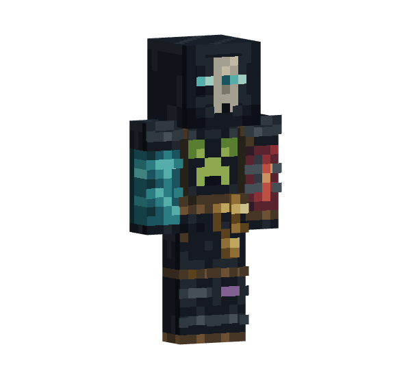

YOUR SURVIVAL WORLD, WITH A FEW EXTRAS
A little more
Minecraft.
Fell a tree. Recover your gear. Raise a dragon.
All the useful little things, together in one Bedrock add-on.
GitHub downloads and source links require access to the private repository.
THE FIELD GUIDE
Find your next favorite feature.
Start with a category or a search.
Open any feature for the complete guide.
Everyday survival
6Less busywork. More building, exploring, and surviving.
FEATURE 001Double Creeper DropsWithout Looting, normal creeper gunpowder outcomes become 0, 2, or 4. Music-disc drops and XP stay vanilla.
Status: Enabled
Introduced: All In One 0.5.0
Last updated: All In One 0.5.0
Scope
This feature changes creeper item loot only. It does not override minecraft:creeper, change its death event, run commands, or alter its experience reward.
Vanilla Baseline
The override was recreated from Mojang's bedrock-samples stable tag v1.26.40.05, commit 7844835b6baad4c0010f46901a4accf87413a022:
The unmodified vanilla file has SHA-256:
02335ec8b0ca479f390054c5743fac3b94071e648b973b4fca40f593da35fb86
That baseline contains:
- One gunpowder pool with a uniformly selected base count from 0 through 2 and the native
looting_enchantfunction. - Separate single-roll music-disc pools conditioned on the killer being a skeleton, stray, bogged, or parched.
Runtime Requirements
The feature uses only the behavior pack's native creeper loot-table override. It requires no script, companion resource-pack content, experiment, Beta API, cheat, game-rule change, or additional module permission. Normal All In One deployment still enables both aligned packs as documented in the README.
Implementation
Bedrock loot tables do not expose a function that multiplies the final count already produced by earlier functions. Duplicating the pool would make an independent second random roll and would not reliably produce twice the first result.
Instead, the gunpowder pool selects one of three equally weighted minecraft:gunpowder entries whose base counts are 0, 2, and 4. These correspond exactly to doubling vanilla's equally likely base results of 0, 1, and 2. Every entry retains looting_enchant; its vanilla bonus bounds of 0 through 1 are scaled to 0 through 2.
Only the first pool is modified. The four special music-disc pools are copied unchanged, so special drops are not doubled. No entity file is included, leaving vanilla XP behavior untouched.
Manual Test Checklist
- Back up a test world, enable both packs, and confirm the server and client Content Logs have no pack or loot-table errors.
- Use a non-Peaceful difficulty and newly spawned creepers for each test.
- Kill at least 30 creepers without Looting and record each gunpowder count before clearing or collecting the next drop.
- Confirm the base gunpowder outcomes are 0, 2, or 4 and occur with roughly equal frequency over many kills.
- Repeat with Looting and confirm its bonus remains available at the documented doubled scale.
- Arrange for each supported skeleton-family killer to kill a creeper and confirm exactly one vanilla music disc drops.
- Confirm normal creeper deaths still produce ordinary XP and the pack does not duplicate it.
- Test explosions and other non-player death causes and confirm vanilla kill conditions still apply.
These gameplay tests require a backed-up live world. They were not completed during the static repository implementation.
Upgrade Checklist
When updating All In One for a newer stable BDS release:
- Obtain the creeper loot table from the matching stable Mojang
bedrock-samplestag. - Compare every pool and item identifier with the All In One override.
- Preserve new vanilla content and conditions, changing only the normal item count logic required by this feature.
- Confirm all three doubled base entries still have equal weight and counts 0, 2, and 4.
- Confirm each entry has exactly one
looting_enchantfunction with the intended scaled bounds. - Confirm special pools occur exactly once and are unchanged from vanilla.
- Run the Manual Test Checklist above, align both manifest headers, every module, and the behavior-pack resource dependency, update the repository changelog, and rebuild every documented archive from the two deployable pack roots.
FEATURE 006Crop ReplantingFully grown wheat, carrots, potatoes, and beetroot replant automatically when harvested; turn it off to leave the space empty.
Status: Enabled
Introduced: All In One 0.5.0
Last updated: All In One 0.7.0
Scope
Harvesting a fully grown wheat, carrot, potato, or beetroot crop immediately replants that crop at growth stage zero. Immature crops are not replanted.
Reviewed Source
The behavior was reviewed from ../Bedrock Essentials+ 1.8.1.zip (SHA-256 a502b312f53643c00af9743812283da3a46b68cef0e6b550648e98cbeb36e112). Its relevant Bedrock Essentials+ BP/scripts/main.js has SHA-256 8acc46ac44005a70ab9cc065df7e1ee41b813154ffaac1407d3f8f93859c6257.
Compatibility was rechecked against Mojang's bedrock-samples tag v1.26.40.05 at commit 7844835b6baad4c0010f46901a4accf87413a022 and the exact stable @minecraft/server 2.9.0 type definitions.
Runtime Requirements
The feature uses stable @minecraft/server 2.9.0 with min_engine_version [1, 26, 40]. It requires no experiment or resource-pack content.
Implementation
The block-break handler records whether a supported crop was at its species-specific mature growth value, then restores the same crop at growth stage zero. Vanilla harvest drops remain available. Replanting is an explicit convenience grant and does not consume an additional seed or harvested crop item.
Personal Control (0.7.0)
/all_in_one:my_features crop_replanting enable|disable|status is available to each player without cheats. It defaults to enabled. A disabled player's harvest leaves the block empty, while another enabled player's mature harvest replants normally. The saved boolean player property all_in_one:feature_crop_replanting persists across reconnects and restarts; missing means enabled, while unreadable or malformed data suppresses replanting. The preference applies to the next harvest.
Required: Keep both packs and their matching manifest dependency active, BDS texturepack-required=true, and @minecraft/server allowed if permissions were customized; replace both packs, restart BDS, and reconnect clients for the upgrade. Optional: No additional setting or asset. No new experiment, manual game-rule setup, or cheats are required. Testing-only: Check server/client Content Logs; no client cache refresh is needed for this switch.
Deliberate Differences From the Reviewed Add-on
- Only the four documented vanilla crops are handled.
- Species-specific mature and reset states are checked explicitly.
- Immature crops and unrelated farmland behavior remain vanilla.
Manual Test Checklist
- Break fully grown and immature wheat, carrots, potatoes, and beetroot in Survival.
- Confirm only mature crops return at growth stage zero.
- Confirm vanilla harvest drops remain and no extra planting item is consumed.
- Test unsupported crops and broken farmland; confirm no unintended replant occurs.
- Disable for one player and harvest mature crops, confirming an empty space and normal drops; confirm an enabled second player still replants. Re-enable and repeat after reconnect and restart.
These gameplay tests require a backed-up live world. They were not completed during the static repository implementation.
Upgrade Checklist
- Recheck supported crop identifiers, growth states, mature values, and farmland placement behavior against matching vanilla samples.
- Revalidate block-break timing and block permutation writes against the target stable Script API.
- Run the Manual Test Checklist above on a backed-up world.
FEATURE 007Double DoorsCorrectly paired double doors open and close together for a player who has this enabled. Disabling it lets you operate one door at a time.
Status: Enabled
Introduced: All In One 0.5.0
Last updated: All In One 0.7.0
Scope
Manually interacting with one half of a correctly matched double door applies its open state to the correctly hinged partner. Nearby unrelated doors are not toggled.
Reviewed Source
The behavior was reviewed from ../Bedrock Essentials+ 1.8.1.zip (SHA-256 a502b312f53643c00af9743812283da3a46b68cef0e6b550648e98cbeb36e112). Its relevant Bedrock Essentials+ BP/scripts/main.js has SHA-256 8acc46ac44005a70ab9cc065df7e1ee41b813154ffaac1407d3f8f93859c6257.
Compatibility was rechecked against Mojang's bedrock-samples tag v1.26.40.05 at commit 7844835b6baad4c0010f46901a4accf87413a022 and the exact stable @minecraft/server 2.9.0 type definitions.
Runtime Requirements
The feature uses stable @minecraft/server 2.9.0 with min_engine_version [1, 26, 40]. It requires no experiment or resource-pack content.
Implementation
After manual door interaction, the script looks perpendicular to the interacted door's facing direction. A partner must have the same block type, direction, vertical half, and opposite hinge. Only that partner's two block halves receive the interacted door's open state.
Personal Control (0.7.0)
/all_in_one:my_features double_doors enable|disable|status is available to each player without cheats and defaults to enabled. A disabled player's interaction leaves the paired neighbour alone; the door they touched still uses normal interaction. An enabled player can operate the same pair. The saved boolean player property all_in_one:feature_double_doors persists across reconnects and restarts; missing means enabled, while unreadable or malformed data suppresses the neighbour change.
Required: Keep both packs and their matching manifest dependency active, BDS texturepack-required=true, and @minecraft/server allowed if permissions were customized; replace both packs, restart BDS, and reconnect clients for the upgrade. Optional: No additional setting or asset. No new experiment, manual game-rule setup, or cheats are required. Testing-only: Check server/client Content Logs; no client cache refresh is needed for this switch.
Deliberate Differences From the Reviewed Add-on
- Full type, direction, half, and hinge matching prevents unrelated door rows from toggling.
- The partner copies the resulting open state instead of receiving an independent blind toggle.
- The behavior does not introduce a vanilla door override.
Manual Test Checklist
- Test every supported wooden and copper double-door pairing from both sides and both halves.
- Place rows, corners, mismatched types, mismatched hinges, and unrelated nearby doors.
- Confirm only the correctly matched partner follows the manually interacted door.
- Confirm single doors and non-manual state changes remain otherwise vanilla.
- Disable for one player, interact with a matched pair, and confirm only the touched door moves. Confirm an enabled second player can operate the pair. Re-enable and repeat after reconnect and restart.
These gameplay tests require a backed-up live world. They were not completed during the static repository implementation.
Upgrade Checklist
- Recheck every supported door identifier and its direction, upper/lower, hinge, and open block states against matching vanilla samples.
- Revalidate interaction timing and permutation writes against the target stable Script API.
- Test any newly introduced door types before adding them to the supported set.
- Run the Manual Test Checklist above on a backed-up world.
FEATURE 008Anvil RepairUse one Iron Ingot on a damaged or chipped anvil while not sneaking to repair one damage level. Disabling it leaves normal anvil interaction available.
Status: Enabled
Introduced: All In One 0.5.0
Last updated: All In One 0.7.0
Scope
Using an iron ingot on a damaged or chipped anvil while not sneaking repairs it by one condition level. Sneaking bypasses the feature so normal anvil interaction remains available.
Reviewed Source
The behavior was reviewed from ../Bedrock Essentials+ 1.8.1.zip (SHA-256 a502b312f53643c00af9743812283da3a46b68cef0e6b550648e98cbeb36e112). Its relevant Bedrock Essentials+ BP/scripts/main.js has SHA-256 8acc46ac44005a70ab9cc065df7e1ee41b813154ffaac1407d3f8f93859c6257.
Compatibility was rechecked against Mojang's bedrock-samples tag v1.26.40.05 at commit 7844835b6baad4c0010f46901a4accf87413a022 and the exact stable @minecraft/server 2.9.0 type definitions.
Runtime Requirements
The feature uses stable @minecraft/server 2.9.0 with min_engine_version [1, 26, 40]. It requires no experiment or resource-pack content.
Implementation
Using an iron ingot on minecraft:damaged_anvil changes it to minecraft:chipped_anvil; using one on minecraft:chipped_anvil changes it to minecraft:anvil. Cardinal orientation is preserved. One ingot is consumed outside Creative. An undamaged anvil is not changed.
Personal Control (0.7.0)
/all_in_one:my_features anvil_repair enable|disable|status is available to each player without cheats and defaults to enabled. For a disabled player, the custom before-interaction handler does not cancel the interaction, repair the block, or consume an ingot; normal anvil interaction remains available. An enabled player can still repair it. The saved boolean player property all_in_one:feature_anvil_repair persists across reconnects and restarts; missing means enabled, while unreadable or malformed data suppresses repair.
Required: Keep both packs and their matching manifest dependency active, BDS texturepack-required=true, and @minecraft/server allowed if permissions were customized; replace both packs, restart BDS, and reconnect clients for the upgrade. Optional: No additional setting or asset. No new experiment, manual game-rule setup, or cheats are required. Testing-only: Check server/client Content Logs; no client cache refresh is needed for this switch.
Deliberate Differences From the Reviewed Add-on
- Current separate damaged, chipped, and undamaged block identifiers replace the source's nonexistent
damagestate. - Orientation is preserved across the block replacement.
- Sneaking provides an explicit bypass, and Creative mode does not consume the ingot.
Manual Test Checklist
- Use iron ingots on damaged, chipped, and undamaged anvils in every orientation while standing and sneaking.
- Confirm standing repairs one level and preserves orientation; confirm undamaged anvils do not consume an ingot.
- Confirm one ingot is consumed in Survival and Adventure but not Creative.
- Confirm sneaking retains ordinary anvil interaction without repair.
- Disable for one player and use an ingot on a damaged anvil; confirm no custom repair, no ingot consumption, and normal interaction. Confirm an enabled second player can repair it. Re-enable and repeat after reconnect and restart.
These gameplay tests require a backed-up live world. They were not completed during the static repository implementation.
Upgrade Checklist
- Recheck anvil block identifiers, orientation states, interaction cancellation, game modes, and item consumption against the target stable BDS release.
- Revalidate block permutation replacement against the exact stable Script API supported by that release.
- Run the Manual Test Checklist above on a backed-up world.
FEATURE 009FlashlightCraft two Iron Ingots and one Torch into a handheld 24-block light beam.
Status: Enabled
Introduced: All In One 0.5.0
Last updated: All In One 0.5.0
Scope
Players can craft and hold all_in_one:flashlight to create a view-aligned 24-block light beam. The feature owns the complete lifecycle of its temporary light blocks, including multiplayer overlap and cleanup after interruptions.
Reviewed Source
The behavior was reviewed from ../Bedrock Essentials+ 1.8.1.zip (SHA-256 a502b312f53643c00af9743812283da3a46b68cef0e6b550648e98cbeb36e112). Relevant source-file checksums are:
8acc46ac44005a70ab9cc065df7e1ee41b813154ffaac1407d3f8f93859c6257 Bedrock Essentials+ BP/scripts/main.js
0cfd1add39b21eadfad2f3e13600fbdf9c0b887cf798f64dccb045bdb041fa01 Bedrock Essentials+ BP/items/flashlight.json
52f92e1cd0a6cd6100f9bfc2852bb7f8c4408ac566798cdbc9fdfa3b68319075 Bedrock Essentials+ BP/recipes/flashlight.json
The source archive declared min_engine_version [1, 21, 100] and stable @minecraft/server 2.6.0. Its behavior manifest contained only a script module despite including item and recipe data, and its resource pack supplied a custom flashlight texture.
Compatibility was rechecked against Mojang's bedrock-samples tag v1.26.40.05 at commit 7844835b6baad4c0010f46901a4accf87413a022 and the exact stable @minecraft/server 2.9.0 type definitions.
Runtime Requirements
The feature uses stable @minecraft/server 2.9.0 with min_engine_version [1, 26, 40]. It requires no experiment. It uses the base client's vanilla glowstone_dust item-atlas key, so no feature-specific resource content is required.
Implementation
The shaped recipe uses two iron ingots and one torch. Holding the flashlight in the selected main-hand slot or off hand creates a 24-block beam of spaced minecraft:light_block_7 blocks which stops at solid blocks.
Ownership is reference-counted so overlapping beams do not remove shared light prematurely. Lights are removed when the view changes, the item is put away, the player changes dimension, or the player disconnects. Tracked positions persist in a world dynamic property: loaded stale lights are removed after a restart, while unloaded positions remain queued until their chunks load. Pre-existing light blocks not owned by this feature are never adopted or removed.
Deliberate Differences From the Reviewed Add-on
- A valid behavior data module accompanies the scripts, item, and recipe.
- The permanent
all_in_oneidentifier replaces source-specific identifiers. - A confirmed vanilla atlas key replaces copied flashlight artwork.
- The beam stops at walls, supports overlapping players and every dimension, and persists cleanup state across restarts.
- No
script_evalcapability, Beta API, or experiment is required.
Manual Test Checklist
- Craft the flashlight and confirm its recipe and vanilla glowstone-dust icon render correctly.
- Hold it in each hand, turn through blocks and open air, overlap beams with another player, switch slots and dimensions, drop it, disconnect, and restart BDS.
- Confirm the beam follows the view, stops at solid blocks, and does not remove another player's shared light.
- Confirm every owned stale
minecraft:light_block_7is removed when loaded, including after restart, while unrelated pre-existing light blocks remain.
These gameplay tests require a backed-up live world. They were not completed during the static repository implementation.
Upgrade Checklist
- Recheck the custom item and recipe formats,
minecraft:light_block_7, the vanillaglowstone_dustatlas key, hand-slot APIs, ray traversal, and dynamic properties against the target stable release. - Type-check cleanup, dimension, disconnect, and chunk-load behavior against the exact supported stable Script API.
- Exercise a BDS restart with active lights in loaded and unloaded chunks.
- Run the Manual Test Checklist above on a backed-up world.
FEATURE 010Ranged Sponge PlacementUse a Sponge while aiming at water within five blocks to place it at the targeted water block. Disabling it leaves normal sponge use intact.
Status: Enabled
Introduced: All In One 0.5.0
Last updated: All In One 0.7.0
Scope
Using a dry sponge while aiming at still or flowing water within five blocks places the sponge at the water target. This is a standalone interaction feature with its own range, target-validation, and consumption behavior.
Reviewed Source
The behavior was reviewed from ../Bedrock Essentials+ 1.8.1.zip (SHA-256 a502b312f53643c00af9743812283da3a46b68cef0e6b550648e98cbeb36e112). Its relevant Bedrock Essentials+ BP/scripts/main.js has SHA-256 8acc46ac44005a70ab9cc065df7e1ee41b813154ffaac1407d3f8f93859c6257.
Compatibility was rechecked against Mojang's bedrock-samples tag v1.26.40.05 at commit 7844835b6baad4c0010f46901a4accf87413a022 and the exact stable @minecraft/server 2.9.0 type definitions.
Runtime Requirements
The feature uses stable @minecraft/server 2.9.0 with min_engine_version [1, 26, 40]. It requires no experiment or resource-pack content.
Implementation
The interaction ray accepts still or flowing water within five blocks. A valid interaction cancels ordinary use, then revalidates the target on the following tick before changing the block or inventory. It places a dry sponge at that water block and consumes one sponge outside Creative. An out-of-range, obstructed, or changed target causes no mutation.
Personal Control (0.7.0)
/all_in_one:my_features ranged_sponge enable|disable|status is available to each player without cheats and defaults to enabled. For a disabled player, the custom handler stops before the raycast and does not cancel item use; normal sponge behavior remains. An enabled player can still place a sponge at range. The saved boolean player property all_in_one:feature_ranged_sponge persists across reconnects and restarts; missing means enabled, while unreadable or malformed data suppresses ranged placement.
Required: Keep both packs and their matching manifest dependency active, BDS texturepack-required=true, and @minecraft/server allowed if permissions were customized; replace both packs, restart BDS, and reconnect clients for the upgrade. Optional: No additional setting or asset. No new experiment, manual game-rule setup, or cheats are required. Testing-only: Check server/client Content Logs; no client cache refresh is needed for this switch.
Deliberate Differences From the Reviewed Add-on
- The target is revalidated immediately before placement to prevent stale-ray block replacement.
- Survival and Adventure consume the sponge; Creative does not.
- The feature is limited to water targets within the documented five-block range.
Manual Test Checklist
- Aim at still and flowing water at distances below, at, and beyond five blocks.
- Confirm valid water becomes a sponge and one item is consumed outside Creative.
- Change or obstruct the target between interaction and the next tick; confirm nothing is replaced or consumed.
- Test non-water blocks, wet sponges, and Creative mode; confirm the documented boundaries.
- Disable for one player and use a dry sponge while aiming at water; confirm no ranged handler or cancellation and normal use remains. Confirm an enabled second player can place at range. Re-enable and repeat after reconnect and restart.
These gameplay tests require a backed-up live world. They were not completed during the static repository implementation.
Upgrade Checklist
- Recheck dry sponge, still-water, and flowing-water identifiers plus raycast and item-use event behavior against the target stable release.
- Revalidate cancellation, next-tick target checks, game modes, block writes, and item consumption against the exact supported Script API.
- Run the Manual Test Checklist above on a backed-up world.
Mining & collecting
6Make every swing count, from your first tree to your next ore vein.
FEATURE 002Silk Touch SpawnersBreak a spawner in Survival or Adventure with a recognised Silk Touch pickaxe to recover one spawner. You can opt out, but then breaking a spawner no longer grants the add-on's spawner drop.
Status: Enabled
Introduced: All In One 0.5.0
Last updated: All In One 0.7.0
Scope
A Survival or Adventure player who mines minecraft:mob_spawner with a recognised vanilla or Features 018–023 pickaxe carrying Silk Touch receives one mob-spawner item. This is independent of tree felling, vein mining, and the other features reviewed from the same source archive.
Reviewed Source
The behavior was reviewed from the user-supplied ../Bedrock Essentials+ 1.8.1.zip (SHA-256 a502b312f53643c00af9743812283da3a46b68cef0e6b550648e98cbeb36e112). Its relevant Bedrock Essentials+ BP/scripts/main.js has SHA-256 8acc46ac44005a70ab9cc065df7e1ee41b813154ffaac1407d3f8f93859c6257.
The archive targeted min_engine_version [1, 21, 100] and stable @minecraft/server 2.6.0. All In One independently implements the outcome under its permanent namespace and current compatibility baseline.
Compatibility was rechecked against Mojang's bedrock-samples tag v1.26.40.05 at commit 7844835b6baad4c0010f46901a4accf87413a022 and the exact stable @minecraft/server 2.9.0 type definitions.
Runtime Requirements
The feature uses stable @minecraft/server 2.9.0 with min_engine_version [1, 26, 40]. It requires no experiment or resource-pack content.
Implementation
The after-break handler verifies the player's game mode, the broken block, the selected recognised pickaxe, and its Silk Touch enchantment before spawning exactly one spawner item at the block location. Recognised custom pickaxes are Redstone, Nether Quartz, Lapis Lazuli, Amethyst, Prismarine, and Emerald. It grants nothing in Creative, grants nothing without Silk Touch, and does not override the vanilla spawner block or its loot table.
Personal Control (0.7.0)
/all_in_one:my_features silk_touch_spawners enable|disable|status is available to each player without cheats. The default is enabled. Disabling skips only the add-on's spawner-item grant for that player's break; vanilla spawner breaking continues, and the player will not receive an add-on spawner drop. Another player can keep the feature enabled. The saved boolean player property all_in_one:feature_silk_touch_spawners persists across reconnects and restarts. A missing property means enabled; an unreadable or malformed value suppresses the custom drop until repaired. The next spawner break uses the new preference.
Required: Keep both packs and their matching manifest dependency active, BDS texturepack-required=true, and @minecraft/server allowed if permissions were customized; replace both packs, restart BDS, and reconnect clients for the upgrade. Optional: No additional setting or asset. No new experiment, manual game-rule setup, or cheats are required. Testing-only: Check server/client Content Logs; no client cache refresh is needed for this switch.
Deliberate Differences From the Reviewed Add-on
- The implementation uses the
all_in_onenamespace and current stable Script API. - Game-mode and tool checks prevent an extra spawner in Creative or from unsupported tools.
- No broad vanilla block override or resource pack is introduced.
Manual Test Checklist
- In Survival and Adventure, break a mob spawner with Silk Touch on each recognised pickaxe tier and confirm one spawner item appears.
- Repeat without Silk Touch, with an unsupported tool, and in Creative; confirm no extra spawner is granted.
- Confirm ordinary spawner breaking behavior and unrelated block drops remain unchanged.
- Disable the personal switch and break a spawner with a recognised Silk Touch pickaxe. Confirm no add-on spawner item appears, while an enabled second player still receives one. Re-enable and repeat after reconnect and restart.
These gameplay tests require a backed-up live world. They were not completed during the static repository implementation.
Upgrade Checklist
- Revalidate the after-break event, game-mode values, enchantment component, spawner identifier, and every supported vanilla and All In One pickaxe identifier against the target stable BDS release.
- Type-check the scripts against the exact stable
@minecraft/serverpackage supported by that release. - Run the Manual Test Checklist above and confirm no vanilla spawner override has been added.
FEATURE 003Tree FellingSneak-break a natural tree with an axe to fell connected matching logs and natural foliage. Extra logs use durability; foliage does not. You can turn it off for ordinary single-block breaking.
Status: Enabled
Introduced: All In One 0.5.0
Last updated: All In One 0.7.0
Scope
Sneak-breaking a supported natural tree with a recognised axe fells its connected matching logs and then removes bounded, species-matched natural foliage. Recognised axes include the Amethyst, Emerald, Lapis Lazuli, Nether Quartz, Prismarine, and Redstone axes from Features 018–023. Tree felling is documented separately from vein mining because it has a different trigger classification, traversal rules, safety model, durability behavior, and acceptance tests.
Feature 013 TF Collector is an optional enchantment upgrade that collects this feature's newly generated item drops. The base trigger, traversal, loot, durability, and world-drop behavior remain part of Tree Felling and are unchanged when the axe lacks TF Collector.
Reviewed Sources
The initial behavior was reviewed from ../Bedrock Essentials+ 1.8.1.zip (SHA-256 a502b312f53643c00af9743812283da3a46b68cef0e6b550648e98cbeb36e112). Relevant source-file checksums are:
8acc46ac44005a70ab9cc065df7e1ee41b813154ffaac1407d3f8f93859c6257 Bedrock Essentials+ BP/scripts/main.js
a1b3def83c0872dd72d8570604dd37055e6b399aff3d77f242f1d777988036c1 Bedrock Essentials+ BP/scripts/treeCapitator.js
The foliage behavior consolidated into All In One 0.5.0 was also reviewed against Edds' user-supplied ../VeinCapitator v2-1-0.zip (SHA-256 37a6dec46f9ca75a029eb22b2c6ddfe772d237812e5b97e94b11c2ab40217969). Relevant source-file checksums are:
08e28c80939ec5c4e2e9cff27dbda87cf865ccf92359acb8d384e1788ee50ff5 scripts/classes/veinminer.js
4c09650376497085a2a0eebadf003f4360026722f235783dc27fd8649214812d scripts/data/axe.js
09ffaf7744691208ff52de6ccde9c9059dd9155ad6fd0fb5cbd68cfc3a3ca9b1 subpacks/veincapitator/scripts/main.js
The identifiable VeinCapitator 3.0.0 upstream release was reviewed with downloaded-archive SHA-256 85680b92f5ed6a236b7ec2961c254bc3729def2fb3fb24caafd16aefc4d7ef1d. All In One retains explicit target-version identifiers and smaller safety caps instead of its broader pattern matching and traversal.
Compatibility was checked against Mojang's bedrock-samples tag v1.26.40.05 at commit 7844835b6baad4c0010f46901a4accf87413a022, including current log, foliage, axe, and persistent_bit metadata.
Runtime Requirements
The feature uses stable @minecraft/server 2.9.0 with min_engine_version [1, 26, 40]. It requires no experiment or resource-pack content.
Implementation
Sneak-breaking a supported natural log with an axe starts a bounded job only when a vertical run of the same log type terminates in recognised non-persistent foliage. The original block breaks normally; up to 256 additional six-directionally connected logs of that type are then mined.
The script snapshots up to 320 six-directionally attached natural foliage blocks. Each Overworld tree follows its matching leaves, oak also permits azalea leaves, poplar permits all three poplar leaf colours, and Nether stems permit matching wart blocks plus embedded shroomlights. Per-foliage distance limits bound canopy spread, and leaves with persistent_bit set are excluded.
Every additional block evaluates vanilla mining loot with the held axe. Additional logs consume one normal durability use, including Unbreaking; foliage adds no axe wear. Switching tools, slots, or dimensions stops the job.
The job exposes each block's newly generated item entities to Feature 013 only when the triggering axe carries its persistent TF Collector I marker. Pre-existing entities are excluded, and Tree Felling itself does not otherwise change item collection.
Personal Control (0.7.0)
/all_in_one:my_features tree_felling enable|disable|status lets each player control new Tree Felling jobs without cheats. The default is enabled. When disabled, a sneak-broken log is only a normal single-block break; no additional logs or foliage are mined and no Tree Felling mastery use is counted. An already-started job may finish. Other players keep their own setting. The saved boolean player property all_in_one:feature_tree_felling persists across reconnects and restarts; missing means enabled, while unreadable or malformed data suppresses new jobs. This switch is independent of tf_collector, whose effect also requires a valid enchanted axe.
Required: Keep both packs and their matching manifest dependency active, BDS texturepack-required=true, and @minecraft/server allowed if permissions were customized; replace both packs, restart BDS, and reconnect clients for the upgrade. Optional: No additional setting or asset. No new experiment, manual game-rule setup, or cheats are required. Testing-only: Check server/client Content Logs; no client cache refresh is needed for this switch.
Deliberate Differences From the Reviewed Add-ons
- Traversal is capped, species-aware, distance-bounded, and excludes persistent player-placed leaves.
- Only axe-driven tree felling is included; broad hoe, shears, shovel, and sword chaining remains out of scope.
- Vanilla loot evaluation replaces hand-written drop approximations, while foliage removal deliberately adds no tool wear.
- Jobs stop safely when the active tool, slot, or dimension changes.
Manual Test Checklist
- Sneak-break every supported natural tree with vanilla axes and each Features 018–023 axe, including azalea, each poplar colour, and both Nether fungi.
- Confirm only matching connected logs and species-matched natural canopy blocks are removed.
- Confirm vanilla drops, durability per additional log, no foliage durability, and safe stopping when the tool or dimension changes.
- Confirm persistent placed leaves, a nearby unrelated canopy, log-built structures without a natural canopy, and ordinary non-sneaking mining remain unchanged.
- Repeat with and without
TF Collector I; confirm the optional collection path changes only where new item drops land and leaves every Tree Felling rule above intact. - Disable Tree Felling for one player, sneak-break a valid tree, and confirm only the initial log breaks with normal drops, no mastery progress, and no job. Confirm an enabled second player can fell another tree. Re-enable after reconnect and restart, then repeat.
These gameplay tests require a backed-up live world. They were not completed during the static repository implementation.
Upgrade Checklist
- Recheck every supported log, foliage, axe, block state, and Nether canopy identifier against matching Mojang samples.
- Revalidate block traversal, vanilla
mineloot evaluation, enchantments, durability, and dimension behavior against the target stable Script API. - Test newly introduced tree species and adjacent mixed canopies before adding identifiers or changing traversal distances.
- Run the Manual Test Checklist above on a backed-up world.
- When changing drop creation or job scheduling, rerun Feature 013's new-item attribution, overflow, and non-Collector regression tests.
FEATURE 004Vein MiningSneak-break a supported ore with a suitable pickaxe to mine its connected vein. Fortune, Silk Touch, XP, and durability still apply. You can turn off connected mining for yourself.
Status: Enabled
Introduced: All In One 0.5.0
Last updated: All In One 0.7.0
Scope
Sneak-breaking a supported ore with a suitable recognised pickaxe mines a bounded connected vein while preserving normal tool-tier access, enchantment-aware loot, XP, and durability. Recognised pickaxes include the six material sets from Features 018–023. It is independent of tree felling despite sharing the chain-job implementation.
Feature 014 VM Collector is an optional enchantment upgrade that collects this feature's newly generated item drops. The base trigger, traversal, loot, XP, durability, and world-drop behavior remain part of Vein Mining and are unchanged when the pickaxe lacks VM Collector.
Reviewed Sources
The initial behavior was reviewed from ../Bedrock Essentials+ 1.8.1.zip (SHA-256 a502b312f53643c00af9743812283da3a46b68cef0e6b550648e98cbeb36e112). Relevant source files include Bedrock Essentials+ BP/scripts/main.js (SHA-256 8acc46ac44005a70ab9cc065df7e1ee41b813154ffaac1407d3f8f93859c6257) and Bedrock Essentials+ BP/scripts/veinMiner.js (SHA-256 d0e2a5e4b219ae54dc3f85379ae0aa1e0816081fd01f795f867cb04500761ca4).
The expanded ore behavior consolidated into All In One 0.5.0 was also reviewed against Edds' user-supplied ../VeinCapitator v2-1-0.zip (SHA-256 37a6dec46f9ca75a029eb22b2c6ddfe772d237812e5b97e94b11c2ab40217969), especially:
08e28c80939ec5c4e2e9cff27dbda87cf865ccf92359acb8d384e1788ee50ff5 scripts/classes/veinminer.js
75774c5d0ee48c762ffe7d20a8d4ddcea6014035af1ef47525f2b1ab203f3738 scripts/data/pickaxe.js
09ffaf7744691208ff52de6ccde9c9059dd9155ad6fd0fb5cbd68cfc3a3ca9b1 subpacks/veincapitator/scripts/main.js
The identifiable VeinCapitator 3.0.0 upstream release was reviewed with downloaded-archive SHA-256 85680b92f5ed6a236b7ec2961c254bc3729def2fb3fb24caafd16aefc4d7ef1d. Its hand-written Fortune logic, temporary global doTileDrops changes, broad tool modes, and 1,000-block traversal were not imported.
Compatibility was checked against Mojang's bedrock-samples tag v1.26.40.05 at commit 7844835b6baad4c0010f46901a4accf87413a022. The stable Microsoft Creator documentation confirms that the mine loot overload evaluates the held tool and its enchantments.
Runtime Requirements
The feature uses stable @minecraft/server 2.9.0 with min_engine_version [1, 26, 40]. It requires no experiment or resource-pack content.
Implementation
Wood and gold pickaxes cover coal, Nether gold, and quartz. Stone, copper, and Redstone additionally cover iron, copper, and lapis. Iron, Nether Quartz, Lapis Lazuli, and Amethyst additionally cover gold, redstone, diamond, and emerald. Diamond, netherite, Prismarine, and Emerald additionally cover ancient debris.
Up to 128 additional six-directionally connected blocks in the same ore group are mined. Matching stone and deepslate forms connect, and lit, unlit, stone, and deepslate redstone forms share one group. The stable /loot ... mine ... mainhand overload evaluates current vanilla loot with the held pickaxe. The script adds vanilla XP when Silk Touch is absent and applies one durability use per additional block. A failed loot evaluation leaves the block in place and stops the job.
The job exposes each ore's newly generated item entities to Feature 014 only when the triggering pickaxe carries its persistent VM Collector I marker. Pre-existing item entities are excluded. XP orbs remain in the world and Vein Mining does not otherwise alter collection.
Personal Control (0.7.0)
/all_in_one:my_features vein_mining enable|disable|status controls each player's new Vein Mining jobs without cheats. It defaults to enabled. When disabled, a sneak-broken ore uses only normal single-block behavior: no connected ore is mined and no Vein Mining mastery use is counted. An already-started job may finish. Other players are independent. The saved boolean player property all_in_one:feature_vein_mining survives reconnects and restarts; missing means enabled, while unreadable or malformed data prevents new jobs. vm_collector is a separate effect switch and cannot grant mining or an enchantment.
Required: Keep both packs and their matching manifest dependency active, BDS texturepack-required=true, and @minecraft/server allowed if permissions were customized; replace both packs, restart BDS, and reconnect clients for the upgrade. Optional: No additional setting or asset. No new experiment, manual game-rule setup, or cheats are required. Testing-only: Check server/client Content Logs; no client cache refresh is needed for this switch.
Deliberate Differences From the Reviewed Add-ons
- Traversal is bounded and stops on tool, slot, dimension, loot, or durability failure.
- Matching stone and deepslate ore forms share a vein group, and Nether gold ore is supported.
- Vanilla loot evaluation preserves current Silk Touch and Fortune behavior instead of using approximate tables.
- Ancient debris drops itself rather than netherite scrap, and current
minecraft:quartz_orereplaces the obsolete source identifier. - Chain mining is limited to supported ores and pickaxes; unrelated broad tool modes remain out of scope.
Manual Test Checklist
- Sneak-break every supported ore with each valid and invalid vanilla and Features 018–023 pickaxe tier.
- Test Silk Touch, every Fortune level, an almost-broken tool, Nether gold ore, and veins crossing stone/deepslate variants.
- Confirm matching variants form one vein, vanilla loot and XP are preserved, each additional block uses durability, and the job stops safely when the tool breaks or changes.
- Confirm ordinary non-sneaking mining, unrelated blocks, and inaccessible-tier ores remain unchanged.
- Repeat with and without
VM Collector I; confirm the optional collection path moves only new ore items, leaves XP in the world, and preserves every Vein Mining rule above. - Disable Vein Mining for one player, sneak-break a valid connected ore, and confirm only the initial ore breaks with normal loot and XP, no mastery progress, and no job. Confirm an enabled second player can mine a different vein. Re-enable after reconnect and restart, then repeat.
These gameplay tests require a backed-up live world. They were not completed during the static repository implementation.
Upgrade Checklist
- Recheck every ore, pickaxe, tier, lit-state, and XP range against matching vanilla samples; confirm copper and all six All In One material pickaxes retain their documented tiers.
- Confirm
/loot spawn ... mine ... mainhandstill evaluates the current held tool, enchantments, and vanilla block loot from an entity command context. - Revalidate durability, Unbreaking, XP grants, dimension changes, and bounded traversal against the target stable Script API.
- Run the Manual Test Checklist above on a backed-up world.
- When changing loot, XP, or job scheduling, rerun Feature 014's new-item attribution, overflow, XP-preservation, and non-Collector regression tests.
FEATURE 005Auto-PickupOpt in through /all_in_one:my_features to collect block drops directly into your inventory. Overflow remains safely in the world.
Status: Enabled
Introduced: All In One 0.5.0
Last updated: All In One 0.9.0
Scope
Players can opt into direct collection of the item entities created by blocks they break. Inventory overflow remains in the world, and disabling the feature restores normal drop behavior.
Reviewed Source
The behavior was reviewed from ../Bedrock Essentials+ 1.8.1.zip (SHA-256 a502b312f53643c00af9743812283da3a46b68cef0e6b550648e98cbeb36e112). Its relevant Bedrock Essentials+ BP/scripts/main.js has SHA-256 8acc46ac44005a70ab9cc065df7e1ee41b813154ffaac1407d3f8f93859c6257.
Compatibility was rechecked against Mojang's bedrock-samples tag v1.26.40.05 at commit 7844835b6baad4c0010f46901a4accf87413a022 and the exact stable @minecraft/server 2.9.0 type definitions.
Runtime Requirements
The feature uses stable @minecraft/server 2.9.0 with min_engine_version [1, 26, 40]. It requires no experiment or resource-pack content.
Implementation
/all_in_one:my_features auto_pickup enable|disable|status controls the persistent all_in_one:auto_pickup player tag. The no-argument command opens the personal feature menu, where Auto-Pickup has its own toggle and info tooltip. It remains off by default, survives reconnects and restarts, and an unreadable tag state suppresses custom pickup. The command is available to ordinary players without cheats.
In 0.9.0, the old /all_in_one:pickup enable|disable player command stopped registering, so it no longer appears in command suggestions or runs. Existing player tags are unchanged. Replace saved command strings with the my_features auto_pickup form above or use the menu. To roll back, restore the backed-up world and both 0.8.0 packs together; the old command then returns with the same saved tag.
Required: Keep both packs and their matching manifest dependency active, BDS texturepack-required=true, and both @minecraft/server and @minecraft/server-ui allowed if permissions were customized; replace both packs, restart BDS, and reconnect clients for the upgrade. Optional: No additional setting or asset. No new experiment, manual game-rule setup, or cheats are required. Testing-only: Check server/client Content Logs; no client cache refresh is needed for this command.
One tick after an enabled player breaks a block, item entities at that block location are offered to the player's inventory. A partially accepted stack is replaced by its remainder at the original item location. A completely unaccepted stack is left untouched.
Deliberate Differences From the Reviewed Add-on
- A namespaced, persistent opt-in control replaces source-specific identifiers.
- Partial and full inventory rejection preserves every remainder rather than killing the source item entity.
- Only item entities at the responsible player's broken block are considered.
Manual Test Checklist
- Enable and disable auto-pickup as a non-operator with cheats disabled; reconnect and confirm the selected state persists.
- Break blocks with empty, partially full, and completely full inventory space.
- Confirm accepted items enter inventory, exact remainders stay at the block, and disabling the feature restores normal drops.
- Test nearby unrelated item entities and simultaneous players; confirm only appropriate block drops are collected.
- Open the personal feature menu, use the Auto-Pickup info icon, toggle and save it, then confirm
/all_in_one:my_features auto_pickup statusreports the same state after reconnect and restart. - Confirm
/all_in_one:pickupis absent from command suggestions and no longer runs, while an existing opt-in tag and the collection behavior remain intact after upgrade.
These gameplay tests require a backed-up live world. They were not completed during the static repository implementation.
Upgrade Checklist
- Revalidate the consolidated custom-command registration, player tags, after-break events, item-entity queries, inventory insertion, and item respawning against the target stable Script API.
- Retest stack-component data, partially accepted stacks, full inventories, multiplayer breaks, and reconnect persistence.
- Run the Manual Test Checklist above on a backed-up world.
FEATURE 013TF CollectorSends new Tree Felling drops directly to the axe user's inventory. You can suspend collection without removing the enchantment.
Status: Enabled
Introduced: All In One 0.5.0
Last updated: All In One 0.7.0
Scope
TF Collector is a single-level custom enchantment for axes, including all six Features 018–023 axes, that upgrades Feature 003 Tree Felling. When TF Collector I is present on the axe that starts a valid tree-felling job, the original block's drops and every additional log and foliage drop are moved directly into that player's inventory. Any stack remainder that does not fit stays at the block that produced it. Without the enchantment, Tree Felling behaves exactly as before.
The feature also includes its one-time mastery reward, ordinary acquisition routes, anvil application, grindstone removal, persistent marker, and visible tooltip. These steps serve the end-to-end goal of obtaining and using TF Collector and are not separately removable player capabilities.
Feature Inventory
- Scope: One-level axe enchantment and its complete acquisition, progress, application, removal, and collection lifecycle.
- Trigger or entry point: Valid Tree Felling activations advance mastery; an enchanted axe activates collection; books can also come from the custom enchanting interaction, master librarians, fishing treasure, and selected chests.
- Expected outcome: One free book drops on the 25th valid activation, and an axe carrying
TF Collector Isends new Tree Felling item drops to the player while preserving overflow and normal tool behavior. - Acceptance tests: Verify all acquisition routes, persistent one-time progress, exact tooltip, compatible-tool enforcement, all tree loot, inventory overflow, non-Collector behavior, and removal.
- Source or provenance: Independently implemented after reviewing the supplied Mo' Enchantments archive, exact stable Script API types, and matching Mojang vanilla data.
- Dependencies: Feature 003 Tree Felling and stable
@minecraft/server2.9.0.
Reviewed Sources and Licensing Boundary
The user supplied ../Mo' Enchantments [V3.0].zip as a behavior reference (SHA-256 594143b8d3c9c4fecbe86de8cb60b185e29ad8e0686ede6cad24bd440d802aa2). It is byte-identical to file 8308088 from the official Mo' Enchantments CurseForge project, released 23 June 2026. Relevant supplied-file checksums are:
23118f9118f8dab1c3da913ede134f3cffd3a4f64f74c2a8b9e97b1cbbde9996 manifest.json
f04eb5330b5010293e0c25dd3b7e09eff5f70d7479ce6cdf4d527ce7c60abd74 items/deep_breaker.json
16ac5f31df8d502d05119cd52ca0cb7503ab85738f945d8bd557778d81c68546 scripts/classes/enchantmets_class.js
6f22ba9bffa6e6ba111e71d232d3c23aba75b9f0d0b560ba35c9195e5f5fc866 scripts/functions/manage_lore.js
a606ce4a0a65014b372d40ab7d7c5f1d0171edbbf05eb4fa3c8a99ee51006847 scripts/forms/book_enchantment_form.js
That project is published as All Rights Reserved. All In One uses its general custom-book and visible-lore concept only as a product reference; no protected JavaScript, JSON, texture, UUID, identifier, or other asset was copied. The registry, progression, distribution, application, removal, and collection implementation is independently authored under the all_in_one namespace. The source add-on's reinforced enchanting table and form UI were not imported.
Compatibility was checked against Mojang's bedrock-samples tag v1.26.40.05 at commit 7844835b6baad4c0010f46901a4accf87413a022, the exact stable @minecraft/server 2.9.0 type definitions (npm tarball SHA-1 be4764c752d180b35edac475bcd017886ec5ce71), and Microsoft's stable ItemStack, EnchantmentTypes, and minecraft:glint documentation. The behavior files below are compatibility-sensitive sources for shared Collector distribution; the resource file verifies the vanilla enchanted-book atlas key and path:
5aa4ae67d68f4768483e872a70d732056b30ba20d9dfa774e676d868345f839b loot_tables/gameplay/fishing/treasure.json
a596855d71a91b5d06d78876831a3a5b1588ac52ae7f455d5226c28a9f28dec9 loot_tables/chests/abandoned_mineshaft.json
ea0475eb680f324d87b3c5ef8677575701c93b0704b07b11f2ef39b3c0fc0955 loot_tables/chests/stronghold_library.json
1cd13af8636d01bd443a9fc8fa8ad6365c4858a55792bc51f7b2bd638ae15da9 loot_tables/chests/woodland_mansion.json
fbb59a89eb28c40164a71df5e64612425ce70f1ad0ce6f68f3e2efae75d0b55a trading/economy_trades/librarian_trades.json
13415a73201c43c03afc7ff9c4e5146366ec31e4f3057228f309730daea963c7 resource_pack/textures/item_texture.json
The pack copies each complete behavior file at its in-pack path, removes only the librarian source's JSON comment because pack JSON cannot contain comments, and applies the narrowly documented additions below. No vanilla pool, trade, condition, function, or weight was otherwise changed. It does not override or copy Mojang's item_texture.json or enchanted-book PNG; the custom item references the existing vanilla atlas entry.
Runtime Requirements and Representation
The feature uses stable @minecraft/server 2.9.0 with min_engine_version [1, 26, 40]. It requires no Beta API, experiment, @minecraft/server-ui module, or new resource-pack asset. The custom book references Mojang's vanilla book_enchanted item-atlas key, mapped to textures/items/book_enchanted, and declares minecraft:glint for the normal purple enchanted glint. The consolidated 0.5.0 baseline includes the corrected atlas key and the compact vanilla-style Enchanted Book and TF Collector I lines shown in the user-provided live-game comparison.
The stable API can inspect registered vanilla enchantments but cannot register a new native enchantment type. TF Collector is therefore represented on an axe by a namespaced ItemStack dynamic property plus the exact lore line TF Collector I; exact lore is also a compatibility fallback if a vanilla item operation drops the dynamic property. The lore is visible in the normal tooltip. Bedrock does not expose a stable way to force glint onto an arbitrary vanilla tool, so a TF-Collector-only axe has the tooltip but glints only when it also has a vanilla enchantment. This limitation was accepted before implementation.
all_in_one_bp/scripts/custom_enchantments.js holds a registry shared with Feature 014. Adding a future enchantment requires a registry entry and its static custom book item, then deliberate additions to any desired native loot and trade tables. Progression, application, removal, lore, and compatibility checks are reused automatically.
Mastery Progress and Free Book
Every successful validated Tree Felling activation advances a separate per-player TF Collector track, whether or not the current axe already carries the enchantment. The action bar displays TF Collector I, a 20-segment progress bar, and the exact count after each activation. Breaking an unsupported log, using the wrong tool, mining without sneaking, or failing the natural-canopy validation does not count.
On activation 25, the completed action bar is shown and one all_in_one:tf_collector_book item is spawned at the centre of the initially broken block alongside the tree loot. The reward is deliberately excluded from TF Collector's own collection pass. Feature 005 Auto-Pickup remains independent and may collect it if the player enabled that feature. Progress and the rewarded flag persist on the player; this mastery book is awarded once and cannot be farmed by reconnecting or restarting.
Ordinary Acquisition, Application, and Removal
- Enchanting table: While at level 30 or above, sneak-use a vanilla enchanting table with a regular book in the main hand. Outside Creative this consumes one book, three lapis lazuli, and three levels, then selects one registered Collector book at equal weight. Standing interaction opens the untouched vanilla enchanting interface. Stable scripting cannot read the table's bookshelf power, so level 30 is the explicit eligibility check.
- Librarian: A librarian whose master offers are generated while All In One 0.5.0 or later is active selects one of the two Collector trades. The TF Collector book costs 24 emeralds plus one regular book, permits 12 uses, uses the vanilla price multiplier, and rewards villager and player trading XP. A librarian that already saved all master offers before the upgrade may retain those saved offers.
- Fishing: The complete vanilla fishing treasure table is retained and gains one shared Collector-book entry with weight 2 beside the unchanged vanilla weight total of 31. The vanilla root fishing table's quality-2 treasure selection is untouched, so Luck of the Sea continues to improve the chance of reaching the treasure pool. The shared entry chooses TF or VM Collector equally.
- Loot chests: Abandoned mineshaft, stronghold library, and woodland mansion chests each retain their complete vanilla pools and gain an independent 3% chance to roll one equally selected Collector book.
- Anvil: Put a compatible axe in the main hand and the TF Collector book in the off hand, then sneak-use an anvil. Outside Creative this costs four levels and applies vanilla's 12% anvil-damage chance. The book is consumed, the exact
TF Collector Ilore appears, and existing vanilla enchantments and item data are preserved. - Grindstone: Hold a custom-enchanted axe and sneak-use a grindstone to remove all All In One custom enchantments and their exact lore lines. Vanilla enchantments are preserved. Outside Creative the player receives two XP points for each removed custom enchantment.
Collection Behavior
Only item entities newly produced at each Tree Felling block are considered. Item entities already lying at a location are recorded before the block's loot is created and are never swept up as part of TF Collector. Each new stack is inserted into the triggering player's inventory; only the accepted quantity is removed from the world, and a partial or complete remainder stays at its source when the inventory is full.
The original block still breaks normally. Every additional log and foliage block continues to use the existing vanilla mine loot evaluation with the held axe. Log durability, Unbreaking, foliage's no-wear rule, job caps, species matching, natural-leaf safeguards, tool/slot/dimension stopping, and all non-enchanted behavior remain Feature 003 responsibilities and are unchanged.
Personal Collection Control (0.7.0)
/all_in_one:my_features tf_collector enable|disable|status controls only the player's collection effect for new Tree Felling jobs. It defaults to enabled and does not add or remove the enchantment, change mastery progress, or affect book acquisition. Enabling the preference never grants collection by itself: the axe must carry TF Collector I and Tree Felling must be enabled. If disabled, drops from the next job remain in the world, except that independently enabled Auto-Pickup may collect the initial block's drops. A job already started may finish with its original collection state. The saved boolean player property all_in_one:feature_tf_collector persists across reconnects and restarts; missing means enabled, while unreadable or malformed data suppresses collection. Other players have independent preferences.
Required: Keep both packs and their matching manifest dependency active, BDS texturepack-required=true, and @minecraft/server allowed if permissions were customized; replace both packs, restart BDS, and reconnect clients for the upgrade. Optional: No additional setting or asset. No new experiment, manual game-rule setup, or cheats are required. Testing-only: Check server/client Content Logs; no client cache refresh is needed for this switch.
Deliberate Differences From the Reviewed Add-on
- The implementation is independently authored and uses a small registry rather than the source add-on's protected class and form system.
- The feature integrates with the existing vanilla enchanting table, anvil, grindstone, librarian, fishing, and chest paths without adding a reinforced table or UI dependency.
- A custom book can glint, but a vanilla tool cannot be forced to glint through stable APIs; the exact level-I lore and persistent marker supply the functional representation.
- Progress is bounded to one persistent free book per player and appears in the action bar, avoiding chat spam and requiring no resource-pack UI.
- Collector targets only new drops from the one validated Tree Felling activation and leaves pre-existing items and inventory overflow in the world.
Manual Test Checklist
- Start BDS with both packs enabled and confirm there are no item, loot-table, trading, module-import, dynamic-property, event, or script errors.
- Complete 24 valid Tree Felling activations, reconnect and restart during progress, and confirm the separate action-bar count persists without a reward. Confirm invalid attempts do not advance it.
- Complete activation 25 and confirm exactly one glinting
TF Collector Ibook drops at the initial block, even when the triggering axe already has TF Collector. Reconnect and complete more activations and confirm no second mastery book is awarded. - Acquire TF Collector through repeated level-30 book rolls, librarian master offers generated while All In One 0.5.0 or later is active, fishing with and without Luck of the Sea, and every selected chest. Confirm all pre-existing vanilla contents and trades still occur.
- Sneak-use an anvil with every vanilla and Features 018–023 axe plus invalid tools, insufficient and sufficient levels, existing vanilla enchantments, full lore, Creative mode, and each anvil damage state. Confirm only axes accept the book and the book, level cost, lore, data, and anvil wear are correct.
- Test every supported natural tree with TF Collector, an open inventory, a nearly full inventory, and unrelated dropped items at several source blocks. Confirm all and only new tree item drops enter the inventory, remainders stay at their source, and the mastery reward remains dropped unless independently collected by Auto-Pickup.
- Repeat the same trees without TF Collector and confirm normal world drops, traversal, durability, job cancellation, and all Feature 003 safeguards are unchanged.
- Sneak-use a grindstone with a TF Collector axe that also has vanilla enchantments. Confirm the custom property and exact lore disappear, vanilla enchantments remain, two XP points are awarded outside Creative, and collection no longer activates.
- Confirm the custom book renders the vanilla enchanted-book icon in inventory and hotbar slots and has the standard purple glint. Confirm the tooltip contains only an uncoloured
Enchanted Booktitle followed immediately byTF Collector I, without a blank spacer or applicability section. Confirm the accepted limitation that a vanilla axe with only TF Collector has no forced glint, while one with a vanilla enchantment glints normally. - Disable only
tf_collectorwhile holding an enchanted axe and confirm Tree Felling still runs but its new drops remain in the world. Re-enable with an unenchanted axe and confirm the preference grants no collection. Disabletree_fellingwhile Collector stays enabled and confirm no job or Collector effect starts. Repeat with a second player and after reconnect and restart.
These gameplay tests require a backed-up live world. They were not completed during the static repository implementation.
Upgrade Checklist
- Confirm the target BDS release's highest supported stable
@minecraft/serverversion and type-check all scripts against its exact definitions. - Revalidate ItemStack dynamic properties, lore, inventory insertion/remainders, player progress properties, action-bar display, item spawning, XP methods, equipment slots, and interaction before-events.
- Recompare every complete vanilla override listed above with the matching
bedrock-samplestag, preserve upstream changes, and reapply only the shared Collector additions. - Confirm fishing still routes through
loot_tables/gameplay/fishing/treasure.jsonwith its Luck quality, librarian master-tier structure remains compatible, the three chest paths remain current, and the vanilla item atlas still mapsbook_enchantedtotextures/items/book_enchanted. - Check whether stable custom-enchantment registration or a supported vanilla-tool glint API has become available; migrate only with backward-compatible marker and lore handling.
- Run this document's Manual Test Checklist and Feature 003's checklist on a backed-up world, including multiplayer attribution, restarts, full inventories, and Feature 005 interaction.
FEATURE 014VM CollectorSends new Vein Mining item drops directly to the pickaxe user's inventory while leaving XP in the world. You can suspend collection without removing the enchantment.
Status: Enabled
Introduced: All In One 0.5.0
Last updated: All In One 0.7.0
Scope
VM Collector is a single-level custom enchantment for supported pickaxes, including all six Features 018–023 pickaxes, that upgrades Feature 004 Vein Mining. When VM Collector I is present on the pickaxe that starts a valid vein-mining job, the original ore's item drops and every additional ore drop are moved directly into that player's inventory. Any stack remainder that does not fit stays at the ore block that produced it. Ore XP remains in the world, and Vein Mining without the enchantment behaves exactly as before.
The feature includes its one-time mastery reward, ordinary acquisition routes, anvil application, grindstone removal, persistent marker, and visible tooltip. These steps form the end-to-end lifecycle of obtaining and using VM Collector.
Feature Inventory
- Scope: One-level pickaxe enchantment and its complete acquisition, progress, application, removal, and collection lifecycle.
- Trigger or entry point: Valid Vein Mining activations advance mastery; an enchanted pickaxe activates collection; books can also come from the custom enchanting interaction, master librarians, fishing treasure, and selected chests.
- Expected outcome: One free book drops on the 25th valid activation, and a pickaxe carrying
VM Collector Isends new Vein Mining item drops to the player while preserving XP, overflow, and normal tool behavior. - Acceptance tests: Verify all acquisition routes, persistent one-time progress, exact tooltip, compatible-tool enforcement, ore item collection, world XP, inventory overflow, non-Collector behavior, and removal.
- Source or provenance: Independently implemented after reviewing the supplied Mo' Enchantments archive, exact stable Script API types, and matching Mojang vanilla data.
- Dependencies: Feature 004 Vein Mining and stable
@minecraft/server2.9.0.
Reviewed Sources and Licensing Boundary
The user supplied ../Mo' Enchantments [V3.0].zip as a behavior reference (SHA-256 594143b8d3c9c4fecbe86de8cb60b185e29ad8e0686ede6cad24bd440d802aa2). It is byte-identical to file 8308088 from the official Mo' Enchantments CurseForge project, released 23 June 2026. Relevant supplied-file checksums are:
23118f9118f8dab1c3da913ede134f3cffd3a4f64f74c2a8b9e97b1cbbde9996 manifest.json
f04eb5330b5010293e0c25dd3b7e09eff5f70d7479ce6cdf4d527ce7c60abd74 items/deep_breaker.json
16ac5f31df8d502d05119cd52ca0cb7503ab85738f945d8bd557778d81c68546 scripts/classes/enchantmets_class.js
6f22ba9bffa6e6ba111e71d232d3c23aba75b9f0d0b560ba35c9195e5f5fc866 scripts/functions/manage_lore.js
a606ce4a0a65014b372d40ab7d7c5f1d0171edbbf05eb4fa3c8a99ee51006847 scripts/forms/book_enchantment_form.js
The project is All Rights Reserved, so no source implementation or asset was copied. All In One independently implements the registry, progression, distribution, application, removal, tooltip, and collection behavior under its existing namespace. The source add-on's reinforced enchanting table and form UI remain out of scope.
Compatibility was checked against Mojang's bedrock-samples tag v1.26.40.05 at commit 7844835b6baad4c0010f46901a4accf87413a022, the exact stable @minecraft/server 2.9.0 type definitions (npm tarball SHA-1 be4764c752d180b35edac475bcd017886ec5ce71), and Microsoft's stable ItemStack, EnchantmentTypes, and minecraft:glint documentation. The behavior files below are complete vanilla sources for shared Collector distribution; the resource file verifies the vanilla enchanted-book atlas key and path:
5aa4ae67d68f4768483e872a70d732056b30ba20d9dfa774e676d868345f839b loot_tables/gameplay/fishing/treasure.json
a596855d71a91b5d06d78876831a3a5b1588ac52ae7f455d5226c28a9f28dec9 loot_tables/chests/abandoned_mineshaft.json
ea0475eb680f324d87b3c5ef8677575701c93b0704b07b11f2ef39b3c0fc0955 loot_tables/chests/stronghold_library.json
1cd13af8636d01bd443a9fc8fa8ad6365c4858a55792bc51f7b2bd638ae15da9 loot_tables/chests/woodland_mansion.json
fbb59a89eb28c40164a71df5e64612425ce70f1ad0ce6f68f3e2efae75d0b55a trading/economy_trades/librarian_trades.json
13415a73201c43c03afc7ff9c4e5146366ec31e4f3057228f309730daea963c7 resource_pack/textures/item_texture.json
Each behavior file is the matching complete vanilla source with only the shared Collector addition. The librarian source's JSON comment was removed to keep pack JSON valid; no vanilla pool, condition, function, trade, or weight was otherwise changed. The pack does not copy or override Mojang's item_texture.json or enchanted-book PNG; it references the existing vanilla atlas entry.
Runtime Requirements and Representation
VM Collector uses stable @minecraft/server 2.9.0 with min_engine_version [1, 26, 40], no Beta API, experiment, @minecraft/server-ui, or new resource asset. Its book references Mojang's vanilla book_enchanted item-atlas key, mapped to textures/items/book_enchanted, and has the standard purple minecraft:glint. The consolidated 0.5.0 baseline includes the corrected atlas key and the compact vanilla-style Enchanted Book and VM Collector I lines shown in the user-provided live-game comparison.
Because stable Bedrock APIs cannot register a native custom enchantment, a pickaxe stores a namespaced dynamic property and the exact visible lore line VM Collector I. Exact lore also provides a fallback after vanilla item operations. Stable APIs cannot force a glint onto an arbitrary vanilla tool, so a pickaxe carrying only VM Collector shows the tooltip but glints only if it also has a vanilla enchantment. This limitation was accepted before implementation.
The shared registry in all_in_one_bp/scripts/custom_enchantments.js supplies generic progress, application, removal, lore, and compatibility behavior. A future custom enchantment adds a registry definition and static book item plus deliberate native loot/trade additions, instead of duplicating this lifecycle.
Mastery Progress and Free Book
Every successful validated Vein Mining activation advances the player's separate VM Collector track, whether or not the pickaxe already has VM Collector. A 20-segment action-bar display shows VM Collector I and the count. Unsupported blocks, inadequate tool tiers, non-sneaking mining, or ores with no connected supported block do not count.
Activation 25 shows completion and spawns one all_in_one:vm_collector_book at the centre of the initially broken ore alongside the mining drops. VM Collector excludes that reward from its own collection. Independently enabled Feature 005 Auto-Pickup may still collect it. Player progress and the rewarded flag persist through reconnects and restarts, and the free mastery book is granted only once.
Ordinary Acquisition, Application, and Removal
- Enchanting table: At level 30 or above, sneak-use a vanilla enchanting table with a regular book in the main hand. Outside Creative this consumes one book, three lapis lazuli, and three levels and equally selects one registered Collector book. Standing use retains the native interface. The stable API cannot inspect bookshelf power, so level 30 is used as the explicit eligibility requirement.
- Librarian: A librarian whose master offers are generated while All In One 0.5.0 or later is active selects one of two Collector trades. VM Collector costs 24 emeralds and one regular book, permits 12 uses, and preserves vanilla trading price and XP behavior. A librarian that already saved all master offers before the upgrade may retain those saved offers.
- Fishing: The vanilla treasure table gains one weight-2 shared Collector entry beside unchanged vanilla entries totalling weight 31. The root table and its quality-2 treasure route remain vanilla, so Luck of the Sea still increases the opportunity to reach the Collector entry. TF and VM books are equally selected inside it.
- Loot chests: Abandoned mineshaft, stronghold library, and woodland mansion tables keep every vanilla pool and independently add a 3% chance for one equally selected Collector book.
- Anvil: Put a supported pickaxe in the main hand and the VM Collector book in the off hand, then sneak-use an anvil. It costs four levels outside Creative, consumes the book, applies the exact
VM Collector Ilore, preserves item data and native enchantments, and uses vanilla's 12% anvil-damage chance. - Grindstone: Hold the custom-enchanted pickaxe and sneak-use a grindstone. All All In One custom enchantments and exact matching lore lines are removed while vanilla enchantments remain. Outside Creative, each removed custom enchantment returns two XP points.
Collection Behavior
VM Collector records item entity IDs already present at each ore location, evaluates the block's existing vanilla mine loot with the held pickaxe, then offers only newly created item stacks to the triggering player's inventory. Accepted quantities disappear from the world; partial or complete overflow stays at that ore block. Unrelated items are not swept up.
The existing Vein Mining traversal, supported tiers, stone/deepslate grouping, Silk Touch and Fortune evaluation, per-block durability, Unbreaking, caps, and stopping safeguards remain unchanged. XP is created by Feature 004 after each additional ore and remains as normal world XP orbs; VM Collector handles only item entities. The initially broken ore's vanilla XP is likewise untouched.
Personal Collection Control (0.7.0)
/all_in_one:my_features vm_collector enable|disable|status controls only the player's collection effect for new Vein Mining jobs. It defaults to enabled and does not add or remove the enchantment, change mastery progress, or affect book acquisition. Enabling the preference never grants collection by itself: the pickaxe must carry VM Collector I and Vein Mining must be enabled. If disabled, ore item drops from the next job remain in the world, except that independently enabled Auto-Pickup may collect the initial block's drops; XP remains in the world in either state. A job already started may finish with its original collection state. The saved boolean player property all_in_one:feature_vm_collector persists across reconnects and restarts; missing means enabled, while unreadable or malformed data suppresses collection. Other players have independent preferences.
Required: Keep both packs and their matching manifest dependency active, BDS texturepack-required=true, and @minecraft/server allowed if permissions were customized; replace both packs, restart BDS, and reconnect clients for the upgrade. Optional: No additional setting or asset. No new experiment, manual game-rule setup, or cheats are required. Testing-only: Check server/client Content Logs; no client cache refresh is needed for this switch.
Deliberate Differences From the Reviewed Add-on
- All implementation and data are independently authored; the source archive supplies only high-level behavior reference.
- A registry-driven stable system replaces the protected reinforced-table and form implementation.
- The book has native purple glint, while the exact level-I lore and persistent marker represent the enchantment on vanilla pickaxes because stable APIs cannot register it or force a tool glint.
- One persistent action-bar mastery track awards one free book after 25 real Vein Mining activations.
- Only newly created ore item drops enter inventory; existing items, overflow, and all XP remain in the world.
Manual Test Checklist
- Start BDS with both packs enabled and confirm there are no item, loot-table, trade, dynamic-property, interaction, or script errors.
- Perform 24 valid Vein Mining activations across reconnects and a restart. Confirm the VM-only action-bar count persists, invalid attempts do not count, and no book is awarded early.
- Complete activation 25 and confirm exactly one glinting
VM Collector Ibook drops at the initially broken ore, including when the pickaxe already has VM Collector. Confirm later activations never award a second mastery book. - Obtain VM Collector from repeated level-30 book rolls, librarian master offers generated while All In One 0.5.0 or later is active, fishing with and without Luck of the Sea, and each selected chest while confirming all original vanilla results remain possible.
- Apply the book to every supported vanilla and Features 018–023 pickaxe tier and try axes, other tools, inadequate levels, full lore, Creative mode, vanilla-enchanted tools, and every anvil state. Confirm only supported pickaxes accept it and all costs, preservation, tooltip, and anvil wear are correct.
- Vein-mine every supported ore with VM Collector, Silk Touch, each Fortune level, open and nearly full inventories, and unrelated items at ore locations. Confirm only new item drops enter inventory, overflow remains at its source, and every expected XP orb stays in the world.
- Repeat without VM Collector. Confirm world drops, XP, traversal, tool tiers, durability, enchantment behavior, failure handling, and all Feature 004 safeguards remain unchanged.
- Sneak-use a grindstone on a VM Collector pickaxe that also has vanilla enchantments. Confirm only All In One custom markers and lore are removed, two XP points are returned outside Creative, and Collector no longer activates.
- Confirm the custom book renders the vanilla enchanted-book icon in inventory and hotbar slots and has the standard purple glint. Confirm the tooltip contains only an uncoloured
Enchanted Booktitle followed immediately byVM Collector I, without a blank spacer or applicability section. Confirm the accepted limitation that a vanilla pickaxe with only VM Collector has no forced glint, while a normally enchanted pickaxe glints. - Disable only
vm_collectorwhile holding an enchanted pickaxe and confirm Vein Mining still runs, its new ore drops remain in the world, and XP is unchanged. Re-enable with an unenchanted pickaxe and confirm the preference grants no collection. Disablevein_miningwhile Collector stays enabled and confirm no job or Collector effect starts. Repeat with a second player and after reconnect and restart.
These gameplay tests require a backed-up live world. They were not completed during the static repository implementation.
Upgrade Checklist
- Confirm the target BDS release's stable Script API version and type-check all scripts against its exact package.
- Revalidate dynamic properties, lore, inventory insertion and overflow, player progression, action-bar display, item spawning, equipment access, interactions, and XP APIs.
- Recompare all five complete vanilla overrides with the matching
bedrock-samplessources, preserve upstream changes, and reapply only the shared Collector additions. - Revalidate the fishing root's Luck quality, librarian master tier, selected chest paths, custom item references, and the vanilla item-atlas mapping from
book_enchantedtotextures/items/book_enchanted. - Check for a stable native custom-enchantment or vanilla-tool-glint API and retain backward compatibility for already marked tools if representation changes.
- Run this document's Manual Test Checklist and Feature 004's checklist on a backed-up world, including every ore group, Silk Touch, Fortune, full inventories, multiplayer attribution, restarts, and Feature 005 interaction.
Recovery & visibility
2Keep track of your drops and find your way back after a death.
FEATURE 011Grave Recoverystores your inventory, equipment, and exact XP in an owner-locked grave. Its eight memorials now have carved material textures and raised details, with a matching gold key icon.
Status: Enabled
Introduced: All In One 0.5.0
Last updated: All In One 0.11.0
Scope
Player deaths now create an owner-locked grave that stores the player's 36 inventory slots, head/chest/legs/feet equipment, off hand, and exact total XP. The grave replaces an earlier coordinate-only development implementation while retaining its useful floored death coordinates and dimension in the respawn message.
The feature uses eight grave designs based on the supplied silhouettes and refreshed in 0.6.0. A player's level at death selects wooden below level 12, stone below 25, stone slab below 37, stone cross below 50, blackstone below 62, golden blackstone below 75, golden cross netherite below 87, or golden netherite at level 87 and above. These custom geometries and textures require the companion all_in_one_rp/ resource pack.
Feature Inventory
These safeguards extend Grave Recovery (011); placement, backups, records, keys, partial recovery and lifecycle repair serve the same end-to-end recovery capability and do not receive separate feature numbers.
| Safeguard | Trigger and outcome | Acceptance |
|---|---|---|
| Independent native backup | Before death transfer and before/after recovery; preserve exact native item stacks independently of storage. | Enchantments, damage, names, custom properties and filled shulkers survive restoration. Backup failure before transfer preserves the player's items/XP. |
| Persistent recovery record | Creation, partial/full recovery and interrupted operations; record ownership, location, remaining contents, XP and completion. | Remaining-only restoration, restart persistence, completed-grave replay refusal and interrupted-operation review. |
| Safer End placement | Death in the End; prefer end-stone island ground, exclude tower supports and reserved portal/platform columns. | Air deaths during a dragon fight use suitable ground; no occupied block is replaced; unsafe/failed backup cases retain inventory. |
| Missing-grave repair | Loaded integrity pass or an owner/admin holding its key near its coordinates. | Repair/relocation updates keys, confirmed missing storage restores once, unloading does not create duplicates and non-owners are refused. |
Reviewed Sources
The user supplied the two halves of Grave Add-On V2 beside this repository. Their manifests report pack version [1, 0, 0], minimum engine version [1, 19, 70], and stable @minecraft/server 1.13.0.
2d6dc9986324e62802b3e83c5e7d88df73996559858ea918fd01bb42cbd9dbbf Grave_B.zip
44f16e59ce808b0f1ec41c183714a59681fa726b21bd24129d9aef360975de2c Grave_R.zip
Relevant source-file checksums were:
d70e6e72d975bbc4409709880d48ee4c8f333f74735628239de9b4f83dfafcab behavior manifest.json
becccccc972d89bff7653b1a354fbf494acb8e166fdd8222d8cef37f3996a91a behavior scripts/index.js
f6084b69c87fb1c29766f5a52e24ff8ceabf5c4159fc4dda2d3f09c43ebdc5d4 behavior entities/grave_inventory.json
9fd3e124851422488df787a64335cce3ac237fc6b005bf66867b9eac037f2941 behavior items/key.json
dc86dea83c90fe0dc716aca844a85ad1208912514c64e56fa29368933d40a57c behavior recipes/key.json
a0507715d88de1d270e9b666c0cc1e9beb0f3e4ba539931e6bd7031ba1254b66 resource manifest.json
9022bd657e0d31916e1568539ead5b2ab8a8712e4b02eb1cdf8a5badfb8c4fbc resource entity/grave_inventory.json
2b3f8498d62c6ed09e6fd8775e1afa850bfbf4bc2efc36763ca68f75a6091b53 resource textures/terrain_texture.json
The identifiable official CurseForge project was also reviewed. Its current V2.0.8 release, published April 30, 2026, had downloaded-archive SHA-256 ea5bfc500f47c8bf08b75c0e49ff77aba3401d20c62f66e38700614b4ccb1e6f. It raises the minimum engine version to [1, 21, 0] and adds administrative recovery and marker restoration, but retains Script API 1.13.0 and the destructive placement approach described below.
Compatibility was rechecked against Mojang's bedrock-samples tag v1.26.40.05 at commit 7844835b6baad4c0010f46901a4accf87413a022 and the exact stable @minecraft/server 2.9.0 type definitions. Current Creator documentation was used for ItemStack dynamic properties, cancellable playerBreakBlock, the immovable minecraft:movable component, and shaped-recipe unlock data.
Visual Assets in 0.6.0
All eight grave textures are newly painted 128×128 images mapped to a consistent 64×64 logical UV space. The wooden and stone-cross projects previously used 32×32 logical space; their project resolution is now 64×64 to match the newly painted atlas while preserving numeric face coordinates. Carved stone, wood grain, gilded edging and skull details distinguish the progression. Each model adds four small raised inlay/stud cubes to the existing grave bone. Original bones, pivots, rotations, geometry identifiers and item display transforms are retained; Blockbench exports the native 1.21.110 geometry format supported by the declared engine floor.
The details project at most 0.18 model units from the existing plinth faces. The exporter normalizes GUI rotation from 225 to -135 degrees and writes fit_to_frame: true, matching the documented default. Gameplay collision/selection boxes, cardinal permutations, level thresholds, ownership, storage and legacy-marker migration retain their existing contract. Check those slight decorative projections in every direction in the live client.
Editable sources are assets/blockbench/<grave>.bbmodel, exported to matching all_in_one_rp/models/blocks/<grave>.geo.json and all_in_one_rp/textures/blocks/<grave>.png. The newly painted 32×32 gold Grave Key comes from assets/blockbench/grave_key.bbmodel. See the source/export map.
The saved Blockbench previews show the stone memorial and gilded netherite memorial.


Run python tools/assets/validate-assets.py and compare exported bone names/pivots and original cubes with the previous release. Preview every saved model with its saved texture in Blockbench; live cardinal-direction, item-display, collision and grave-recovery checks still apply.
Runtime Requirements
Both packs target min_engine_version [1, 26, 40]; the behavior pack uses stable @minecraft/server 2.9.0 and requires no experiment. The behavior manifest depends on resource-pack header UUID 40582d8b-26b5-4030-a0aa-7d4398360fc4. The resource module UUID is cdac1982-1f8a-4e2d-a6c0-eb8d1f489b13; both are permanent repository identities.
The server must install all_in_one_bp/ under behavior_packs/, install all_in_one_rp/ under resource_packs/, and enable both header UUIDs for the world as shown in the README installation instructions.
- Required: enable both pack roots and current versions, enforce
texturepack-required=true, and allow stable@minecraft/serverin any customised script permissions. The existing personal menu also requires@minecraft/server-ui. - Required and automatic:
keepInventory=true; the grave script maintains it. No other game rule, experiment, Beta API toggle or cheat setting is needed. - Update: stop BDS, back up the complete world (including world structures and dynamic properties), replace both packs, update both world-pack versions and restart. Reconnect to accept the updated resource pack; use the README cache troubleshooting only if visuals remain stale.
- Optional:
content-log-file-enabled=truefor server diagnostics; grave lifecycle transitions also log with[All In One graves]. - Testing only: operator block/entity removal commands on a disposable, backed-up world. Enabling cheats for these commands disables world achievements. The new custom repair/status commands themselves use
cheatsRequired=false.
Implementation
Transactional Death Storage
The grave system keeps the world keepInventory game rule enabled. This is an operational requirement, not the recovery mechanic itself: it prevents vanilla from dropping or deleting contents before the after-death script can validate a safe location and persistent storage entity.
After a death, the script first confirms that both empty grave space and a supported persistent all_in_one:grave_storage entity are available. It creates the marker/storage, copies native item stacks into storage without removing the player's originals, and commits a preparing recovery record and world-saved snapshot. Only then does it clear the temporary copies and transfer the player's items and exact total XP. A second checkpoint commits the actual stored contents as active. Grave Keys are deliberately left with the player.
Failure before transfer rolls back its own marker, storage and temporary support blocks while the player's inventory/XP remain protected by keepInventory. Transfer failures attempt the existing rollback. If rollback is incomplete or a later checkpoint is uncertain, surviving storage and snapshots are preserved and the record is locked for review instead of being destroyed or replayed. A death with no non-key items and no XP creates no empty grave.
The storage entity has 42 container slots but does not use minecraft:tick_world, command queues, block sensors, gravity, collision, or damage. Graves therefore do not deliberately keep their chunks ticking.
Non-Destructive Placement
The supplied script attempted to place at the exact death block, avoided only its own grave and an End portal frame, and otherwise ran setblock ... air destroy. It could consequently replace portal blocks, containers, redstone, or almost any occupied block. It also converted nearby lava to magma and built an End platform without checking every affected block.
Outside the End, All In One performs a deterministic, bounded search up to eight blocks horizontally and six blocks vertically. A candidate must have:
- An air target and air block above it.
- A non-liquid, suitable support block below it that the stable downward collision ray recognises. Light blocks, plants, scaffolding and narrow fence supports are rejected.
- No existing grave storage entity in that block.
- Coordinates inside the dimension's current height range.
Because an occupied target is never accepted, portal blocks, End gateways, portal frames, containers, liquids, and unrelated builds are never cleared or replaced. Existing grave blocks are also excluded as supports. If no candidate exists, no grave is created and the player's contents remain with them.
For a death over the End void, the final fallback may create a 3×3 end-stone platform at the dimension floor. It does so only when all 27 checked support, grave-level, and headroom blocks are air. Any failed transaction removes only end stone that transaction placed.
In the End, up to 289 columns within eight blocks are searched downward, with each collision ray capped at 384 blocks. A candidate must stand on minecraft:end_stone; crystal-base bedrock and obsidian tower tops are not accepted. Columns within 12 blocks on both axes of the central exit portal, and within five blocks on both axes of the standard (100, 0) arrival-platform column, are excluded from both ground placement and fallback construction. If no safe candidate/platform or native backup is available, inventory and XP remain with the player. This reduces exposure during dragon fights; independent backups still handle loss of either the marker or storage.
Grave blocks cannot be mined, exploded, or moved by pistons. Every 200 ticks, the loaded integrity pass checks at most 32 graves with a rotating cursor, starting at most four old-grave backups per pass. It repairs an empty marker location. If the support is unsafe or the location is obstructed, it searches for a safe nearby location, commits the new location to the record and moves only that grave. Only its own abandoned marker may be removed; an unrelated obstruction is retained. Keys resolve the current location from the record, including after reconnect/restart.
Keys, Ownership, and Recovery
A successful death creates a non-stackable all_in_one:grave_key bound by dynamic properties to the grave identifier, dimension, and location. Holding it in either hand displays cross-dimension coordinates or same-dimension distance. The key is added to inventory or an empty off hand; if neither can accept it, the respawn message tells the player to craft a blank replacement from one gold nugget, one gold ingot, and one bone. The current recipe unlocks when the player obtains a Gold Nugget, as required by the 1.20-and-later recipe format. The grave owner can use that blank key on the marker to bind it, then interact again to recover.
Ownership uses a persistent random token stored on the player and grave rather than relying only on the visible player name. A player with the all_in_one:grave_admin tag can bypass ownership and key checks for recovery; server operators should grant that tag only to trusted administrators.
Recovery first restores items to their original empty inventory and equipment slots, then uses other inventory space. If anything does not fit, the remaining items and all XP stay in the grave, and the same key can be used again. Once every item fits, exact XP is restored in API-safe chunks, the matching key is consumed, and the marker and storage entity are removed. Items are never intentionally dumped into the world.
XP restoration performs at most 32 chunks of 16,777,216 XP per interaction; exceptionally large totals retain the uncredited remainder for another interaction. Every documented Container.transferItem remainder is explicitly retained in its source slot.
Persistent Backups and Recovery Records
grave_records.js is imported by graves.js; it does not register competing death or interaction handlers. Exact payloads use ItemStack.clone and native StructureManager snapshots, not reconstructed JSON item descriptions. The stable 2.9.0 type definitions were checked for StructureSaveMode.World, includeBlocks, includeEntities, isChunkLoaded and the relevant inventory APIs. Block.isSolid is absent from that stable surface and is not used.
- World dynamic property
all_in_one:grave_record:<grave ID>stores version-1 metadata: owner token/name, dimension/location, marker/direction, native backup name, slot/type/count manifest, exact remaining XP, state and the last 12 lifecycle actions with world time. The manifest validates restoration; it is not an item backup. - World structures
all_in_one:grave_backup_*contain one storage entity with its native inventory. Snapshotting temporarily moves only that invisible entity to one of at most 54 loaded air cells: six vertical offsets (24/48/72 blocks above or below) and nine horizontal offsets within six blocks. It checks that no other entity/player is within 16 blocks and saves entities without blocks. It loads one native verification copy there, requires exactly one new grave entity and a matching slot/type/count manifest, removes that copy and moves the original storage back synchronously. A failed round trip prevents death transfer or locks an in-progress recovery. No temporary chest or dropped loot is created, and no unrelated entity is intentionally captured. all_in_one:grave_phaseon storage prevents an orphaned new, uncommitted copy being mistaken for an older grave. Existing storage with no phase/record gains its first backup when loaded or opened; absent legacyeffect99:*storage is not migrated.- An
activerecord is recoverable. Saverecoveringintent before returning any items/XP. Successful partial recovery saves a fresh snapshot of only the remainder, commits it, then retires the old snapshot. Full recovery commitscompletebefore cleanup and retires its backup.preservedrecords close failed deaths whose originals remained with the player. preparing,recovering,restoringandreviewstates cannot automatically replay a snapshot. Malformed/unreadable records fail closed and are retained. Completed/preserved records remain as small replay guards; active or uncertain snapshots have no automatic expiry. Uncertain/unreferenced snapshots are retained for operator investigation rather than swept indiscriminately.
These are world-local backups, not protection against deleting/corrupting/rolling back the whole world. BDS saves, script properties, native structure writes and player inventory writes do not provide one crash-atomic filesystem transaction. Continue complete external world backups; uncertain operations require review instead of a promise of exactly-once recovery across abrupt power loss.
Missing Storage and Owner Repair
Hold the bound key near the recorded coordinates in the correct dimension. Guidance distinguishes a completed grave, a paused operation and storage that is still being checked. Missing storage requires continuous observations within 12 blocks for at least 200 ticks; a gap over 20 ticks, loss of proximity or an unloaded location resets that observation. The lookup checks the grave ID across loaded storage in the dimension, including storage temporarily displaced from its marker. Duplicate loaded IDs refuse recovery.
Run /all_in_one:grave_repair (or /all_in_one:grave_repair repair) after the check. Owners and administrators can restore a confirmed missing active grave, or repair/relocate a surviving one. A matching key use also requests repair where the client emits an item-use event; the typed command remains the reliable control on all clients. Restoration checks loaded destination space/support and a saved native backup, commits restoring intent, places entities without blocks, validates one new storage entity and its slot/type/count manifest, and reinstates ownership/location/XP metadata. An uncertain placement locks for review and is not repeated. The player then uses the marker normally to collect its contents.
/all_in_one:grave_repair status reports state, coordinates, remaining stack count/XP and backup name. Owner-token checks apply to inspection and restoration. Operators or players tagged all_in_one:grave_admin can repair someone else's grave while holding its key. Normal marker recovery retains the established owner/tag role.
Do not trigger restoration directly from entityRemove: it includes normal unloading. No safeguard force-loads chunks or creates permanent ticking areas.
Interrupted Operations and Administrator Review
- Back up the world and inspect the selected grave's status, lifecycle log, surviving storage and the player's already returned items/XP. Pending snapshots may contain items already delivered; do not load them into the live world as a routine retry.
- If one matching storage entity survives, confirm that its contents and stored XP are the correct outstanding remainder. An operator or tagged grave administrator, holding that grave's key nearby, can explicitly run
/all_in_one:grave_repair resumeto accept and back up that surviving remainder as authoritative. - Resume refuses if storage is absent, duplicated or already active. An uncertain snapshot without surviving storage needs manual investigation on a world copy; the command cannot safely infer what was already delivered.
- The owner can then recover normally. Never clear a pending record merely to bypass its protection.
Upgrade and Rollback
Back up the complete world before installing 0.11.0. Load known existing All In One grave chunks so their surviving contents receive backups; this is not an offline world scan. Already vanished graves and coordinate-only keys have no recoverable payload and are explicitly reported as unprotected. The nine compatibility aliases and legacy migration behaviour remain intact.
Restoration does not change permanent pack identities or the existing owner/key properties. Avoid downgrading a world with open or reviewed records: older scripts do not honour replay guards or maintain native backups after partial recovery. Rollback should restore the matching pre-upgrade world backup and pack pair, rather than running older grave code against newer recovery state.
Compatibility With the Previous Death System
all_in_one_bp/scripts/utilities.js no longer registers death or respawn handlers. all_in_one_bp/scripts/graves.js owns those events and continues using all_in_one:last_death. It understands the new grave record and the older {dimension,x,y,z} coordinate record, so a pending development-world respawn message is not lost during an upgrade.
Temporary Legacy Grave Marker Migration
Removing the supplied Grave Add-On behavior pack also removed the definitions for its serialized custom blocks. Bedrock therefore displayed existing markers as unknown dirt blocks with a question mark. The All In One 0.5.0 baseline temporarily restores the nine original block identifiers and their block:destructible and minecraft:cardinal_direction palette states:
| Legacy identifier | Permanent replacement |
|---|---|
effect99:grave |
all_in_one:stone_grave |
effect99:wooden_grave |
all_in_one:wooden_grave |
effect99:stone_grave |
all_in_one:stone_grave |
effect99:stone_slab_grave |
all_in_one:stone_slab_grave |
effect99:stone_cross_grave |
all_in_one:stone_cross_grave |
effect99:blackstone_grave |
all_in_one:blackstone_grave |
effect99:golden_blackstone_grave |
all_in_one:golden_blackstone_grave |
effect99:golden_cross_netherite_grave |
all_in_one:golden_cross_netherite_grave |
effect99:golden_netherite_grave |
all_in_one:golden_netherite_grave |
Each compatibility definition reuses the matching All In One geometry, texture, collision, and rotation permutations. It has the native minecraft:tick component and the version-2 all_in_one:legacy_grave_migration custom component described by the official custom-components guide. The script registers that component during startup. Within 1–20 ticks after a legacy marker's chunk loads, its tick callback replaces only that block with the mapped permanent identifier and carries across its cardinal direction. The original block:destructible state is deliberately discarded because current All In One markers are uniformly protected.
This is loaded-chunk migration, not a world-file scan: it does not generate, force-load, or inspect unloaded chunks. The conversion is saved with the chunk and does not run again on the permanent block. The process uses stable @minecraft/server 2.9.0 and requires no experiment. It also does not modify adjacent or supporting blocks, so it cannot overwrite a portal during conversion. Conversely, it cannot reconstruct a portal or other block that the legacy add-on had already destroyed when it originally placed the grave.
The user requested marker conversion only. Legacy entity:grave_inventory storage, its items and XP, and effect99:key items are not rehydrated, queried, or migrated. Converted markers therefore preserve the intended model as inert monuments but have no recoverable All In One storage behind them. Interacting with one reports that its storage is unavailable.
The world dynamic property all_in_one:legacy_graves_migrated stores a cumulative successful-conversion count. An operator can run /all_in_one:legacy_graves without enabling cheats to report it. The count confirms that migration is occurring, but it cannot prove there are no legacy markers in chunks that have never been loaded.
Keep the compatibility definitions and migration component installed until every known legacy grave area in every dimension has been visited on a backed-up world, inspected after conversion, saved, and checked again after a server restart. Removing the shim sooner makes any unvisited effect99:* marker unknown again. After an operator explicitly confirms that coverage, a later cleanup release may remove the nine all_in_one_bp/blocks/legacy_*.json files, the migration map/component/counter command in all_in_one_bp/scripts/graves.js, and this temporary operational guidance. The permanent all_in_one:* replacements will remain visible after that cleanup.
Deliberate Differences From the Reviewed Add-on
- All permanent identifiers, item properties, entity types, blocks, geometry identifiers, and texture-atlas keys use the
all_in_onenamespace. The nine temporaryeffect99:*block aliases exist only to migrate already-serialized world data. - The feature targets
[1, 26, 40]and stable Script API 2.9.0 instead of the supplied versions. - Placement is bounded, transactional, and air-only; it never destroys a target block, converts lava, recurses without a limit, or overwrites a portal.
- End fallback construction validates every affected block and rolls back only its own support blocks.
- Exact XP is stored and returned directly instead of spawning at most 100 approximate XP orbs.
- Recovery fills the player directly and retains overflow instead of dropping the entire grave inventory into the world.
- Ownership uses a persistent private token; administrative bypass uses a documented player tag rather than another unrestricted item.
- Permanent grave storage and recovery do not force chunks to tick and do not use environment sensors or queued commands. Only the temporary loaded-chunk migration aliases use a targeted custom block tick.
- The replacement-key recipe uses three valid ingredient symbols and unlocks from a Gold Nugget; the supplied recipe used an undefined
#symbol in occupied pattern positions and predated required 1.20-and-later unlock data. - The current death-coordinate message is incorporated into the grave-aware respawn flow instead of being discarded.
Manual Test Checklist
- Install and enable both pack roots, start BDS, and verify there are no missing dependency, geometry, texture, item, block, entity, recipe, or script errors.
- Die with items in all 36 inventory slots, each armor slot, the off hand, enchanted/damaged/named items, nested containers, and XP. Confirm one bound key remains and the grave stores everything else.
- Recover with empty and partially full inventories. Confirm original slots are preferred, equipment is restored when its slots are empty, overflow stays in the grave, XP waits until every item fits, and the key is consumed only on completion.
- Die at Nether portals, End portals, End gateways, portal frames, chests, shulker boxes, redstone builds, water, lava, bedrock roofs, world-height limits, tight tunnels, beside an existing grave, and over the End void. Confirm no occupied block or liquid is replaced and unsafe cases preserve inventory and XP.
- Confirm the End fallback platform is created only in completely empty space and a failed grave transaction removes its own platform.
- Test progression at levels 12, 25, 37, 50, 62, 75, and 87 and inspect every direction for correct geometry, texture, collision, and selection boxes.
- Try mining, exploding, and piston-moving each grave. Remove one marker with an operator command, leave its location empty, and confirm the loaded integrity pass restores it. Occupy the location and confirm the pass does not overwrite the obstruction.
- Hold a bound key in the main hand and off hand in the same and different dimensions. Confirm coordinates and distance guidance remain correct after reconnecting and restarting BDS.
- Obtain a Gold Nugget and confirm the blank-key recipe unlocks, then craft and bind it as the owner. Confirm another player cannot bind or recover it, a wrong bound key is rejected, and a player with the
all_in_one:grave_admintag can recover it. - Upgrade a copy of a development world with a pending coordinate-only death record and confirm its legacy coordinate message appears once. Confirm all unrelated All In One features still work.
- Back up a world containing all nine supplied
effect99:*block identifiers, disable the old add-on, enable the current All In One release, and load each marker's chunk in every dimension. Confirm each question-mark block becomes the mapped model within 20 server ticks, retains its direction, and changes no neighbouring or supporting block. - Run
/all_in_one:legacy_gravesbefore and after loading those chunks. Confirm the count increases once per marker, survives a restart, and does not increase when revisiting permanently converted markers. - Restart BDS and revisit each migrated location. Confirm every marker remains an
all_in_one:*block. Do not remove the temporary compatibility files until this has been completed for every known legacy grave area.
Safeguard Acceptance on a Backed-Up Test World
| Test | Expected result |
|---|---|
| Die with enchanted/damaged/named gear, custom item properties, filled shulkers and XP; inspect status. | One active backed-up grave; exact item details retained. Force native backup failure separately: originals remain with the player. |
| Die in the air beside a crystal tower while the dragon is alive, kill the dragon and return. Repeat over the void and near the exit/arrival platforms. | Suitable end-stone ground or checked void platform; reserved columns/unsafe cases preserve items; any lost active storage can be restored from its backup. |
| On the test world remove only grave storage, keep its key, wait nearby holding it and run repair. | One restored grave with exact original NBT, equipment, filled shulker contents and XP. Repeat repair: no second entity or item set. |
| Fill inventory, recover part of a stack/items, remove storage, then restore and finish. | Backup contains only the remainder; no already returned item/XP reappears. |
| Remove support/marker or occupy the old position with a chest. | Safe repair/relocation; chest retained; key coordinates update in both hands and after restart. |
| Leave/reload chunks and reconnect/restart before requesting repair. | Fresh loading delay; no false duplicate restoration; records/backups survive a clean restart. |
| Interrupt recovery/placement or inject a checkpoint error on a disposable copy. | Pending/review state refuses replay. Only administrator acceptance of one verified surviving remainder allows resume. |
| Use another player's key, a completed key and an older missing key; load a pre-update surviving grave. | Non-owner refused, completed backup retired, older loss reported honestly, surviving older grave backed up without changing contents. |
Focused Node regressions check transaction ordering, remainders, guards, loading observations and placement decisions; mocks cannot prove native entity/NBT serialization or client behaviour. Exact nested-NBT restore, clean restart persistence, dragon interaction and client controls remain live acceptance checks.
These gameplay tests require a backed-up live world. They were not completed during the static repository implementation.
Upgrade Checklist
- Recheck the highest stable Script API supported by the target BDS release and type-check
all_in_one_bp/scripts/graves.jsagainst that exact package. - Revalidate custom block, item, entity, recipe unlock, client-entity, geometry, texture-atlas, and particle formats against the matching official samples and Creator documentation.
- Recheck grave placement against every new portal, gateway, liquid, passable support, dimension height, or special block type introduced by the target release.
- Confirm
keepInventory, player/item/entity dynamic properties, equipment slots, container transfer, XP methods, cancellable interactions, and entity persistence retain their documented behavior. - Exercise transaction rollback, full-inventory partial recovery, very large XP totals, marker repair, server restart, owner persistence, and multiple nearby graves on a backed-up world.
- Keep both manifest headers, every module version, and the behavior-pack resource dependency version identical. Update both world-pack examples and rebuild every release artifact.
- Retain the
effect99:*compatibility aliases while legacy-marker migration is operational. Before a cleanup release, obtain explicit operator confirmation that every known legacy grave chunk was loaded, saved, restarted, and rechecked; otherwise unvisited markers will become unknown blocks again.
FEATURE 012Floating Item Namesshows item names and stack quantities above nearby drops. Each player can turn their own labels on or off; another player's choice cannot make labels appear for them.
Status: Enabled
Introduced: All In One 0.5.0
Last updated: All In One 0.9.0
Scope and Feature Inventory
Floating Item Names remains one feature. Each player can choose whether to see labels above selected dropped items. The world setting is a master switch; mode, range, nearest-item limit, terrain sight, and pattern remain shared operator settings. With two players beside the same item, only players who enabled their own preference and selected that item are included in its explicit viewer list. The preference defaults to enabled for existing players.
Entry points are /all_in_one:my_features or its typed item_names enable|disable|status form for a player, and the existing item_names* commands for operators. The expected outcome is a camera-facing name and quantity about 0.55 blocks above the drop, with vanilla item behavior unchanged. Acceptance requires separate client views, durable preferences, correct selection, safe label lifecycle, and cleanup of saved legacy helper entities. Grave Recovery and other features do not depend on this setting.
Custom item names are preserved. An unnamed stack uses the existing readable English name derived from its identifier. This is a deliberate fallback, not a localisation rewrite.
Source and API Provenance
The original feature used the public behavior of FloatingItemsNames v1.2.25 as a product reference. Its supplied behavior and resource archives had SHA-1 checksums d3347e8b06f2816c4d5d9842d3e834933b7684e7aaed07392accf60a28ba4417 and 3a976567f1f00cd5a5dff5372d697179457d44297987fe88c67a7b53e47426e9. The official CurseForge listing describes names, amounts, modes, raycasts, patterns, range, and limits. Its protected code and assets were not copied.
The baseline is Mojang bedrock-samples v1.26.40.05, commit 7844835b6baad4c0010f46901a4accf87413a022, and the exact stable @minecraft/server 2.9.0 npm definitions, SHA-1 be4764c752d180b35edac475bcd017886ec5ce71. The 2.9.0 changelog introduces TextPrimitive, PrimitiveShape, and PrimitiveShapesManager. The exact definitions include visibleTo, attachedTo, timeLeft, hasDuration, setText, and addText(text, dimension). They do not include getShapes, defaultVisibleToAll, or hiddenFrom, despite those appearing in newer documentation.
Operator Contract
| Item | Classification | Effect and action |
|---|---|---|
Behavior pack and stable @minecraft/server 2.9.0 |
Required | Enable the pack and keep the declared script dependency. Restart BDS after replacing pack files. |
Companion resource pack and texturepack-required=true |
Required for the complete All In One pack | Other features still require their client assets. Enable the RP in world_resource_packs.json; restart BDS and reconnect clients after updating it. The new text labels themselves do not use helper geometry. |
| Behavior-pack resource dependency | Required | Keep its manifest version aligned with the RP. |
Script permissions for @minecraft/server and @minecraft/server-ui |
Required when BDS permissions are customised | Allow both declared modules in config/default/permissions.json; the latter powers the personal feature menu. |
Beta APIs, experiments, allow-cheats=true, and game rules |
Not required | Personal commands use permission level Any and cheatsRequired: false. Enabling cheats only for diagnostics disables achievements for the world. |
| BDS and client Content Logs | Testing and troubleshooting | Check command registration, script warnings, primitive rendering, and old helper cleanup on a backed-up test world. |
If updated resources look stale after reconnect, verify texturepack-required=true, remove only the affected client's cached All In One pack, and reconnect to download the matching RP. The world configuration and player preferences require no manual conversion.
Configuration and Persistence
The validated world JSON dynamic property all_in_one:item_names_config retains the global settings. Missing or malformed fields use defaults: enabled, nearest mode, 12-block range, 10 labels per player, terrain sight enabled, and {name}{\n}§7×{amount}. Global reset changes this property only.
Each player's own all_in_one:item_names_enabled dynamic property is a boolean. Missing means enabled. Stored false remains false across disconnect, respawn, dimension travel, and server restart. A failed or malformed read excludes that player until a valid value can be resolved; explicit enable or disable can repair a malformed value. Preferences are not copied by player name and are never erased by global disable or reset.
Ordinary players can use the menu or its typed form:
/all_in_one:my_features
/all_in_one:my_features item_names enable|disable|status
The no-argument command opens the personal feature menu, where Floating Item Names has its own toggle and info tooltip. Both paths use the same player property and do not change the world setting. Only a real player command origin is accepted; mutations are deferred to a writable tick and results are sent privately. Typed status reports the personal preference, world setting, and effective state. A player may save a preference while the world switch is off; labels return only after an operator enables it.
In 0.9.0, /all_in_one:my_item_names enable|disable|toggle|status stopped registering, so it no longer appears in command suggestions or runs. The old toggle action can be replaced by the menu; typed my_features item_names still supports enable, disable, and status. Saved all_in_one:item_names_enabled values need no conversion. Replace saved command strings, and keep the operator commands below. To roll back, restore the backed-up world and both 0.8.0 packs together with matching world-pack version entries.
The original operator-only commands and their meanings remain:
/all_in_one:item_names enable|disable|status|reset
/all_in_one:item_names_mode nearest|crosshair
/all_in_one:item_names_range <1-64>
/all_in_one:item_names_limit <1-50>
/all_in_one:item_names_sight enable|disable
/all_in_one:item_names_pattern "{name}{\n}§7×{amount}"
Patterns are limited to 100 characters, require {name} or {amount}, and replace {\n} with a real line break. Formatting codes remain. Global disable removes this feature's active primitives; enable restores only eligible viewers. None of these operator commands changes player preferences.
Selection and Rendering
Every five ticks, the script reads each valid player's preference and evaluates that player's nearest or crosshair selection separately. Nearest mode queries at most four times the configured limit, filters by block ray when terrain sight is on, and stops at the per-player limit. Crosshair mode uses the stable view-direction entity raycast and takes the closest valid item hit. Liquids and passable blocks remain nonblocking in the existing sight test.
Selections are aggregated by source item ID with an explicit player set. One TextPrimitive is attached to each selected dropped item, using a 0.55-block offset, camera-facing text, the current label pattern, and the item's dimension passed to addText. depthTest follows the global terrain-sight setting. visibleTo is populated with at least one eligible player before registration. An empty list means public visibility in the API, so the script never registers or updates a shape with an empty list and removes a shape when its last viewer leaves. Text and viewer lists are updated only when they change. Attachment follows item motion; dimension changes replace the old shape.
Each shape receives a two-second lifetime that is renewed on the five-tick update. This bounds stale labels after script reloads because 2.9.0 cannot enumerate existing shapes. The script removes only shapes it holds; it never calls manager-wide removeAll. It observes the manager's shape limit; after a failed add, it waits 20 ticks before trying another new label and writes a throttled diagnostic. If a shape cannot be given a bounded lifetime, the label is withheld. Item entities and their ItemStacks are never renamed, moved, or removed. Their native pickup, merge, despawn, and physics remain intact.
Legacy-Entity Migration
Old worlds can contain saved all_in_one:item_name_hologram helpers. The script no longer creates them. Before each label update it clears nearby loaded helpers, avoiding duplicate old and new labels; on initialization and every 100 ticks it also queries all loaded entities of only that type in the Overworld, Nether, and End. Cleanup continues while the feature is disabled, and previously unloaded chunks are cleaned after they become loaded. The behavior entity, client entity, and empty geometry remain in the packs solely so saved helpers can be recognized during migration. Do not remove those definitions until an operator confirms every known affected chunk in every dimension has loaded on the upgraded server and explicitly schedules cleanup.
Upgrade a backed-up world by replacing both packs with matching versions, updating both world-pack JSON versions, restarting BDS, reconnecting clients, and visiting areas where old labels were seen. Check both Content Logs and confirm no duplicate or lingering legacy names. Keep the old world backup for rollback; a rollback restores the old pack pair and world together.
Automated and Live Acceptance
Run node --experimental-vm-modules --test tests/item_names.test.cjs tests/player_features.test.cjs, syntax and 2.9.0 API type checks, pack JSON validation, manifest alignment, and git diff --check. The Node tests use mocked Bedrock objects; they check removal of the old player command, continued operator commands, default and saved preferences, fail-closed reads, visibility before registration, changing viewer sets, selection, lifecycle removal, capacity failure, and migration targeting. They do not prove client rendering or engine lifetime behavior.
On a backed-up live BDS world with two real clients:
- With cheats off, have a non-operator use the menu and typed
my_features item_namescommands. Stand both players beside the same dropped item, disable one, and confirm only the enabled client sees its label. Enable both, then disable each independently; no label should leak to the other player. - With the world master disabled, save opposite personal preferences and inspect typed status. Re-enable globally and confirm only the enabled player sees labels. Reset globally and confirm both personal values remain unchanged.
- Reconnect, die and respawn, travel between all three dimensions, and restart BDS. Confirm each preference persists and viewer lists update without a reconnect for preference changes.
- Check nearest mode at range and limit boundaries, different crosshair targets, terrain obstruction per player, sight enabled and disabled, custom names, amounts, formatting codes, and multiline patterns. Confirm camera-facing position and readable depth behavior in both clients.
- Move, merge, pick up, burn, explode, and let labelled items despawn. Confirm labels update or vanish and vanilla item behavior remains intact.
- Upgrade a world with legacy helpers in already loaded and previously unloaded chunks. Test with the world switch off, then on. Confirm only legacy helpers are removed and no duplicate old/new labels remain.
- Stress many drops and several players, then reload scripts and revisit chunks. Confirm no duplicate, public, or stale labels, no excessive server work, and two-second expiry of orphan primitives. Check the manager-capacity warning path without affecting other features.
- Change the same personal preference through the menu and typed command, then inspect it after reconnect and restart. Confirm the world switch still prevents labels when the personal preference is enabled. Verify
/all_in_one:my_item_namesis absent from suggestions and no longer runs while all operator item-names commands remain.
Live BDS and client checks are required before claiming actual rendering, reload cleanup, and persistence compatibility. Static and mocked checks alone cannot establish them.
Dragons & companions
3A new reason to return to the End, and company for the journey.
FEATURE 015Repeatable Dragon EggsEvery completed Ender Dragon victory leaves one newly obtainable Dragon Egg while keeping the vanilla fight, gateways, XP, and rematch ritual.
Status: Enabled
Introduced: All In One 0.5.0
Last updated: All In One 0.5.0
Scope
Every completed Ender Dragon fight leaves one newly obtainable minecraft:dragon_egg at the central exit fountain. The four-End-Crystal respawn ritual remains available whenever players choose to perform it; this feature adds no timer, automatic respawn, changed boss, or alternate entry point.
The vanilla dragon entity, fight controller, death animation, XP, End Gateway creation, Dragon's Breath interaction, and End Crystal costs remain unchanged. This feature only fills in the egg reward when the completed vanilla death sequence does not create a new egg.
Feature Inventory
- Scope: One newly obtainable Dragon Egg for every completed vanilla Ender Dragon fight.
- Trigger or entry point:
minecraft:ender_dragondies inminecraft:the_endafter the ordinary first fight or four-crystal rematch. - Expected outcome: The native egg satisfies the reward when Bedrock creates one; otherwise one egg item appears at the central exit fountain after the death sequence.
- Acceptance tests: Verify the first, second, third, and later victories; existing worlds; multiplayer; restarts; native XP and gateways; exactly one new egg; and the absence of a dragon entity override.
- Source or provenance: Independently scripted against matching Mojang samples, stable Script API types, and Mojang's published Bedrock Dragon Egg behavior.
- Dependencies: Stable
@minecraft/server2.9.0. The companion resource pack is not needed by this feature itself.
Reviewed Sources
Mojang's Dragon Egg article documents that Bedrock Edition can naturally provide two Dragon Eggs by defeating the dragon twice. The matching vanilla entity was reviewed from Mojang's bedrock-samples tag v1.26.40.05, commit 7844835b6baad4c0010f46901a4accf87413a022:
fdcb8167c52f10e258e3059c63025a292ce331651bdbbb4d4d78ad1fd1f32d76 behavior_pack/entities/ender_dragon.json
The implementation also uses the exact stable @minecraft/server 2.9.0 definitions for world.beforeEvents.entityHurt, world.afterEvents.entityDie, Dimension.heightRange, Dimension.getBlock, Dimension.getTopmostBlock, Dimension.spawnItem, ItemStack, and system scheduling.
Runtime Requirements
This feature uses the existing stable script module with min_engine_version [1, 26, 40]. It needs no experiment, Beta API, custom dragon entity, vanilla file override, command block, ticking area, or scheduled server restart.
Implementation
all_in_one_bp/scripts/dragon_rewards.js observes the stable before-hurt and after-death events and ignores every entity except minecraft:ender_dragon in the End. Before each damage application, it refreshes a pre-death record of Dragon Egg block heights in the central x=0, z=0 fountain column. This keeps the comparison valid whether the Script API reports final death before or after the special boss death animation finishes. After death, the script checks that column every five ticks for 260 ticks, covering the vanilla 200-tick sequence with additional scheduling margin.
If a new Dragon Egg block appears, the native reward is retained and the script stops. If none appears before the timeout, the script spawns exactly one Dragon Egg item above the current top block of the central column and informs players in the End. Existing egg blocks recorded before the death do not suppress a missing later reward.
The narrow central-column observation deliberately avoids scanning or changing player builds, gateways, or the wider End island. It assumes the world's active exit fountain remains at the vanilla central column. Operators should collect each native fountain egg before beginning another rematch and must include modified-fountain worlds in live testing.
Compatibility Safeguards
- The repository contains no
entities/ender_dragon.json, End fight controller, exit portal, End Crystal, XP, or gateway override. - Native eggs are observed rather than duplicated, preserving Bedrock's first and second natural rewards.
- The fallback is an item entity, so it never replaces the fountain, portal blocks, containers, redstone, or a player build.
- A temporarily unloaded or inaccessible central column causes no block mutation. The script does not move the reward to an unverified location.
- The reward is communal at the fountain and is not assigned according to last damage, preserving the multiplayer character of the vanilla egg.
Manual Test Checklist
- Back up a test world and start BDS with the behavior pack enabled. Confirm there are no script or content errors and no vanilla Ender Dragon entity override exists.
- Complete a first dragon fight with no egg already in the fountain column. Confirm vanilla creates one egg, the script creates no second egg, vanilla XP appears, and the first gateway is generated.
- Collect the egg, perform the four-End-Crystal rematch immediately, and complete the second total victory. Confirm Bedrock's second native egg satisfies the reward and the script creates no duplicate.
- Collect that egg and complete the third and at least one later rematch. Confirm exactly one fallback Dragon Egg item appears above the central fountain after each death sequence.
- Repeat with multiple players, different final damage sources, players leaving during the death sequence, and a server restart between rematches. Confirm the reward remains communal and no timer or player attribution is introduced.
- Install version 0.5.0 on a backed-up existing world that already has several gateways and dragon victories. Complete a rematch and confirm one new egg appears without resetting or changing the existing fight state.
- Repeat after placing an older Dragon Egg away from and in the central fountain column. Collect the central egg before the next rematch and confirm the newly completed fight still yields one new reward.
- Confirm the dragon's health, attacks, crystals, 500-rematch XP, Dragon's Breath, death animation, exit portal, and gateway behavior remain vanilla.
These gameplay tests require a backed-up live world. They were not completed during the static repository implementation.
Upgrade Checklist
- Recompare the matching stable Mojang Ender Dragon entity and published Dragon Egg behavior when the target BDS version changes.
- Revalidate before-hurt and after-death ordering, the dragon death-sequence duration, End height range, central fountain placement, block reads, scheduling, and item spawning against the target stable Script API.
- Repeat first, second, third, post-20-gateway, existing-world, multiplayer, modified-fountain, unloaded-column, and restart tests.
- Preserve the no-override boundary unless Mojang changes native reward creation so substantially that observation is no longer reliable; document any such migration before changing deployed behavior.
FEATURE 016Pet Dragon CompanionCraft one Dragon Egg, four End Crystals, and four Phantom Membranes into an owner-bound baby that grows into a peaceful flying mount.
Status: Enabled
Introduced: All In One 0.5.0
Last updated: All In One 0.6.1
Scope
A player can craft one Dragon Egg into a Pet Dragon Spawn Egg, use it like a Creative spawn egg to create one owner-bound baby dragon, raise it for 60 loaded minutes, and ride it after adulthood as a single-seat flying mount. Spawning, ownership, follow/stay behavior and chat feedback, protection from other players, timed self-defence, growth, healing, riding, partial recipe recovery on death, and one-active-dragon enforcement form one end-to-end companion lifecycle.
The pet is a separate all_in_one:pet_dragon, not minecraft:ender_dragon. It has no boss bar, boss death sequence, proactive hostile target selection, projectile, fire breath, block damage, XP reward, End portal logic, or gateway logic. Its only combat is a 15-second, three-damage melee retaliation against a non-owner player who attempts to damage it.
Feature Inventory
- Scope: Crafting and placing a pet-specific spawn egg, binding one persistent companion to its owner, protecting it from non-owner player damage, giving it bounded self-defence, raising it, and using the adult as a normally peaceful flying mount.
- Trigger or entry point: Craft and use
all_in_one:pet_dragon_spawn_eggagainst any block face whose adjacent block is clear. - Expected outcome: One baby is tamed to the placing player, reports follow/stay changes in chat, ignores damage from other players while pursuing the attacker for 15 seconds at either age and in either mode, grows gradually from scale
0.25to0.55, becomes owner-ridable after 3,600 loaded seconds, and returns one Dragon Egg, one End Crystal, and one Phantom Membrane if killed. - Acceptance tests: Verify recipe cost and unlock, safe placement and consumption, owner binding, one-per-species and shared total limits, chat mode feedback, follow/stay persistence, non-owner damage immunity and timed attacker-specific retaliation, growth and feeding, adult-only owner riding, flight controls and camera, healing, persistence, exact partial-ingredient death recovery, and no boss or proactive combat behavior.
- Source or provenance: Independently implemented using matching Mojang Ender Dragon resources, Mojang's stable Happy Ghast flying-mount design, stable entity components, and exact stable Script API types.
- Dependencies: Feature 015 supplies repeatable eggs but is not technically required for a previously obtained egg. The behavior and companion resource packs are both required.
Reviewed Sources and Asset Boundary
Compatibility was checked against Mojang's bedrock-samples tag v1.26.40.05, commit 7844835b6baad4c0010f46901a4accf87413a022. Relevant reviewed sources were:
828f860a1131968482b63298926317714acd20a77cf125f7da6bf6757785c0d8 behavior_pack/entities/happy_ghast.json
b62484b78a0fc9e88a668543e57bb27ac3893369b81978fe2cf561bd418983f3 resource_pack/entity/ender_dragon.entity.json
07c9333dc913e046ed041143624a5eb30a33cb340fa07b10d507a8c95be608c6 resource_pack/models/entity/ender_dragon.geo.json
43a4cf19dfdc05a35216e1ff93d5905ef6da4058cc5b2eb9ea4508358fd05307 resource_pack/animations/ender_dragon.animation.json
553fe35f3e34e089950c337b0a1aa4e72483717fdcdac95b89f1686045db02f0 resource_pack/render_controllers/ender_dragon.render_controllers.json
9de5c30354cb15152279afea95e25f44777be7666ad7d7b34971160afad07297 behavior_pack/entities/allay.json
d8734837ccca181af50db24134ba056e50ee1de182eaba3ffcd2d23fbc08d0cf behavior_pack/entities/bee.json
75f68212eb33c3fdf9a14b7fa925da3cd4d71055484fe52cc3143b65a5366952 behavior_pack/entities/wolf.json
Microsoft's stable Creator documentation was used for custom entities and spawn eggs, loot tables, minecraft:ageable, minecraft:scale_by_age, minecraft:rideable, minecraft:free_camera_controlled, minecraft:vertical_movement_action, minecraft:damage_sensor, minecraft:angry, minecraft:behavior.hurt_by_target, and minecraft:behavior.melee_box_attack.
The resource pack references the base client's geometry.dragon, textures/entity/dragon/dragon, ender_dragon material, and default Ender Dragon render controller. It does not copy Mojang texture or model files. all_in_one_rp/animations/pet_dragon.animation.json is an independently authored, namespaced flight animation that avoids the boss-only wing-flap query. The custom pet egg's atlas entry likewise references the base client's textures/items/spawn_eggs/spawn_egg_ender_dragon texture without copying it.
Runtime Requirements
Both packs target min_engine_version [1, 26, 40]; the behavior pack uses stable @minecraft/server 2.9.0. No Beta API, world experiment, cheat command, operator permission, or special PvP setting is required.
The resource pack is mandatory for the pet client entity, vanilla-resource references, custom animation, Pet Dragon Spawn Egg icon, and localisation. BDS must enable resource-pack UUID 40582d8b-26b5-4030-a0aa-7d4398360fc4 at version [0, 6, 1] in the active world's world_resource_packs.json, and server.properties must contain texturepack-required=true. Stop and restart BDS after changing either configuration. If a client retains stale visuals, remove All In One Resources 0.6.1 from Settings > Storage > Cached Data, close Minecraft, and reconnect. See the repository BDS installation settings.
Spawn Egg Recipe and Placement
The shaped crafting-table recipe is:
M C M
C E C
M C M
E is one minecraft:dragon_egg, C is one minecraft:end_crystal, and M is one minecraft:phantom_membrane. The recipe therefore adds four End Crystals and four Phantom Membranes after the cost of obtaining the egg and completing a dragon fight. It unlocks when the player obtains a Dragon Egg and returns one non-stackable all_in_one:pet_dragon_spawn_egg.
Using the Pet Dragon Spawn Egg against any block face targets the adjacent block in that direction, matching the normal Creative spawn-egg interaction. That target must be clear; the add-on never replaces a block. The shared stable all_in_one:spawn_pet custom item component revalidates the selected slot, dimension, target space, ownership registry, spawned entity, tame component, registry write, and item consumption. A failed validation leaves the item unconsumed.
The behavior entity remains is_spawnable: false so Bedrock does not expose an unowned auto-generated egg that bypasses the owner registry, species limits, native tame binding, or failure rollback. The crafted custom item provides the expected spawn-egg name, icon, menu presence, and placement experience while keeping those safeguards transactional.
The spawned baby receives a durable namespaced owner token, the owner's displayed name, native tame ownership, persistence, and a registry entry before Survival item consumption completes. The player who places the egg becomes the owner even if another player crafted it. Creative placement does not consume the item.
Ownership and One-Dragon Limit
One JSON world dynamic property maps durable player owner tokens to per-species active persistent entity IDs. A player with an existing dragon entry cannot hatch another egg, and the shared pet system allows no more than three active registered pets per owner. Feature 017 therefore permits one dragon and one zombie concurrently without relaxing the one-dragon rule. Pet deaths remove only the species entry whose stored entity ID matches the dead pet, preventing one duplicate or corrupt entity from releasing a different active pet's claim.
Loaded dragons rebuild a missing registry entry from their own durable owner metadata. All interaction is cancelled for non-owners. This covers feeding, naming, follow/stay changes, and mounting. Owner-aware minecraft:damage_sensor filters also reject health damage from a non-owner player without changing damage from the owner, mobs, or environmental sources.
The shared lifecycle stores new data in all_in_one:pet_owner_token, all_in_one:pet_owner, all_in_one:pet_owner_name, all_in_one:is_staying, all_in_one:is_retaliating, and all_in_one:pet_registry. It also reads and migrates the earlier dragon-specific owner, name, stay, and registry properties if a development world already contains them.
Unexpected external entity removal that bypasses death, such as removing the add-on while a pet exists, can leave a conservative registry entry. Operators must test pack removal and restoration only on a backed-up world; the 0.5.0 baseline does not add a potentially destructive player-facing command that forgets or deletes an unloaded pet.
Growth and Companion Behavior
The baby uses native minecraft:ageable for 3,600 seconds of loaded simulation time and minecraft:scale_by_age to interpolate from 0.25 to 0.55. Unloaded chunks and stopped servers do not advance this vanilla-style age timer. Each Popped Chorus Fruit fed while young advances growth by two percent of the base duration, or 72 seconds; 50 fruit can eliminate the full timer.
The baby begins with 20 health, floating navigation, owner following, and bounded random hovering. Sneak-interacting toggles between follow and stay for both ages and sends Your dragon is now in follow mode. or Your dragon is now in stay mode. to the owner's chat. Stay removes follow and hover goals, stops current motion, and sets movement speeds to zero until the owner toggles follow again, mounts the adult, or the pet temporarily retaliates. Native growth explicitly installs adult or staying speeds, and deferred script restoration reconciles the saved state even during retaliation. The toggle state and native age progress persist with the entity.
Both ages track only a player who actually attacks them. If that player is not the owner, the damage sensor prevents the hit from reducing pet health and starts or refreshes a native minecraft:angry timer. For 15 seconds of loaded simulation, the pet temporarily removes stay movement suppression, pursues that attacker, and uses three-damage native melee. The timer neither broadcasts anger nor scans for another target. When it expires, the retaliation and target-tracking state are reset and the saved follow or stay mode resumes. Owner attacks, mob attacks, and environmental damage keep their ordinary rules; a dragon never retaliates against its owner.
At adulthood the age event removes all baby-only age and scale components and adds a fixed 0.55 scale, 60 maximum health, six-point healing from Popped Chorus Fruit, and the riding controls. The adult retains ownership, name, follow/stay state, and registry identity.
Flying Mount
The adult adds one player seat, a third-person camera radius of eight blocks, free-camera steering, upward movement action, and the stable player-controlled tamed-mount goal used by current Mojang flying mounts. Sneaking skips the native mounting interaction so it remains the follow/stay control. Non-sneaking owner interaction mounts the dragon and automatically releases a staying dragon so its movement values are restored; non-owner interaction is cancelled before the ride begins.
The adult movement and flying component values remain 0.45, with full strafing, half-speed backwards movement, and 0.35 vertical velocity. These are configuration values, not measured blocks per second or immunity to gameplay effects; verify actual flight in a live client. Dismount mode places the rider on the dragon's top centre so the hovering mount remains a temporary landing surface.
The entity has fire and fall immunity, no gravity, 60% knockback resistance, ordinary collision, and no proactive or owner-assist combat. Its attack and melee goal are active only during the bounded non-owner retaliation described above. When killed at any age, its fixed loot table returns one Dragon Egg, one End Crystal, and one Phantom Membrane: three items from the nine-item spawn-egg recipe. It never drops the reusable custom Pet Dragon Spawn Egg, and the refund has no Looting function or XP. Recreating the companion therefore requires three additional End Crystals and three additional Phantom Membranes and resets growth, but it does not require another dragon victory.
The reusable pet_system.js module owns species registration, safe placement, ownership, pet limits, interaction protection, chat mode feedback, state restoration, registry reconstruction, death cleanup, and legacy migration. The focused pet_dragon.js registration and entity component groups retain dragon-specific growth, flight, follow/stay movement, riding, and bounded self-defence. Any later proactive dragon combat feature remains a separate extension and must not change the entity identifier, shared owner token, registry format, growth event, or saved companion identity. No projectile, breath weapon, or general hostile target scanner is shipped.
Movement Restoration and Saved-Pet Compatibility
The 0.6.1 repair remains within Feature 016's companion lifecycle. Its entry points are spawn/tame, owner mode changes, retaliation, growth, mounting, and saved-state loading. The expected movement and flying-speed components are both 0.12 for a mobile baby, both 0.45 for a mobile adult (including owner riding), and both zero in Stay outside retaliation. Mobile states remove minecraft:body_rotation_blocked so turning resumes.
all_in_one:baby_mobile and all_in_one:adult_mobile own only the two speed components. Age groups retain their existing controllers, navigation, growth, health, scale, healing, and riding. all_in_one:staying owns zero speed and blocked rotation. Every movement repair removes all conflicting locomotion groups before installing the final group; removing Stay cannot uncover a previous speed. Never re-add the whole baby/adult group to repair movement.
| Transition | Explicit restoration |
|---|---|
| Spawn and tame | Spawn installs baby speeds directly; taming calls restore_mobile_movement. |
| Follow / Stay | Follow installs mobile speeds for the current age. Stay installs zeros only outside retaliation; while retaliating it saves the choice and retains mobile speeds. |
| Retaliation start or another hit | The existing combat transition refreshes the 15-second timer, then restores mobile speeds. |
| Retaliation expiry | The saved preference selects mobile or staying speeds directly, without reading the just-cleared retaliation property. |
| Growth | After age changes, remove conflicting movement groups and explicitly install adult speeds or Stay. The deferred callback also repairs movement during retaliation without restarting anger or clearing its target. |
| Mount / dismount | Existing wake-on-mount uses Follow; movement-only repair leaves rideable, seats, camera, and controls intact. Dismount keeps that Follow preference. |
| Startup / entity load | Existing owned pets receive saved-state reconciliation; active retaliation gets movement-only repair. |
all_in_one:restore_movement is safe to repeat: it changes only locomotion. Tracking restoration fills a missing component instead of resetting an existing target. The shared pet lifecycle rules define startup/load ownership and recursion boundaries.
Follow the normal update procedure: stop BDS, back up the world, replace both packs, align both world entries to [0, 6, 1], restart, and reconnect. One startup query covers already-loaded pets in all three dimensions; later chunk loads repair the others. Legacy property migration becomes visible before restoration. IDs, owner tokens, registry entries, names, health, age progress, saved mode, and active retaliation are preserved. Unloaded registry records remain intact. No respawn, re-tame, new egg, manual toggle, polling, or new command is required.
The runtime contract above is unchanged: both packs, their matching manifest dependency, and texturepack-required=true are required; allow stable @minecraft/server if script permissions were customised. No experiment, Beta API, cheat, new dependency, or game-rule change is needed. Content-file logging is optional diagnostics; checking both logs and using a backed-up test world are validation steps.
The repair follows Microsoft's component replacement/removal and reinitialisation rules and event execution order. Filters, including nested triggers, see pre-event state: growth must use its known adult destination instead of testing the newly removed baby component. Compatibility remains targeted at BDS 1.26.45.1, minimum engine 1.26.40, the pinned Mojang v1.26.40.05 samples, and exact stable @minecraft/server 2.9.0.
Movement Regression and Live Checks
Run node --experimental-vm-modules --test tests/*.test.cjs. The pet suite evaluates actual JSON with destructive component removal and pre-event filter snapshots, and runs the shared script against API mocks. It covers both ages/modes, repeated repair, damaged saved movement, retaliation refresh, preference changes, growth, startup/load, registry preservation, and riding. The VM flag is only for the local Node test runner, not Minecraft experiments.
On a backed-up target BDS/client world, test babies and adults:
- Verify ordinary following and turning on open terrain before and after several Stay → Follow toggles. Start beyond the native eight-block follow distance on a clear nearby route; successful teleporting alone does not demonstrate locomotion.
- Verify stationary Stay outside retaliation. Attack from Follow and Stay as a non-owner, confirm protected health and pursuit of only the attacker, then the saved mode after 15 seconds. Repeat a hit and change the saved mode both ways during the window; mode changes must not freeze the pet or restart/end retaliation.
- Grow babies in Follow, Stay, and retaliation with either saved preference. Stay must not wake, retaliation must use adult speeds without restarting its window, and normal age, health, and scale transitions must occur only once.
- Mount a staying adult, fly, turn, and dismount. Confirm
0.45for both components, Follow remains selected, and repair never ejects a rider or resets health, seats, camera, or controls. - Repeat after chunk unload/reload and server restart, including damaged/named pets and active retaliation. Upgrade a backed-up world with already-affected babies/adults and load them without manual toggles. Compare entity IDs, ownership, names, registry records, health, age/growth progress, and saved mode, allowing only ordinary elapsed simulation and growth effects. Keep an unloaded pet registered.
- Verify unchanged follow/stop distances, follow range, teleport behavior, AI priorities, navigation, protection, combat, refunds, and unrelated gameplay. Inspect server and client Content Logs.
These live movement and upgrade checks have not been performed for this patch. Static results address the source-level defect; they do not conclusively resolve the reported live symptom.
Manual Test Checklist
- Start BDS with both version-
0.6.1packs enabled, the documented behavior/resource world entries, andtexturepack-required=true. Confirm All In One Resources 0.6.1 is applied and there are no item, recipe, loot, behavior-entity, client-entity, texture-atlas, animation, material, render-controller, dynamic-property, or script errors. - Obtain a Dragon Egg and verify the recipe unlocks. Craft with exactly four End Crystals and four Phantom Membranes, confirm all ingredients are consumed, and verify the Pet Dragon Spawn Egg uses the vanilla Ender Dragon Spawn Egg icon and correct name.
- Use the egg against all six block faces, with an obstructed adjacent block, at build limits, after changing slots, and with a clear adjacent block. Confirm each clear target spawns the baby in the selected adjacent space without replacing a block and Survival consumes exactly one item.
- Hatch with two players and confirm the placer is the owner, the default name is
<player>'s Dragon, name tags work for the owner, non-owner interaction is denied, the owner cannot hatch a second active dragon, and one dragon can coexist with the Feature 017 zombie under the three-pet total cap. - Sneak-interact while young and adult. Confirm each successful change reports the selected follow or stay mode in chat, stay stops follow and random hover without falling, follow resumes them, the state survives unload/reload and restart, and ordinary non-sneaking baby interaction remains available for feeding and naming.
- Let one baby grow for 60 loaded minutes while observing intermediate scale, then repeat with Popped Chorus Fruit. Confirm each feeding consumes one fruit and accelerates growth by 72 seconds, unloading pauses progress, and adulthood happens once.
- Confirm the adult scale, maximum health, six-point Popped Chorus Fruit healing, fire immunity, fall immunity, collision, and persistence. Outside the retaliation test, verify it has no proactive target, projectile, fire-breath, block-damage, boss HUD, portal, gateway, or XP behavior.
- Mount as the owner and test forward, backward, strafe, turn, ascend, descend/look control, stop, and dismount in first- and third-person views. Measure horizontal speed, verify one seat, and tune rider position, camera radius, collision, and animation if clipping or nausea occurs.
- Try mounting, naming, feeding, and toggling behavior as a non-owner. Confirm every interaction is cancelled. In follow and stay modes, attack baby and adult pets as a non-owner with melee and player-fired projectiles. Confirm pet health never decreases, the attacked pet targets only that player, temporarily leaves stay if needed, deals three-damage melee for 15 seconds, and then stops and restores its saved mode. Repeat a hit during retaliation and confirm the 15-second timer restarts. Confirm the owner can still damage their own pet and that mobs and environmental damage retain their ordinary behavior.
- Kill a baby and an adult with and without Looting. Confirm exactly one Dragon Egg, one End Crystal, one Phantom Membrane, no custom Pet Dragon Spawn Egg, and no custom XP drop; confirm the owner can craft and hatch a replacement and the old one-active registry entry no longer blocks them.
- Restart BDS with babies and adults following, staying, mounted, damaged, named, and in each dimension. Confirm ownership, registry identity, age, health, name, and component state persist without duplicate pets.
- Exercise every existing All In One feature and confirm no vanilla Ender Dragon, player, item, portal, or gateway file was overridden.
These gameplay and visual tests require a backed-up live world with the companion resource pack active. They were not completed during the static repository implementation.
Upgrade Checklist
- Confirm the target BDS version, stable Script API dependency, shared custom item component, species registration, entity events, tame API, owner ID, dynamic-property capacity, legacy migration, and entity-load/death semantics.
- Revalidate the recipe and item formats, Dragon Egg, End Crystal, and Phantom Membrane identifiers, native age persistence, feed growth, smooth scale transition, collision scaling, health transition, fixed partial-ingredient death loot, Looting independence, and custom entity persistence.
- Recompare Mojang's matching Happy Ghast flying controls and Ender Dragon behavior/client resources. Retain the custom identifier and no-boss boundary.
- Verify that the base client still exports the referenced dragon geometry, texture, material, render controller, and Ender Dragon Spawn Egg texture path. Add namespaced copies only if a future stable client stops exposing those references, and document the resulting asset provenance.
- Repeat owner/non-owner, one-per-species and three-pet registry limits, dragon-and-zombie coexistence, hatch transaction, loaded growth, unload/restart, follow/stay chat feedback, non-owner damage immunity, attacker-specific 15-second retaliation, partial-ingredient death recovery, rider camera, seat, speed, vertical control, dismount, collision, and all-dimension tests.
- If broader dragon combat is later requested, document it as a separate feature or independently testable extension, add only focused component groups/events, and preserve bounded retaliation, all existing shared pet properties, and entity identity.
FEATURE 017Pet Zombie CompanionCraft eight Rotten Flesh around one Bone into an owner-bound baby that grows into a low-level fighting companion.
Status: Enabled
Introduced: All In One 0.5.0
Last updated: All In One 0.6.1
Scope
A player can craft a beginner-accessible Pet Zombie Spawn Egg, use it like a Creative spawn egg to create one owner-bound baby zombie, and raise the baby for 20 loaded minutes. The baby is normally non-combat; both ages ignore damage from other players and retaliate against the attacker for 15 seconds. A following adult also uses native melee and owner-assist goals to defend itself or fight a target that attacks or is attacked by the owner.
The pet is a separate all_in_one:pet_zombie, not minecraft:zombie. It keeps the vanilla zombie's appearance, movement value, health, attack damage, melee cooldown, animation, sounds, and undead classification while deliberately omitting hostile target selection and destructive or progression-skipping zombie behaviors.
Feature Inventory
- Scope: Crafting and placing a pet-specific spawn egg, binding one persistent zombie companion to its owner, protecting it from non-owner player damage, giving both ages bounded self-defence, raising it, unlocking adult owner-assist combat, and recovering part of the recipe if it dies.
- Trigger or entry point: Craft and use
all_in_one:pet_zombie_spawn_eggagainst any block face whose adjacent block is clear. - Expected outcome: One normally peaceful baby follows the placing player, reports follow/stay changes in chat, ignores damage from other players while pursuing the attacker for 15 seconds at either age and in either mode, grows into a 20-health adult after 1,200 loaded seconds, and then also deals three points of damage through native zombie melee when defending itself or assisting its owner. Death returns one Bone and two Rotten Flesh toward crafting a replacement baby.
- Acceptance tests: Verify the recipe, placement transaction, ownership, shared pet limits, chat mode feedback, non-owner damage immunity and timed attacker-specific retaliation, baby growth and feeding, adult healing, follow/stay behavior, teleport recovery, ordinary adult combat targets and cooldown, omitted hostile behaviors, undead interactions, persistence, death recovery, and vanilla client presentation.
- Source or provenance: Independently implemented from the matching Mojang Zombie and tamed Wolf behavior/client definitions, stable entity components, and stable Script API types.
- Dependencies: The shared pet lifecycle introduced with Feature 016 and both the behavior and companion resource packs.
Reviewed Sources and Asset Boundary
Compatibility was checked against Mojang's bedrock-samples tag v1.26.40.05, commit 7844835b6baad4c0010f46901a4accf87413a022. Relevant reviewed sources were:
983fb605098b886f535e7431876ece6b2ea0f8724a5c3de17b6dc6d2f84d4003 behavior_pack/entities/zombie.json
75f68212eb33c3fdf9a14b7fa925da3cd4d71055484fe52cc3143b65a5366952 behavior_pack/entities/wolf.json
9de5c30354cb15152279afea95e25f44777be7666ad7d7b34971160afad07297 behavior_pack/entities/allay.json
d8734837ccca181af50db24134ba056e50ee1de182eaba3ffcd2d23fbc08d0cf behavior_pack/entities/bee.json
0c9214c106426f9892ccd4d5b18970e663f4bfc8bf7bcb5a6e71e3ee5ed8ddc7 resource_pack/entity/zombie.entity.json
dfdab8d796729ae5a52e5bcbef77bf06d72f9bcccb9b6e4965e93d63e3358dd5 resource_pack/sounds.json
Microsoft's stable Creator documentation was also used for custom entities and spawn eggs, loot tables, minecraft:tameable, minecraft:ageable, minecraft:damage_sensor, minecraft:angry, minecraft:behavior.hurt_by_target, minecraft:behavior.owner_hurt_by_target, minecraft:behavior.owner_hurt_target, minecraft:behavior.melee_box_attack, and minecraft:behavior.teleport_to_owner.
all_in_one_rp/entity/pet_zombie.entity.json is based on the pinned vanilla client definition with the identifier changed and the unused generated-spawn-egg entry removed. It references the base client's zombie material, adult and baby textures, geometry, animation controllers, animations, and render controller. sounds.json maps the custom identifier to the unchanged vanilla zombie event mapping, and the custom pet egg atlas entry references textures/items/spawn_eggs/spawn_egg_zombie. No Mojang texture, model, animation, or sound asset is copied into the pack.
An earlier development definition retained the vanilla file's legacy top-level description.animation_controllers alias array. A live 26.40 client rejected that child as invalid for add-on content and discarded the pet client entity, leaving the valid server entity audible but invisible. The consolidated 0.5.0 baseline removes only that redundant array. Every controller used by the zombie remains linked under description.animations and activated by description.scripts.animate, following Microsoft's current custom-entity animation pattern while preserving the pinned vanilla resource aliases and Molang behavior.
Runtime Requirements
Both packs target min_engine_version [1, 26, 40]; the behavior pack uses stable @minecraft/server 2.9.0. No Beta API, world experiment, cheat command, or operator permission is required.
The resource pack is mandatory for the custom client entity, vanilla-resource references, Pet Zombie Spawn Egg icon, sounds, and localisation. BDS must enable resource-pack UUID 40582d8b-26b5-4030-a0aa-7d4398360fc4 at version [0, 6, 1] in the active world's world_resource_packs.json, and server.properties must contain texturepack-required=true so joining clients cannot decline it. A client without this definition can receive and simulate the server entity while rendering no zombie. Stop and restart BDS after changing either configuration. No special PvP setting is required for pet protection or retaliation.
If the world entry and required setting are correct but the pet remains invisible, remove All In One Resources 0.6.1 from the affected client's Settings > Storage > Cached Data, close Minecraft, and reconnect. Then inspect the client Content Log for all_in_one:pet_zombie and missing geometry, texture, material, animation, or render-controller aliases. content-log-file-enabled=true is useful for BDS-side content diagnostics but is optional and does not capture every client renderer failure. See the repository BDS installation settings.
Recipe, Placement, and Ownership
The shaped crafting-table recipe uses eight Rotten Flesh surrounding one Bone:
R R R
R B R
R R R
It unlocks after obtaining Rotten Flesh and returns one non-stackable all_in_one:pet_zombie_spawn_egg. Using the egg against any block face targets the clear adjacent block in that direction and binds a persistent baby to the using player, matching the normal Creative spawn-egg interaction without replacing a block. The shared pet transaction revalidates the selected slot, dimension, target space, owner registry, spawned entity, native tame component, registry write, and Survival item consumption. Invalid or failed placement does not consume the egg. Creative placement does not consume it.
The behavior entity remains is_spawnable: false so Bedrock does not expose an unowned auto-generated egg that bypasses the owner registry, species limits, native tame binding, or failure rollback. The crafted custom item provides the spawn-egg name, vanilla Zombie Spawn Egg icon, menu presence, and placement experience while retaining those safeguards.
Each owner can have one active pet of each species and no more than three active registered pets in total. The 0.5.0 baseline therefore allows one dragon and one zombie together while retaining room for one future species. A missing registry record is rebuilt when an owned pet loads. Pet death releases only the matching species record and drops its recovery items. Unexpected removal outside the ordinary death lifecycle remains conservative and can leave creation blocked rather than risk duplicating an unloaded pet.
All interactions are cancelled for non-owners. This protects feeding, healing, naming, and follow/stay control. Owner-aware minecraft:damage_sensor filters also reject health damage from a non-owner player without changing damage from the owner, mobs, or environmental sources. New pets use shared all_in_one:pet_owner_token, all_in_one:pet_owner, all_in_one:pet_owner_name, all_in_one:is_staying, all_in_one:is_retaliating, and all_in_one:pet_registry data. Feature 016's earlier dragon-only properties and registry are read and migrated so existing development worlds retain ownership and one-dragon enforcement.
Growth, Healing, and Commands
The baby has 20 health, movement value 0.23, half scale, and native baby zombie geometry. It has no proactive, owner-assist, or ordinary self-defence combat; its only target and melee path is the bounded non-owner-player retaliation described below. Native minecraft:ageable advances only while its entity is loaded and grows it after 1,200 seconds. Each Rotten Flesh fed to the baby advances ten percent of the timer, or 120 seconds; ten pieces can remove the entire wait.
The adult remains at 20 health and movement 0.23. Rotten Flesh heals four health points, or two hearts. Sneak-interacting toggles follow or stay at either age and sends Your zombie is now in follow mode. or Your zombie is now in stay mode. to the owner's chat. Following uses the native owner goal, ordinary random strolling when idle, and native teleport-to-owner recovery beyond 24 blocks within its current dimension. Stay normally removes follow and adult combat goals, stops current motion, and persists through growth, unload/reload, and restart. Returning an adult to follow also restores its ordinary combat group.
Retaliation, Adult Combat, and Deliberate Exclusions
Both ages have a three-point minecraft:attack value, but the baby has no ordinary melee goal. If a non-owner player attacks either age, the damage sensor prevents the hit from reducing pet health and starts or refreshes a native minecraft:angry timer. For 15 seconds of loaded simulation, the pet temporarily removes stay movement suppression, tracks that attacker through minecraft:behavior.hurt_by_target, and uses the current native minecraft:behavior.melee_box_attack defaults. The timer neither broadcasts anger nor scans for another target. On expiry, the temporary combat and target-tracking state are reset and the saved follow or stay mode resumes. The pet never retaliates against its owner; owner damage, mob damage, and environmental damage retain their ordinary rules.
A following adult additionally has native self-defence plus the owner-hurt-by-target and owner-hurt-target goal types used by tamed wolves. Its ordinary melee goal uses the same three-point attack and default one-second cooldown; damage is never applied by script. A staying adult suppresses that normal combat but still performs the bounded non-owner retaliation. The pet does not scan for monsters or players on its own and cannot select an unrelated player during retaliation.
The entity keeps the undead family so Smite and undead potion rules can be verified against ordinary zombies. It deliberately omits the monster and zombie families so vanilla systems that target hostile monsters or zombies do not automatically classify the companion the same way. The following vanilla zombie behaviors are also omitted: sunlight burning, drowned conversion, villager/player/golem/turtle targeting, turtle-egg stomping, door breaking, equipment and item pickup, reinforcements, jockey creation, natural spawning, despawning, and zombie XP rewards. It cannot become a mount. Its fixed death loot returns one Bone and two Rotten Flesh—three items from the nine-item recipe—instead of the reusable custom Pet Zombie Spawn Egg. The refund is unaffected by Looting, and crafting a new egg and recreating the zombie resets it to a baby.
all_in_one_bp/scripts/pet_system.js owns species registration, safe placement, ownership, one-per-species and total limits, interaction protection, chat mode feedback, saved follow/stay and retaliation restoration, registry reconstruction, death cleanup, and legacy dragon migration. pet_dragon.js and pet_zombie.js are focused species registrations; their entity JSON retains species-specific growth, movement, mount, combat, and loot mechanics. A later pet can reuse the lifecycle without copying transaction code, but it must implement the shared all_in_one:restore_retaliation_tracking event, preserve the owner-aware protection contract, and define a fixed partial death refund from its own spawn-egg recipe. The item types and counts must be decided for that species, documented explicitly, remain independent of Looting, and must not return the reusable custom spawn egg.
Movement Restoration and Saved-Pet Compatibility
The 0.6.1 repair remains within Feature 017's companion lifecycle. Its entry points are spawn/tame, owner mode changes, retaliation, growth, and saved-state loading. Both ages use movement 0.23 in Follow or active retaliation and zero in Stay outside retaliation. Mobile states remove minecraft:body_rotation_blocked. These are component configuration values, not measured blocks per second or immunity to gameplay effects.
all_in_one:mobile owns normal movement speed instead of the base components; all_in_one:staying owns zero speed and blocked rotation. The base walking controller, navigation, physics, collision, and pathfinding retain their existing definitions. Every movement repair removes both conflicting locomotion groups before installing the final configuration. Removing Stay cannot restore the earlier base value. Never re-add baby/adult groups to repair speed: growth, scale, health, and healing are separate responsibilities.
| Transition | Explicit restoration |
|---|---|
| Spawn and tame | Spawn installs mobile; taming calls restore_mobile_movement. |
| Follow / Stay | Follow installs 0.23. Stay installs zero only outside retaliation; during retaliation it saves the choice and retains 0.23 without removing the active melee goal. |
| Retaliation start or another hit | The existing combat transition refreshes the 15-second timer, then installs mobile movement. |
| Retaliation expiry | The saved preference explicitly selects mobile or staying movement, without testing the just-cleared retaliation property. |
| Growth | After age changes, remove conflicting movement groups and explicitly install mobile or Stay. Deferred restoration also reconciles active retaliation without restarting its timer or clearing its target. |
| Startup / entity load | Existing owned pets receive saved-state reconciliation; active retaliation gets movement-only repair. |
all_in_one:restore_movement is safe to repeat and touches only locomotion. Saved-state restoration fills missing retaliation tracking without resetting an existing target. Follow does not re-add already-active adult owner-target goals. The shared pet lifecycle rules define startup/load ownership and recursion boundaries.
Follow the normal update procedure: stop BDS, back up the world, replace both packs, align both world entries to [0, 6, 1], restart, and reconnect. A single startup query covers already-loaded pets in all three dimensions; entity-load hooks reconcile pets when other chunks load. Existing IDs, owner tokens, registry entries, names, health, age progress, saved mode, and retaliation survive. Unloaded registry records remain intact. No respawn, re-tame, new egg, manual toggle, polling, or new command is required.
The runtime contract above is unchanged: both packs, their matching manifest dependency, and texturepack-required=true are required; allow stable @minecraft/server if module permissions were customised. No experiment, Beta API, cheat, new dependency, or game-rule change is needed. Content-file logging is optional diagnostics; both Content Logs and backed-up-world checks are validation steps.
The repair follows Microsoft's component replacement/removal and reinitialisation rules and event execution order. Later filters and nested triggers see pre-event state. Keep known mode transitions explicit and defer any post-growth age inspection. Compatibility remains targeted at BDS 1.26.45.1, minimum engine 1.26.40, the pinned Mojang v1.26.40.05 samples, and exact stable @minecraft/server 2.9.0.
Movement Regression and Live Checks
Run node --experimental-vm-modules --test tests/*.test.cjs. The pet suite evaluates actual JSON with destructive component removal and pre-event filter snapshots, and runs the shared script against API mocks. It covers both ages/modes, repeated repair, corrupted saved movement, retaliation refresh and preference changes, growth, startup/load, and conservative registry handling. The VM flag is only for the local Node test runner, not Minecraft experiments.
On a backed-up target BDS/client world, test babies and adults:
- Verify ordinary walking and turning on clear terrain at 10–24 blocks from the owner, before and after several Stay → Follow toggles. Test existing teleport recovery beyond 24 blocks separately; a teleport alone does not demonstrate locomotion.
- Verify stationary Stay outside retaliation. Attack from both modes as a non-owner, confirm protected health and movement toward only the attacker, then the saved mode after 15 seconds. Refresh with another hit and change the saved mode both ways during retaliation; mode changes must not freeze the pet or restart/end the timer.
- Grow babies in Follow, Stay, and retaliation with either saved preference. Stay must not wake; retaliation retains
0.23without restarting its window. Verify the normal growth, feeding, scale, and health lifecycle occurs only once. - Repeat after chunk unload/reload and server restart, including damaged/named pets and active retaliation. Upgrade a backed-up world containing already-affected babies/adults and load them without manual toggles. Compare IDs, ownership, names, registry records, health, age/growth progress, and saved mode, allowing only ordinary elapsed simulation and growth effects. Keep an unloaded pet registered.
- Verify unchanged follow/stop distances, follow range, teleport recovery, AI priorities, navigation, protection, melee/owner-assist behavior, refunds, and other features. Babies remain without ordinary combat. Inspect server and client Content Logs.
- With a coexisting dragon, run its mount/dismount and movement checks to verify the shared script preserves riding.
These live movement and upgrade checks have not been performed for this patch. Static results address the source-level defect; they do not conclusively resolve the reported live symptom.
Manual Test Checklist
- Start BDS with both version-
0.6.1packs enabled, the documented behavior/resource world entries, andtexturepack-required=true. Join with an empty client pack cache, confirm All In One Resources 0.6.1 is downloaded and applied, and confirm there are no item, recipe, loot, behavior-entity, client-entity, sound, texture-atlas, base-resource, dynamic-property, or script errors in the server or client logs. In particular, confirm the client does not reportdescription.animation_controllersas invalid. - Obtain Rotten Flesh and verify the recipe unlocks. Craft with exactly eight Rotten Flesh and one Bone; verify ingredient consumption, the Pet Zombie Spawn Egg name, vanilla Zombie Spawn Egg icon, and one-item stack limit.
- Use the egg against all six block faces, with an obstructed adjacent block, after changing slots, at build limits, and with a clear adjacent block. Confirm each clear target creates the baby in the selected adjacent space without replacing a block and Survival consumes exactly one egg.
- Test with two players. Confirm the placer owns the zombie, the default name is
<player>'s Zombie, owner naming works, and non-owners cannot name, feed, heal, or command it. - Confirm one owner can keep one dragon and one zombie concurrently, cannot create a second zombie, and has an independent registry from a second player. When a third and fourth species are implemented, extend this test to fill three species slots and confirm the fourth is rejected without consuming its creation item.
- Sneak-interact with a baby and adult. Confirm each successful change reports the selected mode in chat; stay normally stops wandering, following, teleporting, and combat; follow restores the age-appropriate behavior; and state persists across chunk unload, restart, growth, and moving the pet through a portal. Test the 24-block teleport recovery separately while owner and pet are in the same dimension.
- Let one baby grow for 20 loaded minutes and raise another with Rotten Flesh. Confirm baby scale and normally peaceful behavior, 120 seconds of acceleration per feeding, paused unloaded growth, and exactly one adult transition.
- Damage the adult and feed Rotten Flesh. Confirm four health points are healed. Test 20 maximum health, movement value, collision, climbing, water travel, lava damage, and ordinary fall damage against the intended low-level balance.
- Attack a valid creature and let a creature attack the owner. Then let a creature attack the pet directly. Confirm a following adult acquires owner-assist and self-defence targets and deals three-point native melee at the default cooldown, while a baby and staying adult do not perform that ordinary combat.
- In follow and stay modes, attack baby and adult pets as a non-owner with melee and player-fired projectiles. Confirm pet health never decreases, the attacked pet targets only that player, temporarily leaves stay if needed, deals three-damage melee for 15 seconds, and then stops and restores its saved mode. Repeat a hit during retaliation and confirm the 15-second timer restarts. Confirm the owner can still damage their own pet and that mobs and environmental damage retain their ordinary behavior.
- Stand near unrelated players, villagers, wandering traders, golems, baby turtles, turtle eggs, and hostile mobs without starting combat. Confirm the pet never proactively targets them, does not stomp eggs or break doors, and does not pick up or equip items.
- Test daylight, extended submersion, Smite, instant health, instant damage, fire, and Looting. Confirm no sunlight burning or drowned conversion, retain the intended undead interactions, and verify death always yields exactly one Bone and two Rotten Flesh with no custom Pet Zombie Spawn Egg or custom XP.
- Kill babies and adults, create replacements, unload pets far from their owners, restart BDS, and exercise every existing All In One feature. Confirm registry cleanup and reconstruction, teleport recovery, preserved ownership/names/age/health, no duplicate pets, and no vanilla Zombie, Wolf, player, or item override.
These gameplay, sound, animation, targeting, and undead-interaction tests require a backed-up live world with the companion resource pack active. They were not completed during the static repository implementation.
Upgrade Checklist
- Recompare the matching stable Mojang Zombie, Wolf, and zombie client/sound definitions when the target BDS version changes.
- Revalidate native health, attack damage, movement, melee cooldown, baby scale/collision, owner-aware damage sensing, angry-timer expiry, attacker-specific target acquisition, target reset, mode restoration, adult owner-assist, ordinary self-defence, follow, teleport, age, feed, heal, tame, persistence, and death-loot semantics.
- Confirm omitted hostile goals and families have not become implicit through another component, and repeat daylight, drowned conversion, door, turtle egg, equipment, villager, golem, monster, Smite, and potion tests.
- Verify that the base client still exports every referenced zombie material, texture, geometry, animation, animation controller, render controller, sound event, and Zombie Spawn Egg texture. Add namespaced copies only if a future stable client stops exposing them, and document the resulting asset provenance.
- Confirm the client parser still accepts every
pet_zombie.entity.jsonchild as add-on content. Keep animation-controller links underanimationsandscripts.animate; do not restore the rejected duplicatedescription.animation_controllersarray solely for vanilla-file parity. - Revalidate the shared custom item component, chat mode feedback, owner token, stay/retaliation properties, state-restoration event, registry schema and capacity, legacy dragon migration, one-per-species rule, three-pet cap, entity-load/death semantics, and failure rollback against the exact stable Script API.
- Add future pet species as separate feature inventory entries and focused registrations/entities. Preserve existing identifiers, owner-aware damage immunity, 15-second attacker-specific retaliation, and saved ownership data; decide and document its fixed partial recipe-ingredient death refund without returning its custom spawn egg; and migrate the registry explicitly if its schema ever changes.
Equipment
6Six familiar materials. Six complete sets of tools and armor.
FEATURE 018Amethyst EquipmentIron-tier mining, 768-use tools, enchantability 14, and 16 total armor protection. Refreshed artwork uses faceted violet icons and crystal armor details.
Status: Enabled
Introduced: All In One 0.5.0
Last updated: All In One 0.10.0
Scope
Amethyst Equipment turns vanilla Amethyst Shards into one complete, conventional equipment family: sword, pickaxe, axe, shovel, hoe, helmet, chestplate, leggings, and boots. The pieces use vanilla crafting layouts, durability, repair, enchanting, mining, combat, armor, trim, and wearable systems. They have no scripted power or material-specific status effect.
Feature Inventory
- Scope: Nine independently named amethyst tools and armor pieces that together form one material set.
- Trigger or entry point: Obtain an Amethyst Shard, then use the normal crafting-table recipe for the selected piece.
- Expected outcome: The crafted item behaves like its vanilla equipment counterpart with the fixed balance below; its axe and pickaxe also participate in the existing All In One mining features.
- Acceptance tests: Verify all nine recipes, inventory and worn visuals, durability, repair, enchanting, combat or protection, armor trims, block mining, and Feature 002/003/004/013/014 integration.
- Source or provenance: Independently implemented after reviewing the supplied More Tools archives, current Creator documentation, and Mojang's matching stable samples.
- Dependencies: The companion resource pack for item and worn armor visuals. Existing stable scripts are needed only for the integrated mining and Collector features.
Identifiers, Crafting, and Balance
Every identifier is all_in_one:amethyst_<piece>. Every item definition uses its corresponding namespaced vanilla creative group, such as minecraft:itemGroup.name.axe or minecraft:itemGroup.name.helmet. Tools use two Amethyst Shards and one Stick for the sword, three shards and two sticks for the pickaxe and axe, one shard and two sticks for the shovel, and two shards and two sticks for the hoe. Armor uses the normal five-, eight-, seven-, and four-shard helmet, chestplate, leggings, and boots patterns. Mirrored axe and hoe recipes are accepted.
| Tool property | Value |
|---|---|
| Durability | 768 uses |
| Mining speed | 7 |
| Mining tier | Iron (minecraft:iron_tier; script tier 2) |
| Enchantability | 14 |
| Damage component | Sword 6; pickaxe 4; axe 5; shovel 3; hoe 3 |
On blocks tagged minecraft:is_sword_item_destructible, the sword uses minecraft:digger speed 2. The current component accepts integer speeds, so 2 is the lowest supported value that does not reduce the originally intended 1.5 speed.
| Armor piece | Durability | Protection |
|---|---|---|
| Helmet | 264 | 3 |
| Chestplate | 384 | 6 |
| Leggings | 360 | 5 |
| Boots | 312 | 2 |
Combining two matching pieces repairs by the second piece's remaining durability. One Amethyst Shard repairs 25% of maximum durability. Tool and armor enchantment slots are native, and armor carries the current minecraft:is_armor and minecraft:trimmable_armors tags.
Existing-Feature Integration
all_in_one:amethyst_pickaxe is an iron-tier recognised pickaxe. It can Silk Touch a spawner, Vein Mine through the iron tier, and accept VM Collector. all_in_one:amethyst_axe activates Tree Felling and can accept TF Collector. Those features retain their existing trigger, cap, loot, XP, durability, overflow, and failure safeguards.
Reviewed Sources and Licensing Boundary
The user supplied ../ToolsAddonBP.zip (SHA-256 b18dc927cf31789649c7c52aa544e90a00e69c06b72edbd140602764c843c113) and ../ToolsAddonRP.zip (SHA-256 45fa9c8cbe6f7ace3d4d6ea0c2a0d382afb85a543d9ed815ef53e8c2b11f2abc). Their contents, apart from omitted manifests, licences, and pack icons, match the behavior and resource packs inside the official More Tools v6.8 release file, whose downloaded .mcaddon has SHA-256 fcdf33855f540e44a537fe2d45ad820e9b0f0add32caddc04b3617eaade8b06e. Its manifest reports 6.8.5. More Tools is published under CC BY-NC-ND 4.0, so no source JavaScript, JSON, textures, identifiers, stats, or UUIDs were adapted or copied.
The source was not treated as compatibility authority: 851 files fail strict JSON parsing, a declared script import is absent, several identifiers and recipe results disagree, and old unnamespaced mining tags and exhaustive block lists are used. All In One instead uses current namespaced vanilla item and block tags, native components, a single material recipe vocabulary, and the repository's existing stable script integration.
Compatibility was checked against Mojang's bedrock-samples tag v1.26.40.05 at commit 7844835b6baad4c0010f46901a4accf87413a022 and Microsoft's stable item tags, minecraft:digger, minecraft:wearable, namespaced vanilla creative groups, and shaped recipe documentation.
The nine 32-pixel item icons are original generated pixel art. Their amethyst design sheet has SHA-256 e16590775de486a50b2b0dc39ddbe172f19c78376eb209282374ff90836b6e60. Worn textures use a new purple palette over the functional 64-by-32 armor UV layout from Mojang's sample diamond_1.png and diamond_2.png; the corresponding attachables preserve only the required geometry, visibility, animation, glint, and render-controller links.
Visual Assets in 0.6.0
The nine original 32×32 icons and both 64×32 worn layers have been replaced with newly painted faceted violet crystal. Earlier design-sheet checksums above describe the historical 0.5.0 artwork, not these exports.
Editable source: assets/blockbench/equipment.bbmodel. Its amethyst_items_atlas provides the nine exact 32×32 crops in all_in_one_rp/textures/items/equipment/; amethyst_1 and amethyst_2 export to the matching files in all_in_one_rp/textures/models/armor/. See the source/export map.
The redesign retains the original armor alpha mask and vanilla player/humanoid armor geometry, including ordinary and player attachables, glint, trim rendering, pivots and articulation. Item sprites provide the normal extruded held silhouettes. There is no new armor geometry override, material effect, stat, recipe or operator setting.
Run python tools/assets/validate-assets.py after export. Inspect the inventory icons and worn surfaces in Blockbench, then check first/third person, armor stands, mobs, enchantment glint and trims in a live client. Static pixel/UV checks cannot prove native trim rendering.
Runtime Requirements
Both packs at the same current version must be enabled. texturepack-required=true is required so clients cannot decline the item and worn-armor visuals. No experiment, Beta API, cheat, operator command, game-rule change, or new script permission is required. Stop BDS to deploy both packs, update both world-pack version arrays, restart, and reconnect clients. Clearing the cached All In One resource pack is troubleshooting-only when a client retains old assets. Check both server and client Content Logs during acceptance testing.
Manual Test Checklist
- Obtain Amethyst Shards and confirm all nine crafting-table recipes unlock, consume exact vanilla-style quantities, accept mirrored axe and hoe layouts, return the expected
all_in_one:amethyst_*item, and appear in the corresponding vanilla creative groups without item parsing errors. - Confirm all inventory icons, English names, held transforms, four worn pieces, enchantment glint, and armor trim overlays render with no Content Log error.
- Damage every piece; repair it with a matching piece and with one Amethyst Shard; enchant valid slots; verify the documented durability, mining speed, damage, protection, and trim behavior.
- Mine representative axe, shovel, hoe, sword, and iron-tier pickaxe blocks. Confirm inadequate-tier blocks do not yield loot and normal Efficiency, Silk Touch, Fortune, Unbreaking, and combat behavior apply.
- Exercise Silk Touch Spawners, Tree Felling, Vein Mining, TF Collector, and VM Collector with the amethyst axe or pickaxe, including nearly broken tools and full inventories.
These gameplay and visual tests require a backed-up live world and were not completed during static implementation.
Upgrade Checklist
- Revalidate all component formats, integer digger speeds, current item and block tags, recipe symmetry, equipment groups, enchantment slots, repair Molang, wearable slots, trims, and attachable aliases against the target stable release.
- Recompare the armor attachable and UV requirements with the matching Mojang sample and test first-person, third-person, armor-stand, mob, glint, and trim rendering.
- Re-run Features 002, 003, 004, 013, 014, and 018 with the amethyst tools after any script or mining-tier change.
FEATURE 019Emerald EquipmentDiamond-tier mining, 1,280-use tools, enchantability 19, and 20 total armor protection. Refreshed artwork uses beveled green icons and matching armor fittings.
Status: Enabled
Introduced: All In One 0.5.0
Last updated: All In One 0.10.0
Scope
Emerald Equipment turns vanilla Emeralds into a complete sword, pickaxe, axe, shovel, hoe, helmet, chestplate, leggings, and boots set. It is the strongest of the six imported vanilla-material sets, but remains below Netherite's upgrade role and adds no special effect.
Feature Inventory
- Scope: Nine emerald tools and armor pieces using ordinary native equipment behavior.
- Trigger or entry point: Obtain an Emerald and craft the chosen piece at a crafting table.
- Expected outcome: Receive durable diamond-tier tools or a 20-protection armor set with normal repair, enchanting, wearing, trimming, and mining behavior.
- Acceptance tests: Verify all recipes and assets, fixed stats, repair/enchanting, diamond-tier mining, full-set protection, armor trims, and existing mining-feature integration.
- Source or provenance: Independently implemented after a licensing and compatibility review of the supplied More Tools archives.
- Dependencies: The companion resource pack for item and worn visuals; existing stable scripts for the mining and Collector integrations only.
Identifiers, Crafting, and Balance
Every identifier is all_in_one:emerald_<piece>. Every item definition uses its corresponding namespaced vanilla creative group, such as minecraft:itemGroup.name.pickaxe or minecraft:itemGroup.name.chestplate. Recipes use standard tool and armor patterns with Emeralds and Sticks; axe and hoe layouts are mirrorable.
| Tool property | Value |
|---|---|
| Durability | 1,280 uses |
| Mining speed | 8 |
| Mining tier | Diamond (minecraft:diamond_tier; script tier 3) |
| Enchantability | 19 |
| Damage component | Sword 7; pickaxe 5; axe 6; shovel 4; hoe 4 |
On blocks tagged minecraft:is_sword_item_destructible, the sword uses minecraft:digger speed 2. The current component accepts integer speeds, so 2 is the lowest supported value that does not reduce the originally intended 1.5 speed.
| Armor piece | Durability | Protection |
|---|---|---|
| Helmet | 396 | 3 |
| Chestplate | 576 | 8 |
| Leggings | 540 | 6 |
| Boots | 468 | 3 |
Two matching items combine using the second item's remaining durability, and one Emerald repairs 25% of maximum durability. Native enchantment slots, armor classification, and trims are enabled.
Existing-Feature Integration
The emerald pickaxe is script tier 3 and can mine every Vein Mining group, including ancient debris, subject to the existing feature rules. It is recognised by Silk Touch Spawners and VM Collector. The emerald axe is recognised by Tree Felling and TF Collector.
Provenance and Deliberate Differences
The supplied ../ToolsAddonBP.zip and ../ToolsAddonRP.zip have SHA-256 values b18dc927cf31789649c7c52aa544e90a00e69c06b72edbd140602764c843c113 and 45fa9c8cbe6f7ace3d4d6ea0c2a0d382afb85a543d9ed815ef53e8c2b11f2abc. Except for omitted manifests, licence files, and icons, they match the official More Tools file 8316326, manifest version 6.8.5. The official .mcaddon SHA-256 is fcdf33855f540e44a537fe2d45ad820e9b0f0add32caddc04b3617eaade8b06e.
More Tools uses CC BY-NC-ND 4.0. No source implementation or art was copied. This also avoids its ambiguous generic sp:armor0_* emerald identifiers, mismatched language labels, invalid commented JSON, old tags, and extreme cross-material stat spread. All In One uses explicit all_in_one:emerald_* identifiers and a fixed independently selected balance.
Compatibility uses Mojang v1.26.40.05 at 7844835b6baad4c0010f46901a4accf87413a022, current namespaced vanilla tags and creative groups, and stable native item, recipe, and attachable formats. The original green item design sheet has SHA-256 18b8283d7ac73933e1d2d42afbeeb074c63d687e2f19869ca0a6ff15049b60a1; final icons are independent 32-pixel crops. Worn layers use a new green palette over Mojang's required vanilla armor UV layout.
Visual Assets in 0.6.0
The nine original 32×32 icons and both 64×32 worn layers have been replaced with newly painted beveled emerald surfaces and warm fittings. Earlier design-sheet checksums above describe the historical 0.5.0 artwork, not these exports.
Editable source: assets/blockbench/equipment.bbmodel. Its emerald_items_atlas provides the nine exact 32×32 crops in all_in_one_rp/textures/items/equipment/; emerald_1 and emerald_2 export to the matching files in all_in_one_rp/textures/models/armor/. See the source/export map.
The redesign retains the original armor alpha mask and vanilla player/humanoid armor geometry, including ordinary and player attachables, glint, trim rendering, pivots and articulation. Item sprites provide the normal extruded held silhouettes. There is no new armor geometry override, material effect, stat, recipe or operator setting.
Run python tools/assets/validate-assets.py after export. Inspect the inventory icons and worn surfaces in Blockbench, then check first/third person, armor stands, mobs, enchantment glint and trims in a live client. Static pixel/UV checks cannot prove native trim rendering.
Runtime Requirements
Enable both packs at the same current version and require the resource pack with texturepack-required=true. No experiment, Beta API, cheat, game-rule change, or extra permission is required. A server restart and client reconnect are required after deployment; cache clearing and Content Log capture are troubleshooting/testing steps only.
Manual Test Checklist
- Craft each emerald tool and armor piece with its standard mirrored-where-applicable recipe; verify ingredient counts, output identifiers, names, icons, held appearance, worn layers, and placement in the corresponding vanilla creative groups without item parsing errors.
- Verify 1,280 tool durability, speed 8, each damage value, armor durability, total protection 20, repair from matching items and Emeralds, normal enchantments, glint, and trims.
- Mine each diamond-tier ore group including ancient debris, then test ineffective blocks, Fortune, Silk Touch, Efficiency, and Unbreaking.
- Run Features 002, 003, 004, 013, and 014 with emerald tools, including tool breakage and inventory overflow cases.
These tests require a backed-up live BDS world and were not completed during static implementation.
Upgrade Checklist
- Revalidate the native item, integer digger-speed, namespaced creative-group, tier-tag, recipe, wearable, trim, repair, and attachable contracts against the next stable BDS and client.
- Inspect every item and worn layer with glint and trims in first person, third person, armor stands, and compatible mobs.
- Re-run all integrated mining-feature tests with the emerald axe and pickaxe.
FEATURE 020Lapis Lazuli EquipmentIron-tier mining, 512-use tools, enchantability 25, and 15 total armor protection. Refreshed artwork uses blue mineral surfaces and gold inlay.
Status: Enabled
Introduced: All In One 0.5.0
Last updated: All In One 0.10.0
Scope
Lapis Lazuli Equipment adds a complete conventional sword, pickaxe, axe, shovel, hoe, helmet, chestplate, leggings, and boots family crafted from vanilla Lapis Lazuli. Its defining balance is high enchantability rather than a special scripted power.
Feature Inventory
- Scope: Nine lapis tools and armor pieces with native vanilla-style behavior.
- Trigger or entry point: Obtain Lapis Lazuli and use a standard crafting-table equipment pattern.
- Expected outcome: Receive iron-tier equipment with enchantability 25, normal durability and repair, and correct All In One mining integration.
- Acceptance tests: Verify nine recipes, visuals, durability, repair, high enchantability, iron-tier mining, armor protection, trims, and integrated features.
- Source or provenance: Independently authored after reviewing the supplied More Tools pack and current Mojang/Microsoft sources.
- Dependencies: Companion resource pack for visuals; existing stable scripts only for mining and Collector behavior.
Identifiers, Crafting, and Balance
Every identifier is all_in_one:lapis_<piece>, while display names use “Lapis Lazuli”. Every item definition uses its corresponding namespaced vanilla creative group, such as minecraft:itemGroup.name.sword or minecraft:itemGroup.name.boots. Standard tool and armor patterns consume Lapis Lazuli plus Sticks where appropriate; axe and hoe recipes mirror.
| Tool property | Value |
|---|---|
| Durability | 512 uses |
| Mining speed | 7 |
| Mining tier | Iron (minecraft:iron_tier; script tier 2) |
| Enchantability | 25 |
| Damage component | Sword 6; pickaxe 4; axe 5; shovel 3; hoe 3 |
On blocks tagged minecraft:is_sword_item_destructible, the sword uses minecraft:digger speed 2. The current component accepts integer speeds, so 2 is the lowest supported value that does not reduce the originally intended 1.5 speed.
| Armor piece | Durability | Protection |
|---|---|---|
| Helmet | 220 | 2 |
| Chestplate | 320 | 6 |
| Leggings | 300 | 5 |
| Boots | 260 | 2 |
One Lapis Lazuli repairs 25% of maximum durability. Matching pieces can be combined, and all pieces expose their native enchantment slot. Armor is trimmable.
Existing-Feature Integration
The lapis pickaxe is recognised as script tier 2 for Silk Touch Spawners, Vein Mining, and VM Collector. It reaches gold, redstone, diamond, and emerald ores but not ancient debris. The lapis axe works with Tree Felling and TF Collector.
Provenance and Deliberate Differences
The reviewed archives are ../ToolsAddonBP.zip (SHA-256 b18dc927cf31789649c7c52aa544e90a00e69c06b72edbd140602764c843c113) and ../ToolsAddonRP.zip (SHA-256 45fa9c8cbe6f7ace3d4d6ea0c2a0d382afb85a543d9ed815ef53e8c2b11f2abc). They match the content of official More Tools file 8316326, manifest 6.8.5, after accounting for stripped manifest, licence, and icon files. The official .mcaddon SHA-256 is fcdf33855f540e44a537fe2d45ad820e9b0f0add32caddc04b3617eaade8b06e.
The upstream CC BY-NC-ND 4.0 licence precludes adapting its implementation or assets. All definitions, balance, identifiers, and art here are independent. The implementation also replaces the source's old tags, exhaustive block lists, commented JSON, and confusing armor labels with current vanilla tags and one explicit all_in_one:lapis_* vocabulary.
Compatibility was checked against Mojang [bedrock-samples v1.26.40.05](https://github.com/Mojang/bedrock-samples/tree/v1.26.40.05) at commit7844835b6baad4c0010f46901a4accf87413a022, the stable [namespaced vanilla creative-group list](https://learn.microsoft.com/en-us/minecraft/creator/documents/craftingitemcatalogdocumentation?view=minecraft-bedrock-stable), and stable Creator item/recipe documentation. The original blue item design sheet has SHA-256afc72e983b7e5d136094df764ee20c16e75990699af9f938803b49891048aee9`. Worn layers use a new blue palette over the functional Mojang armor UV layout.
Visual Assets in 0.6.0
The nine original 32×32 icons and both 64×32 worn layers have been replaced with newly painted deep blue mineral and gold inlay. Earlier design-sheet checksums above describe the historical 0.5.0 artwork, not these exports.
Editable source: assets/blockbench/equipment.bbmodel. Its lapis_items_atlas provides the nine exact 32×32 crops in all_in_one_rp/textures/items/equipment/; lapis_1 and lapis_2 export to the matching files in all_in_one_rp/textures/models/armor/. See the source/export map.
The redesign retains the original armor alpha mask and vanilla player/humanoid armor geometry, including ordinary and player attachables, glint, trim rendering, pivots and articulation. Item sprites provide the normal extruded held silhouettes. There is no new armor geometry override, material effect, stat, recipe or operator setting.
Run python tools/assets/validate-assets.py after export. Inspect the inventory icons and worn surfaces in Blockbench, then check first/third person, armor stands, mobs, enchantment glint and trims in a live client. Static pixel/UV checks cannot prove native trim rendering.
Runtime Requirements
Both packs at the same current version and texturepack-required=true are required. No experiment, Beta API, cheat, extra game rule, or additional module permission is required. Restart BDS after deploying the aligned packs and reconnect clients; clear client cache only when diagnosing stale assets.
Manual Test Checklist
- Craft all nine lapis pieces and verify standard ingredient counts, mirrored axe/hoe patterns,
all_in_one:lapis_*identifiers, Lapis Lazuli names, corresponding vanilla creative groups without item parsing errors, and every inventory and worn texture. - Verify tool and armor durability, damage, protection 15 total, 25 enchantability, matching-item and Lapis Lazuli repairs, normal glint, and trims.
- Mine each allowed tier-2 ore and reject ancient debris; verify Efficiency, Silk Touch, Fortune, Unbreaking, combat, and normal block speeds.
- Run Features 002, 003, 004, 013, and 014 with lapis equipment under full-inventory and low-durability conditions.
These tests require a backed-up live BDS world and were not completed during static implementation.
Upgrade Checklist
- Revalidate integer digger speeds, namespaced creative groups, item tags, tier rules, enchantability, recipes, repair Molang, wearable protection, trims, and attachables against current stable formats.
- Test all inventory, held, worn, glint, and trim visuals after client upgrades.
- Re-run the integrated mining and Collector tests with lapis tools.
FEATURE 021Nether Quartz EquipmentIron-tier mining, 384-use tools, enchantability 10, and 13 total armor protection. Refreshed artwork uses pale facets and warm bindings.
Status: Enabled
Introduced: All In One 0.5.0
Last updated: All In One 0.10.0
Scope
Nether Quartz Equipment makes vanilla Nether Quartz usable for a complete sword, pickaxe, axe, shovel, hoe, helmet, chestplate, leggings, and boots set. It provides an early iron-tier option with moderate durability and no special power.
Feature Inventory
- Scope: Nine quartz tools and armor pieces using native equipment systems.
- Trigger or entry point: Obtain Nether Quartz and craft the selected piece with a normal equipment pattern.
- Expected outcome: Receive a repairable and enchantable iron-tier item with the fixed stats below and correct mining-feature behavior.
- Acceptance tests: Verify every recipe, identifier, asset, stat, repair, enchantment, tier limit, armor trim, and existing feature integration.
- Source or provenance: Independently implemented following review of the user-supplied More Tools archives and current stable Bedrock sources.
- Dependencies: Companion resource pack for inventory and worn visuals; stable script module only for existing mining integrations.
Identifiers, Crafting, and Balance
Every identifier is all_in_one:quartz_<piece> and every player-facing name begins “Nether Quartz”. Every item definition uses its corresponding namespaced vanilla creative group, such as minecraft:itemGroup.name.shovel or minecraft:itemGroup.name.leggings. Standard crafting patterns consume minecraft:quartz and Sticks where applicable; axe and hoe layouts mirror.
| Tool property | Value |
|---|---|
| Durability | 384 uses |
| Mining speed | 6 |
| Mining tier | Iron (minecraft:iron_tier; script tier 2) |
| Enchantability | 10 |
| Damage component | Sword 6; pickaxe 4; axe 5; shovel 3; hoe 3 |
On blocks tagged minecraft:is_sword_item_destructible, the sword uses minecraft:digger speed 2. The current component accepts integer speeds, so 2 is the lowest supported value that does not reduce the originally intended 1.5 speed.
| Armor piece | Durability | Protection |
|---|---|---|
| Helmet | 181 | 2 |
| Chestplate | 264 | 5 |
| Leggings | 248 | 4 |
| Boots | 215 | 2 |
One Nether Quartz repairs 25% of maximum durability. Combining matching pieces uses the second item's remaining durability. Native enchantment slots and trimmable armor tags are present.
Existing-Feature Integration
The quartz pickaxe is script tier 2 for Silk Touch Spawners, Vein Mining, and VM Collector; it does not mine ancient debris. The quartz axe activates Tree Felling and accepts TF Collector. All prior caps, loot evaluation, XP, durability, and overflow behavior remain unchanged.
Provenance and Deliberate Differences
../ToolsAddonBP.zip has SHA-256 b18dc927cf31789649c7c52aa544e90a00e69c06b72edbd140602764c843c113; ../ToolsAddonRP.zip has SHA-256 45fa9c8cbe6f7ace3d4d6ea0c2a0d382afb85a543d9ed815ef53e8c2b11f2abc. Apart from omitted manifests, licences, and icons, they match the packs in official More Tools file 8316326, whose manifest is 6.8.5 and complete .mcaddon SHA-256 is fcdf33855f540e44a537fe2d45ad820e9b0f0add32caddc04b3617eaade8b06e.
No upstream code, JSON, art, identifiers, or balance was copied because More Tools is CC BY-NC-ND 4.0. The independent implementation specifically avoids its sp:nquartz_* item versus sp:quartz_* recipe mismatch, unrelated custom upgrade-tag dependency, generic armor identifiers, invalid comments, and obsolete mining tags.
Compatibility was checked against Mojang [bedrock-samples v1.26.40.05](https://github.com/Mojang/bedrock-samples/tree/v1.26.40.05) at commit7844835b6baad4c0010f46901a4accf87413a022, the stable [namespaced vanilla creative-group list](https://learn.microsoft.com/en-us/minecraft/creator/documents/craftingitemcatalogdocumentation?view=minecraft-bedrock-stable), and stable Creator component and recipe references. The original pale item design sheet has SHA-256b6426f56455c794a4dd97a38a9644f1d4d7f9ed1637c4529e582341e44ea8151`. Worn layers use a new quartz palette over Mojang's functional armor UV layout.
Visual Assets in 0.6.0
The nine original 32×32 icons and both 64×32 worn layers have been replaced with newly painted pale quartz facets and warm bindings. Earlier design-sheet checksums above describe the historical 0.5.0 artwork, not these exports.
Editable source: assets/blockbench/equipment.bbmodel. Its quartz_items_atlas provides the nine exact 32×32 crops in all_in_one_rp/textures/items/equipment/; quartz_1 and quartz_2 export to the matching files in all_in_one_rp/textures/models/armor/. See the source/export map.
The redesign retains the original armor alpha mask and vanilla player/humanoid armor geometry, including ordinary and player attachables, glint, trim rendering, pivots and articulation. Item sprites provide the normal extruded held silhouettes. There is no new armor geometry override, material effect, stat, recipe or operator setting.
Run python tools/assets/validate-assets.py after export. Inspect the inventory icons and worn surfaces in Blockbench, then check first/third person, armor stands, mobs, enchantment glint and trims in a live client. Static pixel/UV checks cannot prove native trim rendering.
Runtime Requirements
Enable both packs at the same current version and set texturepack-required=true. No experiment, Beta API, cheat, game-rule change, or new permission is required. Stop and restart BDS for deployment and reconnect clients; cache clearing is only an optional stale-asset diagnostic.
Manual Test Checklist
- Craft all nine quartz pieces with ordinary material counts and mirrored tool layouts; verify identifiers, Nether Quartz names, icons, held transforms, worn armor, and placement in the corresponding vanilla creative groups without item parsing errors.
- Verify 384 tool durability, speed 6, damage values, armor durability and total protection 13, matching-item and Quartz repair, enchantments, glint, and trims.
- Mine all tier-2 ore groups and reject ancient debris; test normal Efficiency, Fortune, Silk Touch, Unbreaking, and ineffective-block behavior.
- Run Features 002, 003, 004, 013, and 014 using quartz tools, including nearly broken equipment and full inventories.
These tests require a backed-up live BDS world and were not completed during static implementation.
Upgrade Checklist
- Revalidate identifiers, integer digger speeds, namespaced creative groups, tags, recipes, mining tier, durability, repair, enchantment slots, wearables, trims, and attachables against the next stable release.
- Check every inventory, held, worn, enchanted, and trimmed visual on the target client.
- Re-run the existing mining and Collector acceptance tests with quartz tools.
FEATURE 022Prismarine EquipmentDiamond-tier mining, 1,024-use tools, enchantability 12, and 18 total armor protection. Refreshed artwork uses sea-green scale details.
Status: Enabled
Introduced: All In One 0.5.0
Last updated: All In One 0.10.0
Scope
Prismarine Equipment turns vanilla Prismarine Shards into a complete sword, pickaxe, axe, shovel, hoe, helmet, chestplate, leggings, and boots set. It supplies a durable diamond-tier alternative without adding underwater powers or other scripted effects.
Feature Inventory
- Scope: Nine prismarine tools and armor pieces with conventional native behavior.
- Trigger or entry point: Obtain Prismarine Shards and use normal crafting-table equipment patterns.
- Expected outcome: Receive diamond-tier tools and an 18-protection armor set that repair, enchant, trim, and integrate with mining systems normally.
- Acceptance tests: Verify recipes, assets, all fixed stats, repair/enchanting, diamond-tier mining, protection, armor trims, and integrated mining features.
- Source or provenance: Independently implemented after reviewing the supplied More Tools packs and current stable Bedrock references.
- Dependencies: Companion resource pack for item and armor-layer visuals; stable script module only for existing feature integration.
Identifiers, Crafting, and Balance
Every identifier is all_in_one:prismarine_<piece>. Every item definition uses its corresponding namespaced vanilla creative group, such as minecraft:itemGroup.name.hoe or minecraft:itemGroup.name.chestplate. Standard tool and armor patterns consume Prismarine Shards and Sticks; axe and hoe layouts can be mirrored.
| Tool property | Value |
|---|---|
| Durability | 1,024 uses |
| Mining speed | 8 |
| Mining tier | Diamond (minecraft:diamond_tier; script tier 3) |
| Enchantability | 12 |
| Damage component | Sword 7; pickaxe 5; axe 6; shovel 4; hoe 4 |
On blocks tagged minecraft:is_sword_item_destructible, the sword uses minecraft:digger speed 2. The current component accepts integer speeds, so 2 is the lowest supported value that does not reduce the originally intended 1.5 speed.
| Armor piece | Durability | Protection |
|---|---|---|
| Helmet | 300 | 3 |
| Chestplate | 436 | 7 |
| Leggings | 409 | 5 |
| Boots | 355 | 3 |
One Prismarine Shard repairs 25% of maximum durability; two matching items also combine. Native enchantment slots, armor tags, and trim support are enabled.
Existing-Feature Integration
The prismarine pickaxe is a tier-3 recognised pickaxe for Silk Touch Spawners, all Vein Mining groups including ancient debris, and VM Collector. The prismarine axe activates Tree Felling and accepts TF Collector. The equipment does not change those features' safeguards or rewards.
Provenance and Deliberate Differences
The user archives are ../ToolsAddonBP.zip (SHA-256 b18dc927cf31789649c7c52aa544e90a00e69c06b72edbd140602764c843c113) and ../ToolsAddonRP.zip (SHA-256 45fa9c8cbe6f7ace3d4d6ea0c2a0d382afb85a543d9ed815ef53e8c2b11f2abc). Their pack contents match official More Tools file 8316326, manifest version 6.8.5, except that the supplied copies omit manifest, licence, and icon files. The complete official .mcaddon SHA-256 is fcdf33855f540e44a537fe2d45ad820e9b0f0add32caddc04b3617eaade8b06e.
More Tools is CC BY-NC-ND 4.0, so no protected implementation or asset was adapted. All In One replaces its old component assumptions, exhaustive and typo-prone block lists, invalid commented JSON, namespace, and balance with current native tags and independently authored content.
The compatibility baseline is Mojang [bedrock-samples v1.26.40.05](https://github.com/Mojang/bedrock-samples/tree/v1.26.40.05) at7844835b6baad4c0010f46901a4accf87413a022plus current stable Creator documentation, including the [namespaced vanilla creative-group list](https://learn.microsoft.com/en-us/minecraft/creator/documents/craftingitemcatalogdocumentation?view=minecraft-bedrock-stable). The original teal item design sheet has SHA-25693b65948b588a90290b91d4b0cd76b4c38b1e3167cda527a198dd60ad42cab36`; final 32-pixel icons are independent. Worn textures use a new prismarine palette over Mojang's functional armor UV layout.
Visual Assets in 0.6.0
The nine original 32×32 icons and both 64×32 worn layers have been replaced with newly painted sea-green scale details. Earlier design-sheet checksums above describe the historical 0.5.0 artwork, not these exports.
Editable source: assets/blockbench/equipment.bbmodel. Its prismarine_items_atlas provides the nine exact 32×32 crops in all_in_one_rp/textures/items/equipment/; prismarine_1 and prismarine_2 export to the matching files in all_in_one_rp/textures/models/armor/. See the source/export map.
The redesign retains the original armor alpha mask and vanilla player/humanoid armor geometry, including ordinary and player attachables, glint, trim rendering, pivots and articulation. Item sprites provide the normal extruded held silhouettes. There is no new armor geometry override, material effect, stat, recipe or operator setting.
Run python tools/assets/validate-assets.py after export. Inspect the inventory icons and worn surfaces in Blockbench, then check first/third person, armor stands, mobs, enchantment glint and trims in a live client. Static pixel/UV checks cannot prove native trim rendering.
Runtime Requirements
Both packs at the same current version and texturepack-required=true are required. No experiment, Beta API, cheat, special game rule, or new permission is required. Restart BDS after deployment and reconnect clients. Client cache removal and Content Log capture are optional troubleshooting/testing actions.
Manual Test Checklist
- Craft all nine prismarine pieces and verify normal material counts, mirrored axe and hoe patterns, output identifiers, names, inventory icons, held presentation, worn layers, and placement in the corresponding vanilla creative groups without item parsing errors.
- Verify tool and armor durability, speed 8, damage, total protection 18, matching-item and Prismarine Shard repairs, native enchantments, glint, and trim overlays.
- Mine every tier-3 ore group including ancient debris, then test Efficiency, Fortune, Silk Touch, Unbreaking, ineffective blocks, and combat.
- Run Features 002, 003, 004, 013, and 014 with prismarine tools under low-durability and inventory-overflow cases.
These tests require a backed-up live BDS world and were not completed during static implementation.
Upgrade Checklist
- Revalidate all native item, integer digger-speed, namespaced creative-group, recipe, tier-tag, repair, wearable, trim, and attachable fields against the next stable target.
- Test icon, held, armor-stand, mob, first-/third-person, enchanted, and trimmed rendering after client upgrades.
- Re-run the complete mining-feature integration suite with prismarine tools.
FEATURE 023Redstone EquipmentStone-tier mining, 192-use tools, enchantability 6, and 11 total armor protection. Refreshed artwork uses crimson plates and circuit inlays.
Status: Enabled
Introduced: All In One 0.5.0
Last updated: All In One 0.10.0
Scope
Redstone Equipment turns vanilla Redstone Dust into a complete sword, pickaxe, axe, shovel, hoe, helmet, chestplate, leggings, and boots set. It is the entry-level family among the six new sets: above stone in durability, intentionally below iron in tier and broad strength, and without redstone-powered special behavior.
Feature Inventory
- Scope: Nine redstone tools and armor pieces using standard native equipment behavior.
- Trigger or entry point: Obtain Redstone Dust and craft one normal tool or armor pattern.
- Expected outcome: Receive stone-tier equipment with a modest durability upgrade, conventional repair and enchanting, and correct mining integration.
- Acceptance tests: Verify every recipe and asset, stone-tier limits, durability, repair, enchantments, combat/protection, armor trims, and existing feature integration.
- Source or provenance: Independently authored after review of the supplied More Tools archives and matching official stable sources.
- Dependencies: Companion resource pack for inventory and worn visuals; stable scripts only for existing mining/Collector features.
Identifiers, Crafting, and Balance
Every identifier is all_in_one:redstone_<piece>. Every item definition uses its corresponding namespaced vanilla creative group, such as minecraft:itemGroup.name.axe or minecraft:itemGroup.name.boots. Recipes use standard tool and armor layouts with Redstone Dust and Sticks; mirrored axe and hoe patterns work.
| Tool property | Value |
|---|---|
| Durability | 192 uses |
| Mining speed | 5 |
| Mining tier | Stone (minecraft:stone_tier; script tier 1) |
| Enchantability | 6 |
| Damage component | Sword 5; pickaxe 3; axe 4; shovel 2; hoe 2 |
On blocks tagged minecraft:is_sword_item_destructible, the sword uses minecraft:digger speed 2. The current component accepts integer speeds, so 2 is the lowest supported value that does not reduce the originally intended 1.5 speed.
| Armor piece | Durability | Protection |
|---|---|---|
| Helmet | 132 | 2 |
| Chestplate | 192 | 4 |
| Leggings | 180 | 4 |
| Boots | 156 | 1 |
One Redstone Dust repairs 25% of maximum durability, and two matching pieces can be combined. Native enchantment slots and trimmable armor tags are enabled.
Existing-Feature Integration
The redstone pickaxe is script tier 1. It supports Silk Touch Spawners, VM Collector, and Vein Mining through iron, copper, and lapis, but it cannot mine gold, redstone ore, diamond, emerald, or ancient debris. The redstone axe activates Tree Felling and accepts TF Collector.
Provenance and Deliberate Differences
The supplied behavior and resource archives have SHA-256 values b18dc927cf31789649c7c52aa544e90a00e69c06b72edbd140602764c843c113 and 45fa9c8cbe6f7ace3d4d6ea0c2a0d382afb85a543d9ed815ef53e8c2b11f2abc. They match the packs from official More Tools file 8316326, manifest 6.8.5, except for stripped manifests, licences, and pack icons. The official complete .mcaddon SHA-256 is fcdf33855f540e44a537fe2d45ad820e9b0f0add32caddc04b3617eaade8b06e.
Because More Tools is CC BY-NC-ND 4.0, this feature copies no source implementation, visual asset, identifier, UUID, or balance. Its current namespaced tags and bounded independent stats replace the source pack's invalid commented JSON, old mining tags, exhaustive lists, and inconsistent durability progression.
Compatibility was checked against Mojang [bedrock-samples v1.26.40.05](https://github.com/Mojang/bedrock-samples/tree/v1.26.40.05) at commit7844835b6baad4c0010f46901a4accf87413a022, the stable [namespaced vanilla creative-group list](https://learn.microsoft.com/en-us/minecraft/creator/documents/craftingitemcatalogdocumentation?view=minecraft-bedrock-stable), and current stable Creator references. The original red item design sheet has SHA-256c7dc69c7492f14f62069459c3e59b2ad91a173a5f2372f68600b18f1afadcd04`. Worn layers use a new red palette over Mojang's functional armor UV layout.
Visual Assets in 0.6.0
The nine original 32×32 icons and both 64×32 worn layers have been replaced with newly painted crimson plates and inset circuit patterns. Earlier design-sheet checksums above describe the historical 0.5.0 artwork, not these exports.
Editable source: assets/blockbench/equipment.bbmodel. Its redstone_items_atlas provides the nine exact 32×32 crops in all_in_one_rp/textures/items/equipment/; redstone_1 and redstone_2 export to the matching files in all_in_one_rp/textures/models/armor/. See the source/export map.
The redesign retains the original armor alpha mask and vanilla player/humanoid armor geometry, including ordinary and player attachables, glint, trim rendering, pivots and articulation. Item sprites provide the normal extruded held silhouettes. There is no new armor geometry override, material effect, stat, recipe or operator setting.
Run python tools/assets/validate-assets.py after export. Inspect the inventory icons and worn surfaces in Blockbench, then check first/third person, armor stands, mobs, enchantment glint and trims in a live client. Static pixel/UV checks cannot prove native trim rendering.
Runtime Requirements
Enable both packs at the same current version and set texturepack-required=true. The feature needs no experiment, Beta API, cheat, game-rule change, or new permission. Restart BDS after deploying both packs, then reconnect clients; clear resource cache only when troubleshooting an old client payload.
Manual Test Checklist
- Craft all nine redstone pieces; verify standard ingredient counts, mirrorable axe/hoe recipes, output IDs and names, icons, held transforms, worn layers, and placement in the corresponding vanilla creative groups without item parsing errors.
- Verify 192 tool durability, speed 5, documented damage, armor durability and total protection 11, repairs with matching items and Redstone Dust, native enchantments, glint, and trims.
- Confirm the pickaxe mines tier-1 ore groups but does not yield gold, redstone ore, diamond, emerald, or ancient debris; test Efficiency, Silk Touch, Fortune, and Unbreaking.
- Run Features 002, 003, 004, 013, and 014 with redstone tools, including low durability, invalid tiers, and full inventories.
These tests require a backed-up live BDS world and were not completed during static implementation.
Upgrade Checklist
- Revalidate current integer digger speeds, namespaced creative groups, item/block tags, recipe symmetry, repair Molang, enchantment slots, durability, wearable protection, trims, and attachables.
- Check inventory, held, worn, enchanted, and trimmed rendering across target clients and entities.
- Re-run all mining integration tests, paying particular attention to redstone's script tier-1 boundary.
Flight
1Take a friend aboard your own flying saucer.
FEATURE 026UFOis an owner-bound two-person flying cruiser with an ultra-detailed segmented saucer, clear twin-seat canopy, offset engine, lamp, antennas and an active-only animated tractor beam.
Status: Implemented; live Minecraft acceptance pending
Introduced: Proposed All In One 0.10.0
Last updated: All In One 0.10.0
Scope and Feature Inventory
UFO is one end-to-end player vehicle capability: craft and deploy a UFO Capsule, fly one owner-bound craft with one explicitly invited passenger, and capture one eligible mob or player with its dedicated Tractor Beam Controller. The two seats, owner-only pilot control, one-active-craft limit, capsule/packing lifecycle, beam targeting and release safeguards are dependent parts of the same vehicle goal and form one inventory entry.
- Entry point: Craft
all_in_one:ufoandall_in_one:tractor_beam_controller, then use the capsule on a block face beside a clear landing volume. - Outcome: One persistent, 120-health, two-seat flying cruiser per owner. Seat zero is owner-controlled; seat one accepts only the player currently invited by the owner.
- Scope: Crafting, consumed deployment, owner binding, duplicate prevention, named-passenger authorization, two-seat flight, safe packing, fixed destruction refund, crosshair beam targeting, smooth hold/follow and deterministic release. It does not carry inventory, fire weapons, break blocks, load distant chunks, replace terrain or permit a passenger to pilot.
- Dependencies: Both gameplay packs, the existing stable
@minecraft/server2.9.0 module, and the mandatory companion resource pack. - Acceptance: Both recipes/unlocks, source/export fidelity, owner and invited-passenger seat ordering, all flight axes, one-craft enforcement across reloads, consumed deployment and safe packing/refund, crosshair mob/player beam acquisition and release, exclusion/obstruction/range/dimension/dismount cleanup, active-only particles/animations, multiplayer permissions and existing-feature regression.
- Provenance: Independently authored in Blockbench from the user-provided retro space-cruiser reference and its approved voxel interpretation. The implementation reproduces the segmented gray saucer, clear ribbed canopy, twin olive seats, offset ribbed engine, gold seams, headlamp, antennas, landing pods and blue-violet underside emitter without using copyrighted branding or text.
Recipe and Player Controls
The vehicle recipe unlocks after obtaining a Beacon and yields one UFO Capsule:
Gold Block Tinted Glass Gold Block
Netherite Ingot Beacon Netherite Ingot
Iron Block Redstone Block Iron Block
The materials deliberately make the vehicle a late-game craft. Iron and gold match the segmented body and seams, tinted glass matches the canopy, redstone powers the controls, netherite represents the heat-resistant engine, and the beacon powers the tractor emitter. The controller recipe unlocks from Redstone:
Copper Ingot Amethyst Shard Copper Ingot
Redstone Nether Quartz Redstone
Copper Ingot
- Use the UFO Capsule on a block face beside a clear landing area. The placement requires a seven-by-seven-block footprint and four blocks of headroom; no block is removed or replaced. A successful Survival deployment consumes the capsule only after ownership succeeds.
- A second capsule is refused while the owner's registry still identifies a loaded or unloaded craft. The feature never blindly recalls or respawns an unresolved vehicle.
- While the UFO is empty, stand within eight blocks, aim the controller at a player and use it to invite that named passenger; repeat on the same player to revoke them. Interact normally as the owner to enter seat zero. The invited player may enter seat one only after the owner boards, and cannot control movement.
- Flight uses normal mounted movement/look controls. Jump supplies upward movement; the matching descend action lowers the craft. The landing gear retracts while moving.
- While piloting, aim the controller at an unobstructed eligible mob or player within 20 blocks and use it to toggle the tractor beam. Entity raycasting follows the owner's crosshair and stops at solid terrain.
- The target is drawn smoothly to roughly 4.25 blocks below the craft and follows it until the owner uses the item again or a safety release occurs.
- To pack the UFO, land on solid ground, dismount every rider, come to a complete stop and sneak-interact as the owner. Successful packing removes the entity and returns one capsule to inventory or drops it safely if inventory is full.
Bosses, tamed pets, the All In One pets, Codex, armor stands, occupied rideables, current riders, boats, minecarts and other UFOs are never eligible. One target cannot be held by two UFOs. The beam releases if the pilot dismounts or logs out, the target or craft dies/unloads, either changes dimension, the distance exceeds the safety envelope, terrain obstructs the path, or the intended hold space becomes occupied. Air, water and bubble columns are beam-transparent; solid blocks are not. Every valid released target has velocity cleared and receives five seconds of Slow Falling. The beam never mines, moves or replaces blocks.
Ownership, Persistence and Recovery
The feature reuses the durable player token allocated by pet_system.js but remains outside the three-pet limit. The world registry maps that token to one entity ID and owner display name. The entity carries the same token and name as dynamic properties. Native tame ownership enables minecraft:behavior.player_ride_tamed; interaction checks additionally reserve controlling seat zero for that exact owner.
Any loaded entity whose owner already has a different registered entity ID is removed as a duplicate, even while the registered craft is outside loaded chunks. If the registry points outside loaded chunks, deployment refuses to create a replacement. This conservative failure preserves the one-active-UFO guarantee. Returning to its loaded area makes normal packing available. A UFO death clears its matching registry entry and drops exactly one Gold Block, one Netherite Ingot and one Iron Block; the Beacon, Tinted Glass, second Gold Block, second Netherite Ingot, second Iron Block and Redstone Block are not returned. The refund is fixed and independent of the damage source or Looting.
Packing is owner-only and requires an empty, stationary craft supported by solid ground. It returns a capsule only after successful entity removal; a full inventory drops that capsule at the owner. Fire immunity and full knockback resistance remain, but ordinary attacks can reduce the craft's 120 health. Destroying it never returns the capsule.
Compatibility-sensitive persistent identifiers:
| Storage | Identifier and shape |
|---|---|
| Existing player dynamic property | all_in_one:pet_owner_token: durable player identity shared with the pet lifecycle |
| UFO entity dynamic property | all_in_one:ufo_owner: matching owner token |
| UFO entity dynamic property | all_in_one:ufo_owner_name: last owner display name |
| UFO entity dynamic property | all_in_one:ufo_passenger: durable token of the one currently invited passenger, if any |
| UFO entity dynamic property | all_in_one:ufo_passenger_name: display name recorded with the invitation |
| UFO entity dynamic property | all_in_one:ufo_capsule_owed: whether Survival deployment consumed a capsule that packing must return |
| World dynamic property | all_in_one:ufo_registry: JSON object keyed by owner token with entityId and ownerName |
| Client-synced entity property | all_in_one:beam_active: boolean driving beam/off animation selection |
Do not rename, clear or repurpose these fields without an upgrade migration and backed-up live-world testing.
Implementation and Assets
all_in_one_bp/scripts/ufo.js owns placement, registry reconciliation, seat authorization, beam targeting/holding and cleanup. main.js imports it, and pet_system.js exports only its existing owner-token allocator for shared identity. The behavior entity uses stable flying/rideable components; no experiment or Beta API is introduced.
The resource entity uses entity_alphablend for the canopy. Hover, banking flight and tractor-beam animations are authored in the source project. A fourth off-state animation scales the entire capture lattice away when all_in_one:beam_active is false, so no beam geometry runs visibly until the owner acquires a target. Server-spawned particles add moving rings, sparks and blue-violet glow through the full capture column only while the transient beam map is active; gameplay does not depend on a particle call succeeding.
| Editable Blockbench source | Runtime exports |
|---|---|
assets/blockbench/ufo.bbmodel |
all_in_one_rp/models/entity/ufo.geo.json, textures/entity/ufo.png, animations/ufo.animation.json |
assets/blockbench/ufo_icon.bbmodel |
all_in_one_rp/textures/items/ufo.png, textures/items/tractor_beam_controller.png, textures/particle/ufo_beam.png |
The remodeled vehicle source uses Bedrock Entity format, 660 cubes, 11 named bones, explicit per-face UVs and a detailed 256×256 RGBA material atlas. Its 24-panel hull, triple-tier outward-facing canopy panes, two complete seats, instrument displays, offset 20-segment engine, lamp bezel, twin antennas, four landing assemblies, emitter shutters and 120-element beam lattice deliberately prioritize close-view detail while keeping one entity and one texture draw path. Preserve the root, landing_gear, engine_rotor, antenna, headlamp, beam_emitter and beam_core animation targets. The texture-only image project preserves all three 64×64 icons/atlases. Runtime exports are direct pack inputs and must be synchronized after every source edit.
Native component references:
- Rideable component and controlling seat
- Vertical movement action
- Script rideable component
- Entity view raycast and effects
- Tameable component
- Box particle emitter
Runtime and Operator Contract
| Requirement or action | Classification | Effect |
|---|---|---|
| Behavior and resource packs aligned at 0.10.0 | Required | Supplies entity logic and every vehicle visual |
| Resource-pack dependency in the behavior manifest | Required; already present | Couples the matching resource pack version |
texturepack-required=true on BDS |
Required; existing setting | Prevents clients from declining the model, texture, icon, animations and particles |
Stable @minecraft/server 2.9.0 |
Required; existing dependency | Ownership, deployment, interaction and beam behavior |
| BDS restart and client reconnect after deployment | Required | Loads scripts and refreshes client resources |
| Experiments, Beta APIs, cheats, extra game rules | Not required | The base pack remains experiment-free and achievement-compatible when cheats stay off |
| Additional script permissions | Not required beyond existing server-module access | No networking, filesystem or admin module is used |
| Clear cached All In One resources | Troubleshooting only | Resolves a client retaining an older model or texture |
| Server/client Content Logs | Testing and diagnostics | Client logs are essential for geometry, texture, animation, material and particle failures |
The optional skin and Studio bridge are unrelated. The bridge remains separately packaged and its Beta API requirement is not inherited by the UFO.
Acceptance Tests
Use a backed-up test world with both 0.10.0 packs active and texturepack-required=true on BDS.
- Join with a cleared resource cache. Confirm the server and client Content Logs contain no manifest, script, item, recipe, entity, geometry, texture, animation, material, Molang or particle error for
all_in_one:ufoorall_in_one:tractor_beam_controller. - Obtain a Beacon and Redstone and confirm both recipes unlock. Craft the exact patterns and receive one glinting UFO Capsule and one glinting Tractor Beam Controller with distinct high-detail icons.
- Try deployment against insufficient air, a build boundary and a clear seven-by-seven landing volume. Confirm only the clear site succeeds and no block changes at rejected sites.
- Confirm Survival deployment consumes exactly one capsule only after success. Craft/obtain another, try to deploy it while the first craft is loaded and unloaded, and confirm both attempts are refused without consuming the spare.
- Reload the world and its chunk. Confirm name, owner, entity identity and one-active limit persist. Load a deliberate duplicate only in a disposable test and confirm the registered entity is retained.
- As the owner, board first and fly forward/backward/sideways/up/down. Confirm camera spacing, collision, speed, steering, hover bob, banking, rotor movement and landing-gear retraction. Confirm 120 health, fire immunity and knockback resistance behave as documented.
- With the UFO empty, stand within eight blocks and use the controller while aiming at a second player. Confirm only that player can board after the owner, repeat to revoke them, invite a different player, and confirm seat zero never becomes passenger-controlled.
- Aim directly at a passive mob, hostile mob and consenting second player at several valid angles/heights within 20 blocks. Toggle the beam for each, confirm crosshair-first selection, smooth capture, stable follow and explicit release. Confirm five seconds of Slow Falling on release.
- Repeat with a boss, All In One pet, tamed vanilla pet, Codex, armor stand, occupied rideable, boat, minecart, rider and other UFO. Confirm every excluded target is ignored. Repeat with a solid obstruction, blocked hold point, range edge, target death/removal/unload, UFO unload, pilot dismount/logout and dimension transition; confirm cleanup without terrain changes, lingering animation state or script exceptions.
- Observe the inactive vehicle from all cardinal directions and above/below. Confirm the beam cone is hidden; the canopy is transparent; two seats, controls, engine, lamp, antenna, gold seams and landing pods match the reference. Activate the beam and inspect the model animation plus all four particle-atlas variants.
- Attempt packing while airborne, moving or occupied and confirm refusal. Land, dismount, stop and sneak-interact as the owner; confirm one capsule returns and another player cannot pack it. In a disposable test, destroy a UFO and confirm exactly one Gold Block, one Netherite Ingot and one Iron Block drop, with no capsule or Looting-dependent change.
- Re-run representative grave, Codex, Pet Dragon, Pet Zombie, item-label and mining checks because the script entry point and shared owner-token helper changed.
Static validation cannot establish seat ordering, flight feel, renderer transparency, Molang transitions, particle appearance or multiplayer teleport behavior. Do not mark live acceptance complete until these tests pass on the target BDS/client build.
Upgrade Checks
- Revalidate the pinned stable
@minecraft/servermodule and the rideable/free-camera/vertical-movement components whenever the BDS target changes. - Compare the entity and particle definitions with the matching stable Creator documentation and Mojang samples.
- Preserve the entity/item identifiers, owner fields, registry shape, beam property and animation/bone names across compatible updates.
- Re-export both Blockbench sources, run
python3 tools/assets/validate-ufo.py, then inspect the source/runtime byte and keyframe comparisons before release. - Test an existing 0.7.0 world containing landed, ridden, unloaded and beam-active UFOs before changing lifecycle or cleanup rules.
Personal touches
3Your settings, your look, and a little more life in the world.
FEATURE 024Personal Feature MenuUse /all_in_one:my_features to manage all 11 personal switches in one menu. Your preferences persist across reconnects and restarts.
Status: Enabled
Introduced: All In One 0.8.0
Last updated: All In One 0.9.0
Scope and Feature Inventory
Personal Feature Menu is a player-facing way to manage existing preferences. Running /all_in_one:my_features as a player opens one page of 11 toggles: Tree Felling, Vein Mining, Crop Replanting, Double Doors, Anvil Repair, Ranged Sponge Placement, Silk Touch Spawners, TF Collector effect, VM Collector effect, Auto-Pickup, and Floating Item Names. Each toggle shows its current personal state and has an info tooltip. Saving writes only switches changed in that form. The typed /all_in_one:my_features <feature> enable|disable|status form remains available; the separate player commands for Auto-Pickup and Floating Item Names were retired in 0.9.0.
The menu is independently removable without removing any gameplay feature or its stored preference. The 11 gameplay capabilities retain their own feature numbers and focused documents. The menu depends on their existing preference contracts; it introduces no new persistent data or gameplay effect by itself.
Acceptance requires all 11 toggles and tooltips on one form, matching defaults and saved states, player isolation, persistence across reconnect/restart, typed-command interoperability, and safe cancellation or disconnect. In particular, the spawner tooltip warns that disabling loses the add-on's drop; Collector tooltips explain that enabling the switch still requires the matching enchantment and base feature; Auto-Pickup and Floating Item Names appear as separate switches.
API Provenance and Compatibility
The pack targets BDS 1.26.45.1 with minimum engine [1, 26, 40]. The menu uses stable @minecraft/server-ui 2.0.0 (npm SHA-1 2b2019843df9d7033e20668c1737a5543f9ae332) alongside stable @minecraft/server 2.9.0. The exact 2.0.0 type definitions provide ModalFormData.toggle(label, { defaultValue, tooltip }), show, and FormCancelationReason.UserBusy; the exact server definitions provide optional custom-command parameters and system.runTimeout. See the official ModalFormData, toggle options, and custom command references. No imported add-on was used as a source.
Operator Contract
| Item | Classification | Effect and action |
|---|---|---|
Behavior pack, stable @minecraft/server 2.9.0, and stable @minecraft/server-ui 2.0.0 |
Required | Keep both declared script dependencies. The menu is registered by the behavior-pack script entry point. |
| Companion resource pack and matching manifest dependency | Required for the complete All In One pack | Enable both 0.9.0 packs in their world-pack files; keep BDS texturepack-required=true. The form itself adds no resource asset. |
| Customized BDS script permissions | Required when customized | Allow both @minecraft/server and @minecraft/server-ui in config/default/permissions.json. |
| BDS restart and client reconnect | Required for upgrade | Back up the world, replace both packs, update both world-pack version entries, restart BDS, and reconnect. |
Experiments, Beta APIs, allow-cheats=true, and game rules |
Not required | The command is permission level Any and cheatsRequired: false. Enabling cheats only for diagnostics disables achievements. |
| Client pack cache refresh | Conditional troubleshooting | If existing companion visuals are stale, remove only the affected client's cached All In One pack and reconnect. The form requires no custom texture. |
| Server and client Content Logs | Testing and troubleshooting | Check dependency resolution, script startup, command registration, and form failures on a backed-up test world. |
Implementation and Persistence
scripts/player_features.js owns the switch labels, tooltips, and form. The no-argument command schedules form display after the chat UI has closed. A busy client receives one delayed retry; a second busy response asks the player to reopen the command. Closing the form does not write preferences. The player is revalidated after form response; disconnects abandon the form. The handler rejects malformed responses before writing. A save writes only values changed from the form's opening snapshot, so an unchanged toggle cannot overwrite a concurrent typed-command change.
The nine all_in_one:feature_* player properties remain enabled by default. Auto-Pickup still uses the existing opt-in all_in_one:auto_pickup tag and defaults off. Floating Item Names still uses all_in_one:item_names_enabled and defaults on; its world-wide setting remains a separate master switch. Every stored preference retains its original owner, lifetime, migration behavior, and malformed-value policy. No new property, tag, or schema is introduced. Existing Tree Felling and Vein Mining jobs retain the preference decision made when they started.
The 0.9.0 command consolidation does not migrate or clear saved preferences. Saved command strings using /all_in_one:pickup or /all_in_one:my_item_names must be rewritten to the matching my_features typed form or replaced with menu use. There is no stable custom-command hide flag: unregistering the old commands is necessary to remove them from autocomplete. The operator-only /all_in_one:item_names* world-setting commands remain. Rollback requires restoring a backed-up world and both 0.8.0 packs with matching world-pack version entries.
Manual Acceptance and Upgrade Checks
- On a backed-up 0.8.0 world, record two players' different preferences, upgrade both packs to 0.9.0, restart, reconnect, and confirm both sets remain distinct.
- As a non-operator with cheats disabled, run
/all_in_one:my_features. Confirm one page contains all 11 named switches, including Auto-Pickup and Floating Item Names, with their correct current states. - Open every info icon on the target client and confirm the description is readable. Check the Silk Touch Spawners lost-drop warning and both Collector prerequisites.
- Change several switches, save, and confirm their typed
statuscommands and gameplay behavior. Reconnect and restart to confirm persistence; verify a nearby second player is unchanged. - Open the form, change switches, close without saving, and confirm no state changed. Repeat after disconnecting before save; confirm no stale write is applied on rejoin.
- While a form is open, change another switch through its typed command, leave that form toggle untouched, save, and confirm the typed command's newer choice persists.
- Verify the two retired player commands no longer appear in command suggestions or execute. Confirm typed
my_featuresarguments and the operator-only item-names commands still work. Test keyboard/mouse, touch, and controller clients where available because tooltip presentation is client-specific. - Check the server and client Content Logs for pack, dependency, script, and form errors. If the form does not open, verify customized
allowed_modulesand any other screen blocking it.
The repository tests exercise command registration, form contents, changed-only saving, concurrent typed commands, cancellation, busy retry, and disconnects. They do not prove BDS loading or in-client tooltip rendering; those checks require the live world above.
FEATURE 027Sleep IndicatorsPale blue-white Zs rise from natively sleeping mobs and players, sleeping Codex companions, and players who have been inactive for five minutes. Moving, looking around, changing hotbar slots, or taking an in-world action stops the idle effect; it is visual only.
Status: Implemented; live Minecraft acceptance pending
Introduced: Proposed All In One 0.10.0
Last updated: All In One 0.10.0
Scope and Feature Inventory
Sleep Indicators is one visual state feature: pale blue-white Zs rise above entities that are naturally sleeping, sleeping Codex companions, and players who have been inactive for five minutes. Idle tracking, native sleep detection, Codex integration, particle cadence and cleanup all serve that one outcome and are not independent capabilities.
- Entry points: An entity reports native sleep, Codex enters his existing Sleep mode, or an online player reaches the fixed five-minute inactivity threshold.
- Expected outcome: One softly glowing Z rises from just above the entity's head each second until the qualifying state ends. Four sprite variants add size and shape variation.
- Scope: Visual feedback only. The feature does not change poses, AI, sleep schedules, time skipping, AFK permissions, player movement, invulnerability or logout behavior.
- Acceptance: Immediate native/Codex sleep indication; exact idle threshold and reset inputs; wake/activity cleanup; generic mob support; multiplayer deduplication; bounded scanning; reconnect reset; source/runtime texture equality; particle lifetime/motion/alpha; failure isolation; existing Codex and pack regression.
- Dependencies: Both 0.10.0 gameplay packs, the existing stable
@minecraft/server2.9.0 module, and Feature 025 only when showing Codex's custom sleep state. - Provenance: Independently painted in Blockbench as four 16×16 sprites on one 64×16 transparent atlas. Native state/API provenance is recorded below.
This is an independent feature rather than a Codex-only extension: native sleeping mobs, bed-sleeping players and idle players retain the complete outcome when Codex is absent.
Sleep and Idle Rules
The stable script reads Entity.isSleeping for players and other entities. On the pinned Mojang v1.26.40.05 baseline, the native behavior samples using the sleeping state are Fox, Villager, Villager v2 and Wandering Trader; players also expose the state while sleeping in a bed. The implementation deliberately checks the API property rather than hard-coding those identifiers, so another loaded entity that truthfully exposes native sleep receives the same visual without a vanilla override.
Codex sleep is a custom lifecycle mode rather than native mob sleep. The tracker therefore checks all_in_one:codex for synchronized property all_in_one:codex_mode == "sleep". It only reads Feature 025 state: it does not change the saved record, mode event, sleep animation, number-trail controller, build interruption or wake actions.
A player becomes idle after 6,000 server ticks—five minutes—without observed activity. A new connection or script reload starts a fresh timer. Native bed sleep continuously resets the idle timer, so waking starts a new five-minute period rather than immediately appearing idle. The tracker is transient and stores nothing in world, player or entity dynamic properties.
The stable 2.9.0 signals available to this feature treat these as activity:
- position changes greater than 0.01 block, camera changes greater than 0.1 degrees, or a non-zero movement vector;
- jump/sneak button changes and hotbar-slot changes;
- item use and attempted block/entity interaction, including interactions cancelled by another feature; and
- successful block breaking/placement and melee hits on blocks or entities.
Activity prevents new Zs on the next five-tick tracking pass. Already-rendered particles finish their short fade. Inventory/container UI clicks and melee swings that hit only air have no stable 2.9.0 activity event and do not reset the timer by themselves; movement, camera, hotbar or subsequent world interaction still does. This is not a general-purpose AFK detector and has no command, setting, exemption or gameplay consequence.
Particle and Runtime Bounds
all_in_one_bp/scripts/sleep_indicators.js polls players every five ticks. On each one-second particle pass, each online player makes one spatial query for the nearest 256 entities within 64 blocks. Entity IDs are deduplicated across overlapping observers, so a sleeper receives at most one particle per pass. Entities with no player within the visual range produce no invisible server-side effect. Disconnects remove their transient observation record on the next pass.
Each qualifying entity spawns all_in_one:sleeping_zs 0.15 blocks above getHeadLocation(). The particle lives for 1.35–1.6 seconds, rises roughly 0.5–0.75 blocks, drifts gently, has slight randomized spin and selects one of four atlas cells. Tinting fades from white-blue to lavender-blue with transparent endpoints. It uses particles_blend; it emits no light and has no collision or gameplay effect. A particle/query error is caught and warning output is throttled to once per 1,200 ticks so a cosmetic failure cannot stop other scripts.
No player or vanilla-mob client entity is overridden. This avoids replacing compatibility-sensitive player, Fox, Villager or Wandering Trader resource definitions just to attach an emitter. The script-spawned world-space effect is appropriate because each qualifying entity is stationary by contract; idle movement immediately ends the qualifying state.
Assets and Provenance
| Editable source | Runtime export |
|---|---|
assets/blockbench/sleeping_zs.bbmodel |
all_in_one_rp/textures/particle/sleeping_zs.png |
The Blockbench image project contains one 64×16 RGBA texture split into four 16×16 cells. Each cell keeps a transparent gutter, soft blue outer glow, lavender outline and opaque near-white core. all_in_one_rp/particles/sleeping_zs.json is authored directly and is not exported from Blockbench. Preserve the source/runtime PNG byte match and the atlas dimensions when editing. The active unrelated UFO project was kept open and unmodified while this source was created in a separate Blockbench tab.
Implementation was checked against the exact @minecraft/server 2.9.0 declarations and these official references:
- Entity sleep state and head location
- Player input information
- Particle format
- Mojang
v1.26.40.05Fox, Villager, Villager v2 and Wandering Trader behavior files, from commit7844835b6baad4c0010f46901a4accf87413a022
Runtime and Operator Contract
| Requirement or action | Classification | Effect |
|---|---|---|
| Behavior and resource packs aligned at 0.10.0 | Required | Supplies the stable tracker plus particle definition/texture |
texturepack-required=true on BDS |
Required; existing pack setting | Prevents clients from declining the indicator visual |
Stable @minecraft/server 2.9.0 |
Required; existing dependency | Supplies native sleep, head location, input information, events, queries and particle spawning |
| Restart BDS and reconnect clients after deployment | Required | Loads the new script and resource; reconnect distributes the aligned resource pack |
| Clear cached All In One resources | Troubleshooting only | Refreshes a missing or stale Z texture/particle definition |
| Experiments, Beta APIs, cheats, game rules or commands | Not required | The feature is automatic and visual only |
Server/client Content Logs and content-log-file-enabled=true |
Testing/optional diagnostics | Reveal script, particle, texture and renderer errors |
The optional Studio bridge and optional player skin are not required. The fixed timeout adds no operator configuration or persistence migration.
Validation and Live Acceptance
Run from the repository root:
node --experimental-vm-modules --test tools/tests/sleep_indicators.test.mjs
python3 tools/assets/validate-assets.py
The focused test loads the production tracker against simulated stable events. It covers the exact five-minute threshold, movement/camera/input/world-action resets, native sleepers, Codex sleep, player deduplication, bounded query options and cosmetic failure recovery. The asset validator checks the PNG format and dimensions, four visible cells/transparent gutters, source/runtime byte equality, particle identifier/material/UV bounds and main-module import. These checks do not simulate native sleep scheduling, real input delivery, rendering, resource caching or multiplayer particle distribution.
Complete on a backed-up BDS/client world:
- Activate both 0.10.0 packs with
texturepack-required=true, keep experiments and cheats disabled, reconnect with a clean resource cache, and inspect both Content Logs. - Sleep in a bed. Confirm one varied pale Z rises above the player's head each second, is visible to another nearby player, and stops producing new particles on wake.
- Observe a sleeping Fox, Villager/Villager v2 and Wandering Trader. Confirm correct head placement at different rotations and bed/ground heights; confirm awake entities show no Zs.
- Put Codex to sleep by logging out his owner while another player observes him. Confirm his number trails stop, his sleep pose continues, one Z rises per second, and waking through Call/Follow/Wait/Return stops new Zs without changing lifecycle state.
- Stand still without moving the camera for five minutes. Confirm no early indicator and then one Z per second while the player remains standing. Move, look, jump/sneak, change hotbar slot, use an item, interact, break/place a block and land melee hits; verify each tested action stops new Zs and a new full five-minute interval is required.
- While idle, click only inside a container UI and separately swing at empty air without moving the view. Confirm the documented stable-API limitation: those actions alone do not reset the indicator.
- Log out/rejoin and restart BDS before five minutes. Confirm the transient timer restarts and no saved property/tag/scoreboard is created. Sleep in a bed for more than five minutes, wake, and confirm the idle countdown begins from wake.
- Test two nearby observers and multiple sleepers, including at the 64-block boundary and more than 256 nearby entities. Confirm no visibly doubled particles, bounded selection and acceptable server/client performance.
- Temporarily test a missing/stale resource copy in a disposable client cache, then restore both current packs. Confirm cosmetic errors do not break unrelated gameplay and the documented cache refresh restores the visual.
- Exercise Codex, pets, UFO, graves and shared interactions. Confirm no changes to their state, controls, persistence, native animations or particles.
Live BDS/client checks were not run during repository implementation.
Upgrade Checklist
- Recheck
Entity.isSleeping,Entity.getHeadLocation,Player.inputInfo, every subscribed event signal, spatial query options andDimension.spawnParticleagainst the exact stable Script API when the server target changes. - Recompare sleeping behavior/entity samples at the matching Mojang tag. Keep generic native-state detection unless the engine changes its meaning; do not add a vanilla override solely to trigger this visual.
- Revalidate the fixed 6,000-tick threshold, transient reconnect/wake semantics, five-tick player polling, one-second emission cadence, 64-block range, 256-entity per-observer cap and cross-observer deduplication.
- Confirm Feature 025 retains the exact Codex identifier, synchronized mode property and
sleepvalue. If its mode schema changes, update this reader without coupling the two persistence systems. - Verify the Blockbench source/runtime texture bytes, four atlas regions, alpha, particle material, randomized UV selection, head offset, tint, lifetime and client Content Log on the target renderer.
FEATURE 028 / OPTIONAL SKINAll In One Adventurer Skinis an optional dark, hooded character inspired by the pack icon, combining skull, creeper, mining, redstone, grave-key, and amethyst details.
Status: Optional download
Introduced: Proposed All In One 0.10.0
Last updated: All In One 0.10.0
Scope and Feature Inventory
- Scope: One original 64×64 classic-arm player skin, supplied as a PNG and an optional Bedrock skin pack.
- Entry point: Download either skin asset from the matching GitHub Release, import locally, and equip it in the player's skin selection screen.
- Outcome: A dark adventurer inspired by the existing All In One pack icon: a hood and skull mask, creeper chest emblem, cyan mining arm, redstone arm, gold grave key, leather utility straps, and amethyst details.
- Dependencies: No All In One behavior/resource pack or server installation is needed.
- Acceptance: Valid classic UVs, opaque base faces, transparent outer-layer gaps, correct import and equipment selection, and front/back/side/limb checks in Minecraft.
This is cosmetic. Bright accents are painted highlights, not emissive materials or gameplay powers. The design uses the normal classic model and outer skin layer.

Downloads and Use
The release includes all-in-one-adventurer.png and all-in-one-skin.mcpack alongside the six existing gameplay archives.
On Bedrock Windows/mobile, import the PNG through Dressing Room → Edit Character → Classic Skins → Owned → Import → Choose New Skin, then choose the classic/wide (four-pixel arm) model. Exact labels may vary by client version. Alternatively, open the skin .mcpack, then find All In One → Dark Adventurer in Classic Skins and equip it.
On Java Edition, add the PNG in the launcher's Skins screen and choose the Classic model. The Bedrock skin .mcpack is not a Java resource pack.
Minecraft documents custom skin importing for Windows/mobile. Console users should not expect a downloadable PNG or sideloaded skin pack to appear through their normal console Dressing Room, and importing on one device does not establish availability on another.
Operator Contract
| Setting/action | Classification | Effect |
|---|---|---|
| Local import and skin selection | Required for the player choosing this skin | Equips the cosmetic appearance |
| All In One BP/RP activation or manifest dependency | Not required | Skin is independent of the world packs |
| BDS properties, game rules, scripts, experiments, cheats | Not required | No server installation or gameplay permissions |
| Client restart/reconnect | Troubleshooting only | Re-equip/reconnect if the client retains an old appearance |
| Trusted-skin filtering | Optional client preference | A client may hide imported skins; review its trusted-skin setting when diagnosing visibility |
| Client import messages/Content Log and another player's view | Testing only | Verify metadata, rendering and multiplayer visibility |
Do not place the skin pack in BDS behavior/resource pack directories or add it to either world-pack activation JSON. The DatHost release updater continues to use the gameplay BDS archive only.
Authored Sources and Provenance
The user's existing all_in_one_rp/pack_icon.png provided the visual themes. The built-in image generation tool created assets/previews/adventurer-concept.png; its design prompt is preserved beside it. The production texture was separately painted against standard UVs in Blockbench.
Editable source: assets/blockbench/adventurer.bbmodel. Runtime skin-pack root: assets/skin/. See the source/export map. The preview uses the standard classic dimensions/UVs documented in Mojang's humanoid model at v1.26.40.05; it is not shipped as a player geometry override.
Packaging follows Microsoft's skin-pack introduction and packaging reference. See Minecraft's skin guide and custom-import availability.
The skin pack owns UUIDs 655e8a22-7dbb-4054-9f49-dd5d5766bf49 (header) and b38ff10c-35b9-4799-8590-b002a93551ae (module). Preserve them on updates. Its version follows the coordinated All In One release; it introduces no dependency from either gameplay pack.
Validation and Upgrade Checks
- Run
python tools/assets/validate-assets.pyandpython tools/assets/build-skin-pack.py. Inspect both generated downloads indist/; confirm the PNG is byte-identical to the source and the skin-pack ZIP contains its manifest, skins JSON, PNG and localisation at the documented paths. - Inspect the actual exported PNG on the classic model in Blockbench, including the face, back, top/bottom, both arms, both legs and outer layer. Check walking-like limb poses for seams.
- On a supported Bedrock client, import both forms separately, select Dark Adventurer, reconnect, and inspect the player from another client. Test the PNG in Java with Classic arms if claiming Java import was verified.
- Verify item armor still covers the skin normally. Confirm equipping the skin does not require enabling the gameplay packs.
- On updates, keep UUIDs stable, keep all referenced/localised names aligned, retain classic UVs and opaque base faces, and increment versions according to the release policy.
Static checks and Blockbench previews do not establish live Bedrock/Java import or multiplayer rendering. Those client acceptance tests require a running Minecraft client.
Feature number reconciliation
The combined development branch called this skin Feature 024. That number is already published for the Personal Feature Menu on main, so the unmerged skin uses 028. Existing menu documentation and identifiers remain unchanged; skin UUIDs, pixels and import behavior are preserved.
No features found.
Try a different word or browse all categories.
READY FOR YOUR WORLD?
Two packs.
One easy start.
The resource pack brings the visuals.
The behavior pack makes it all work.
Make it yours.
Use /all_in_one:my_features in game to set your personal preferences. Auto-Pickup starts off; the other personal switches start on.